Patrick Kasting
DTU Compute Technical University of Denmark
DK-2800, Lyngby, Denmark s124313@student.dtu.dk
Michael R. Hansen
DTU Compute Technical University of Denmark
DK-2800, Lyngby, Denmark mire@dtu.dk
KEYWORDS
Steen Vester∗
Flow Robotics
DK-2300, Copenhagen, Denmark sv@flow-robotics.com
In this work, we show the feasibility of using functional pro- gramming (more specifically F#) in connection with game- based methods for synthesis of correct-by-construction con- trollers (also called signaling plans) for railway networks. This is a massively resource-demanding application.
A model for railway networks comprising trains, signals, linear sections, and points is established together with a domain-specific language capturing the important concepts in the model. A translation from railway network models to two-player reachability games is provided. In these games, the existential player (the control system) controls signals and points and the universal player (the antagonistic environment) controls movement of trains. A winning strategy for the existential player provides a signaling plan that will safely guide trains through the network.
The concepts from the railway network model and the two-
player reachability game are captured, in a natural manner, by type declarations in F#. Furthermore, the F# transla- tion functions are formulated in a manner that is close to the mathematical formulations. This increases confidence in the correctness of the implementation and it decreases the development time. Imperative features of F# proved useful in two places: Hash tables and arrays were used in the repre- sentations of the railway network model and the reachability game. This allowed for more compact representations and a more efficient game solver (providing the winning strategy).
Experiments show that we are able to synthesize signaling
plans for real railway networks of substantial size.
CCS CONCEPTS
Theory of computation → Algorithmic game theory; • Soft- ware and its engineering → Functional languages; Domain- specific languages;

∗Part of this work was done while Steen Vester was at Technical University of Denmark.

Permission to make digital or hard copies of all or part of this work for personal or classroom use is granted without fee provided that copies are not made or distributed for profit or commercial advantage and that copies bear this notice and the full citation on the first page. Copyrights for components of this work owned by others than ACM must be honored. Abstracting with credit is permitted. To copy otherwise, or republish, to post on servers or to redistribute to lists, requires prior specific permission and/or a fee. Request permissions from permissions@acm.org.
IFL 2016, Leuven, Belgium
© 2016 ACM. 978-1-4503-4767-9/16/08. . . $15.00
DOI: http://dx.doi.org/10.1145/3064899.3064908
Domain-specific language, functional programming, railway networks, reachability games, signaling plans, synthesis
ACM Reference format:
Patrick Kasting, Michael R. Hansen, and Steen Vester. 2016. Syn- thesis of Railway-Signaling Plans using Reachability Games. In Proceedings of IFL 2016, Leuven, Belgium, August 31-September 02, 2016, 13 pages.
DOI: http://dx.doi.org/10.1145/3064899.3064908
Railway network systems are often mentioned as examples of safety-critical systems, for obvious reasons, and formal methods have a significant role in achieving confidence in the correctness of such systems. Predominant approaches to achieving this are based on verification techniques, in particular model checking, but these techniques are geared towards finding bugs in designs – they are of limited use in the design process. We investigate the feasibility of using game-based methods for synthesis of correct-by-construction controllers [14, 21, 22].
The challenge of verification and synthesis techniques for
game-based techniques can be used to synthesize signaling plans for real railway networks of a sub- stantial size (comparable to the size of the problems that can be handled by verification techniques), and that
functional programming provides an efficient develop- ment and implementation platform for a tool synthe- sizing signaling plans from railway network models.
A train’s movement in a railway network must be guided by points and signals, such that it reaches its destination without risk of derailment or collision. The points must direct the trains along their respective routes and the signals must halt certain trains in order to give way to others.
A simple example is found in Figure 1. It contains four sections s10 , s11 , s12 and s20 , where s10 , s11 and s20 are linear sections and s11 is a point. The point can switch
sss1111
ss1122
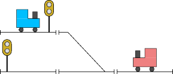
t1
ss2200
t2
A functional programming language with a strong type sys- tem, in this case F# [15, 23], was used as implementation platform. The concepts from a mathematical model of rail- way networks [17] are captured in a natural manner by type declarations and so are the concepts from reachability games. The F# translation functions from network models to games are formulated in a manner that is close to the mathematical formulation. This increases confidence in the correctness of
the implementation and it decreases the development time.
Figure 1: A railway network (inspired by [24]) containing four sections, two signals, two trains, and the point s11.
between connecting the sections s20 and s12 or the sections
s10 and s12 . Sections allow traffic in both directions.
The train t1 occupies section s20 and the train t2 occupies the section s12 . If the signal along section s20 is closed, it prevents t1 from entering s11 . The train t2 is free to enter s11 and continue to s10 or s20 depending on the state of s11 .
Based on the current positions of the trains, a control system must select the right configuration of points and signals. For this, the system needs a mapping from train positions to configurations. Such a mapping is also called a signaling plan and it can be considered an algorithm for controlling the traffic in a network. A signaling plan is correct, if it ensures that the trains reach their destinations without crashing. We consider the following problem:
Synthesis of correct signaling plans for railway networks
The synthesis problem is solved using game-based methods: In a reachability game, two players: Adam (the universal player) and Eve (the existential player), take turns moving a token along the edges of a graph. Eve wins the game, if the token reaches a designated set of vertices. Otherwise, Adam wins. We model a railway network as such a game.
The states of the network act as the vertices of the game and we make changes to the current state by moving the game token. Eve takes the role of the control system and is in charge of updating points and signals. Adam moves the trains, obeying the signals. Eve wins if the trains reach their destinations without crashing and Adam wins if he can move a train away from its route or crash it. If Eve can force Adam to lose, even if Adam acts as a perfect adversary, then we can get the trains correctly through the network. A correct signaling plan is obtained from Eve’s winning strategy.
Previously, game-based techniques have been used for syn-
thesis of control algorithms for concrete examples of railway- networks (e.g. [9]). However, to the best of the authors’ knowl- edge, at the time of writing, there have been no game-based attempts at solving the synthesis problem for arbitrary rail- way networks. For other examples of game-based synthesis, see [3, 4, 18].
Imperative features of F# proved useful in two places: Hash tables and arrays were used in the representations of the rail- way network model and the reachability game. This allowed for more compact representations and a more efficient game solver (providing the winning strategy).
In Europe, the predominant standard for railway signaling is the European Rail Traffic Management System (ERTMS), see for example [24]. ERTMS comprises a standard ETCS for in-cab signaling and automatic train protection systems [10]. ETCS has three application levels ranging from Level 1 to Level 3, where Level 3 is the most autonomous. In 2009, the Danish parliament decided to replace the entire railway- signaling system with an implementation of ERMTS with ETCS Level 2 [1].
In ETCS, signaling is controlled according to interlocking
tables. An interlocking table contains one entry for each el- ementary route in the network. An elementary route starts at a signal, ends at another signal, and there is no signal between the two. Compound routes are formed by concate- nating elementary routes. Signaling works according to the principle that a route is locked exclusively for one train at a time [24].
This static generation of routes has the advantage that a train entering a route can drive to the end of that route without stopping, thereby saving time and energy – frequent stop-and-go is energy consuming. However, the statically generated routes are inflexible and of no use if, for example, a malfunctioning train blocks a track and alternative routes are needed.
Correct signalling plans provide a controlling mechanism that can be used at run-time: In any traffic situation the controller makes a safe decision that brings the trains closer to their destinations. But signaling plans do not guarantee “good” routes: In the current form, there is no attempt at avoiding stop-and-go situations.
PGSolver. The PGSolver framework [12] provides an effi- cient platform for solving parity games, that is, a kind of
two-player games of perfect information and infinite duration. PGSolver is implemented in the functional programming language OCaml and our solver for reachability games is implemented in F#, which is closely related to OCaml. With respect to choices of data structures, our implementation is inspired by PGSolver.
In a turn-based two-player game, or from now on a game, the players Eve and Adam move a shared token along the edges of a shared game graph. The vertices of the game graph are partitioned into VE and VA. Eve chooses the next move from vertices in VE and Adam chooses the next move from vertices in VA.
Given a winning condition and an initial vertex, we want to know whether Eve can ensure a win, no matter how Adam plays. If this is the case, we are also interested in a winning strategy, which specifies a winning move from each vertex in VE . We now provide formal definitions of the above concepts. For a more thorough introduction, see e.g. [2, 19].
A game graph G is a tuple (VE, VA, E, c), where E ⊆ (VE∪VA )×(VE∪VA ) is the set of edges and c : (VE∪VA ) → C is a function, which colors every vertex with a color from the set C. We require that VE ∩ VA = ∅ and we let V = VE ∪ VA denote the set of all vertices. Also, for every v ∈ V , we define vE = {vi | (v, vi ) ∈ E}, which is the set of successors to v. We assume that vE = ∅ for all v ∈ V .
A play in G is an infinite sequence α = v0v1v2 . . . of vertices such that (vi, vi+1) ∈ E for all i ∈ N. Let c(α) denote the corresponding sequence c(v0)c(v1)c(v2) . . . of colors.
A game is a pair (G, Win), where G is a game graph and Win ⊆ Cω is a winning condition. Eve wins a play α, if c(α) ∈ Win. Otherwise, Adam wins.
A strategy for Eve is a function σ : V ∗VE → V such that σ(xv) = vi implies (v, vi ) ∈ E. A play v0v1v2 . . . is played according to the strategy σ, if
∀i ∈ N : vi ∈ VE ⇒ σ(v0v1 . . . vi ) = vi+1.
Given an initial vertex v0 and a strategy σ for Eve, let Out (σ, v0) denote all plays from v0 played according to σ. We say that σ is a winning strategy from v0, if c(α) ∈ Win for all α ∈ Out (σ, v0).
Suppose a designated target color ci ∈ C is given. A game with a winning condition of the form
{c0c1 . . . | ∃i ∈ N : ci = ci}
is called a reachability game [2]. In such a game, Eve wins a play, if the token eventually reaches a vertex colored ci. Vertices having color ci are called goal vertices. For this type of games, we have [2]:
Theorem 2.1. Let G = ((VE, VA, E, c), Win) be a reach- ability game. Then, there exists a partition {WinE, WinA} of V , such that Eve has a winning strategy from any initial
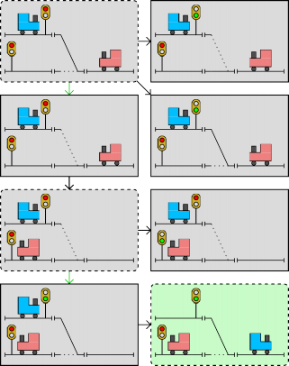
t1
v4
s20
t2
s10
s11
s12
t1
v1 initial
s20
t2
s10
s11
s12
t1
v5
s20
t2
s10
s11
s12
v8
s20
t2
t1
s10
s11
s12
s12
s11
s20
t2
s10
v7
t1
s12
s11
s20
t2
s10
v6
t1
s12
s11
s10
t2
s20
v3
t1
s12
s11
s10
t2
s20
v2
t1
Figure 2: A subset of the game graph induced by the rail- way network shown in Figure 1. The green edges (v1,v3) and (v5,v7) indicate Eve’s winning moves.
vertex v ∈ WinE and Adam has a winning strategy from any initial vertex v ∈ WinA.
In essence, this theorem states that if both players are perfect, then the winner is determined before the first move. We use the term winning areas to describe WinE and WinA.
In addition, it can be shown that reachability games are memoryless determined [2]. This means that in order to ensure a win, the winning player only needs to consider the current vertex when deciding on his next move.
A subset of the game graph for the railway network in Figure 1 is shown in Figure 2. Recall that Eve changes the configura- tion of signals and points and Adam moves the trains. That is, Eve controls the vertices with dashed edges and rounded corners and Adam controls the vertices with solid edges and sharp corners. In order to cause progression, we force Adam to move a train, if these are not all blocked by closed signals. The turn alternates between the two players.
The token starts at v1 , where the trains are at their initial
positions and the points and signals are in default states. The vertex v8 is a goal vertex, as we assume that t1 and t2 have sections s12 and s10 as respective destinations.
In v1, Eve has the turn and she must move the token to one of the vertices v2 , v3 , v4 , and some others not shown in Figure 2. From v2 , Adam can derail t1 by moving the train onto the point s11 , which connects s10 and s12 and not s20 and s12 . From v4 , Adam can collide the trains, because s11 connects s20 and s12 . Clearly, Eve wants to avoid these two vertices.
In v3 , t1 is blocked by a closed signal, so Eve does not risk derailment. The point s11 connects s10 and s12 , so she does not risk collision either. In addition, from v3 , Adam is forced to move t2 to s10 , which is the destination of t2 . Hence, Eve moves from v1 to v3 and Adam moves from v3 to v5 .
In v5 , Eve has the turn and she can choose between v6 , v7 , and other vertices not shown in Figure 2. From v6 , Adam can derail t2 , because the signal along s10 is open. Therefore, Eve moves to v7 .
In v7 , the point s11 connects s20 and s12 and the train t1 is allowed to move, as the signal along s20 is open. Because Adam is forced to move a train if he can, he must move t1 to s12 by moving the game token to v8 . This vertex is a goal vertex, so we terminate the game with Eve as the winner. Furthermore, Adam never had a chance of winning, so Eve has a winning strategy by making the moves just described. Notice that these moves also describe a correct signaling plan for the network.
The proof of Theorem 2.1 presented in [2] is interesting, be- cause it reveals a way to compute an optimal strategy for Eve. The corresponding algorithm is shown in Algorithm 1. This algorithm computes Eve’s winning area based on a breadth- first search: Starting from the goal vertices, it iteratively expands the winning area by exploring the reverse game graph. When the algorithm discovers an Eve vertex, it is included in the winning area, as Eve can move to the current winning area in one move. When the algorithm discovers an Adam vertex where every successor has been explored, it is also included in the winning area, as Adam has no choice but to move to the current winning area. In order to achieve linear time complexity, we keep track of the number of unexplored successors to each vertex.
The optimal strategy for Eve is to move to a vertex ex-
plored earlier than the current one whenever possible. This strategy is winning from every vertex in her winning area.
We use the types shown in Figure 3 to model game graphs and the concepts from Algorithm 1. With these types, the pseudocode of Algorithm 1 translates straightforwardly into an F# function solveReachability with the following type:
GameGraph<’misc,’color> -> ’color ->
Winners<’misc,’color> * Strategy<’misc,’color>
We represent a game graph G = (VE, VA, E, c) using adja- cency lists of the reverse graph and we augment each vertex with its number of successors: An entry in the dictionary for

Algorithm 1 Algorithm for solving a reachability game G with finite game graph (VE, VA, E, c) and target color ci. The winning areas of G can be obtained by scanning the output win and an optimal strategy for Eve is given by the output strategy. This algorithm is inspired by [2].
1: function SolveReachability((VE, VA, E, c), ci)
2: for all v ∈ VE ∪ VA do
3: win[v] ← Adam
4: P [v] ← ∅
5: n[v] ← 0
6: strategy[v] ← ⊥
7: for all (u, v) ∈ E do
8: P [v] ← P [v] ∪ {u}
9: n[u] ← n[u] + 1
10: Q ← ∅
11: for all v ∈ VE ∪ VA such that c(v) = ci do
12: win[v] ← Eve
13: Enqueue(Q, v)
14: while Q = ∅ do
15: v ← Dequeue(Q)
16: for all p ∈ P [v] do
17: n[p] ← n[p] − 1
18: if win[p] = Adam ∧ (p ∈ VE ∨ n[p] = 0) then
19: win[p] ← Eve
20: strategy[p] ← v
21: Enqueue(Q, p)
22: return (win, strategy)

type Player = Adam | Eve type Vertex<'misc, 'color>
when 'misc:equality and 'color:equality = 'misc * 'color * Player
type GameGraph<'misc, 'color>
when 'misc:equality and 'color:equality = Dictionary<Vertex<'misc, 'color>,
int * List<Vertex<'misc, 'color>>> type Winners<'misc, 'color>
when 'misc:equality and 'color:equality = Dictionary<Vertex<'misc, 'color>, Player>
type Strategy<'misc, 'color>
when 'misc:equality and 'color:equality = seq<Vertex<'misc, 'color> * Vertex<'misc, 'color>>
Figure 3: Representations of game graphs, winning areas, and strategies. The int component of GameGraph is used to store the number of successors to a vertex. The types List and Dictionary are from the standard library of the Common Language Infrastructure [6, 8] and they implement dynamic arrays and hash tables.
a given vertex v is a pair (k, [v1; . . . ; vn]), where k is the num- ber of unexplored successors to v in G and where (vi, v) ∈ E for 1 ≤ i ≤ n. This representation is the basis of an efficient game-solving algorithm that is linear in both the number of vertices and the number edges.
type Label = string
type Linear = Linear of Label
type LinearExtended = RealLinear of Linear | Derail type Point = Point of Label
type LinearPort = Down of Linear | Up of Linear type PointPort = | Stem of Point
| Plus of Point
| Minus of Point
type PointPortExtended = | RealPointPort of PointPort
| PointPortNull type Port = | LinearPort of LinearPort
| PointPort of PointPort
type PortExtended = RealPort of Port | Null type Signal = LinearPort
Figure 4: The types representing basic railway network con- cepts.
The basic concepts from the mathematical model are ex- pressed by F# types in Figure 4. Central concepts are linear section (type Linear) and point section (type Point). Each section has a unique label.
A port (type Port) is the end of a section: A linear sec- tion has two ports called up and down and a point section has three ports called stem, plus, and minus. The track be- tween stem and plus forms the main path through the point. These concepts originate from the Danish railway terminol- ogy, where up (down) denotes the direction, in which the distance from some reference location is increasing (decreas- ing) [24]. A signal (type Signal) is placed at a port of a linear section.
Some types have been extended in order to cover special
cases: For example, LinearExtended contains the artificial section Derail, which indicates a derailment. Likewise, Port- Extended contains the artificial port Null, which marks the end of a track.
Network Specifications and States
In Figure 5, we present the types representing railway net- works and their states. A network (type Network) is a tuple (L, P, con, Signals, start, dest), where
L is the set of linear sections,
P is the set of points,
con is a function describing the connections of the ports,
Signals is the set containing the linear ports, at which there are signals, and
the vectors start and dest describe the initial posi- tions and the destinations of the trains.
A state (type State) represents an instantaneous descrip- tion of the network. A state is a tuple (pos, Π, Σ), where
pos is a vector describing the train positions,
type PositionVector = Linear[]
type PositionVectorExtended = LinearExtended[]
type Network = (HashSet<Linear> * HashSet<Point>
(Port -> PortExtended)
HashSet<Signal>
PositionVector * PositionVector)
type Direction = DirectionDown | DirectionUp
type PointState = PointStatePlus | PointStateMinus [<CustomEquality; NoComparison>]
type State = State of PositionVectorExtended
HashSet<Point>
HashSet<Signal>
Figure 5: The types representing railway networks and their states. The type HashSet is from the standard library of the Common Language Infrastructure [7] and it implements math- ematical sets.
Π is a set containing every point in the plus-state
connecting the stem-port and the plus-port, and
Σ is a set containing the open signals.
We have implemented custom definitions for equality and comparisons of State. This is because the standard library uses pointer equality to determine, whether two HashSets are equal. Hence, without custom definitions, we may distinguish states, which are equal in a mathematical sense.
Note that it is possible to optimize the types of Figure 4 and Figure 5 for greater performance: By incorporating Signal into Linear and PointState into Point, we can determine the states of signals and points without lookups in Π and Σ. In fact, Π and Σ would be unnecessary. However, in order to increase development speed and minimize the risk of bugs, we have kept the type definitions simple and close to the mathematical model.
The railway model from [17] distinguishes between two types of state transitions: Movements of trains and updates to points and signals. The railway control system has no direct control of the former, whereas it has full control of the latter (leading to the roles of Adam and Eve).
At most one train moves during a single state transition. It moves directly to the next linear section, possibly traversing a point section in the process. It may also derail, if it leaves a section through an unconnected port or if it enters a point which is in the wrong state.
There is no restriction on the number of points and signals that may change state during a single transition.
Translation to a Reachability Game
The states of a railway network act as the vertices of the corresponding game graph and the state transitions act as the edges. Given a railway network, we use a simple search to generate the game graph explicitly: Starting from the vertex representing the initial state, we iteratively generate successors to discovered vertices. This continues until we have explored the entire game graph.
Function | Type |
color | Network -> PositionVectorExtended -> Color |
next | Network -> State -> Linear -> Direction -> LinearExtended |
succAdam | GameVariant -> Network -> Direction[] -> Vertex -> List<Vertex> |
relPointsSigs2 | Network -> Direction[] -> Linear[] -> (List<LinearPort> * HashSet<Point> * List<Signal>) |
relPointsSigs3 | Network -> Direction[] -> Linear[] -> (bool * HashSet<Point> * List<Signal * Point option>) |
succEve | GameVariant -> Network -> Direction[] -> Vertex -> List<Vertex> |
nextLinears | Network -> Direction -> Linear -> Linear list |
directions | Network -> Directions[] |
graph |
The function succEve generates successors resulting from updating points and signals. Since any number of points and signals can be updated during a single state transition, this function generates a number of successors exponential in the number of points and signals. However, this only
applies to the game variants G0 and G1. When generating
the graphs of G2 and G3, succEve uses relPointsSigs2 and
GameVariant -> Network -> (GameGraph<State,Color>
* Vertex<State,Color>)
Table 1: An overview of the central functions concerning the translation from a network specification to a reachability game.
We do not generate successors to crash vertices or goal vertices, as the outcome of the game is known, when the game token reaches such a vertex. We use the type Color to distinguish crash vertices and goal (success) vertices from the remaining vertices:
type Color = Crash | Nothing | Success
The type of the generated graph is Graph<State,Color>. That is, the type of the vertices is Vertex<State,Color>.
The program design facilitating game-graph generation is shown in Table 1. This design follows naturally from the railway model presented in [17] and each function declara- tion is formulated in a manner that closely resembles the corresponding mathematical definition.
The main function is graph: Given a well-formed network, it returns the corresponding game graph and the initial vertex. To be more precise, graph generates the game graph of one of four variants G0, G1, G2, and G3 of the reachability game. We discuss these variants in Section 4. The desired variant is specified by the first parameter, which is of type Game-
Variant:
Finally, the function color colors a vertex based on the positions of the trains in the corresponding state.
From Strategies to Signaling Plans
The function solveReachability computes Eve’s winning strategy for a given game graph. From this strategy, we must extract a signaling plan. A signaling plan contains exactly one entry for each vector of train positions, from which we can get the trains safely to their destinations. Thus, we partition the winning vertices based on their train positions and select one vertex from each partition. For each of these vertices, the strategy describes Eve’s winning move. Since an Eve move corresponds to an update of the points and signals, each winning move describes a signaling configuration that is a safe response to the given train positions. Hence, the winning moves from the selected vertices yield the entries in the signaling plan:
type SignalingPlan = seq<PositionVector
* (HashSet<Point> * HashSet<Signal>)>
Let G0 be the original reachability game, in which every state is a vertex and every state transition is an edge. It follows from the declaration of State that a network (L, P, con, Signals, start, dest) can be in (|L| + 1)n2|P|+|Signals| dif- ferent states, where n denotes the number of trains. Since both Eve and Adam can have the turn from any of these states, an immediate upper bound on the number of vertices in G0 is (|L| + 1)n21+|P|+|Signals|. With some simple combi- natorics, it is possible to obtain the following tighter bound [17]:
type GameVariant = Zero | One | Two | Three
0
V
max
= pos
max
21+|P|+|Signals| (1)
The function directions assigns directions to the trains: Each train is assigned the direction, which allows the train to reach its destination. This direction is found using a search on
the linear sections. During this search, we use nextLinears,
Here, posmax is an upper bound on the number of ways to distribute the trains, keeping in mind that we stop the game after a single derailment or a single collision. It is defined as
posmax = ( 1 + n + (n−1)n ) |L|!.
which computes the next linear sections in a given direction.
(|L|−n)! (|L|−(n−1))! 2(|L|−(n−1))!
The functions succAdam and succEve generate successors to a vertex. The function succAdam uses next to compute
The first term is the number of distinct position vectors of non-crash states, the second term is the number of distinct
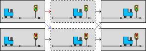
v1
t1
s10
s11
v4
t1
s10
s11
v2
t1
s10
s11
v5
t1
s10
s11
s11
s10
t1
v6
s11
s10
t1
v3
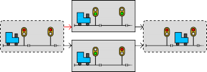
v2
t1
v1
s10
s11
v4
t1
t1
v3
s10
s11
s10
s11
t1
s10
s11
Figure 6: An abstraction that ignores irrelevant Eve vertices. Adam resets every signal to closed before passing the turn to Eve. Hence, the red edge (v1,v2) is replaced by the blue edge (v1,v5). This renders v2 unreachable. Because v2 and v5 have the same successors, v2 is in Eve’s winning area if and only if v5 is in Eve’s winning area. Hence, we have not changed the outcome from v1, so this abstraction does not change the winner of the game.
position vectors in derail states, and the last term is the number of distinct position vectors in collision states.
max
The upper bound V 0 is exponential in the number of points and signals and near-exponential in the number of trains. This renders synthesis intractable for all but the small- est networks. Therefore, we have devised three abstractions, each of which significantly reduces the size of the game graph. When all abstractions are applied, the upper bound on the size of the game graph is exponential only in the number of trains.
These abstractions do not change the winner of the game,
Starting from the original game G0, we obtain the game variants G1, G2, and G3 by repeatedly applying an additional abstraction to the previous variant.
Ignoring Irrelevant Eve Vertices
The first abstraction is based on the following observation: When Eve receives the turn, the configura-
tion of points and signals is irrelevant, as
Eve can change it to whatever she likes be- fore passing the turn to Adam. Hence, with- out changing the outcome of the game, we can force Adam to reset every point to the minus-state and every signal to closed before passing the turn to Eve.
Figure 7: An abstraction that ignores irrelevant points and signals. We assign the default value of closed to every signal not directly in front of a train. Hence, we remove the red edge (v1,v2). This renders v2 unreachable. Also, because v2 and v3 have the same successor, v2 is in Eve’s winning area if and only if v3 is in Eve’s winning area. Therefore, we have not changed whether v1 has a successor in the winning area. Thus, we have not changed the outcome from v1 and consequently, we have not changed the winner of the game.
Ignoring Irrelevant Points and Signals
The next abstraction is based on the following observation:
When Adam has the turn, the state of a point or a signal not immediately in front of a train is irrelevant, as Eve can change that point or signal before a train comes close enough to be influenced by it. Also, if we consider a point s and every train about to enter s is blocked by a closed signal, then the state of s is irrelevant.
If we assign the default values of minus-state and closed to irrelevant points and signals, then the size of the game graph is reduced significantly. The effect of this abstraction is illustrated in Figure 7. The game variant G2 is the result of applying this abstraction to G1.
What is the upper bound on the number of vertices in G2? The number of Eve vertices stays the same but the maximum number of successors to each Eve vertex is 3n. Why? In the worst case, each train is in front of a distinct signal s and a distinct point p. We claim that there are three relevant configurations of s and p: If s is closed, then the state of p does not matter, so we use the default value of minus-state. If s is open, then we need to consider both the minus-state and the plus-state.
Each train gives raise to three such configurations and we
must generate all combinations. Hence, we have at most 3n
successors. In addition, this abstraction does not introduce
This implies that every reachable Eve vertex has every point in the minus-state and every signal closed. The effect of this
abstraction is illustrated in Figure 6. The game variant G1 is
additional vertices, so V 1
max
we obtain the following:
is still an upper bound. Hence,
the result of applying this abstraction to G0.
V 2 = min{pos
(3n + 1), V 1 } (3)
In 1
max
max
max
G , we can have at most one reachable Eve vertex per
This upper bound is exponential only in the number of
obtainable vector of train positions. The number of Adam vertices stays the same, so an upper bound on the number vertices in G1 is
trains. In contrast, the previous bound was exponential in the number of trains, points and signals. Typically, the number of
trains is much smaller than the number of points and signals,
V
1
max
= pos
max
(2|P|+|Signals| + 1). (2)
so this amounts a big difference in the size of the game graph.
s10 | s11 | t2 s12 | v2 |
t1 s10 | s11 | t2 s12 | v4 |
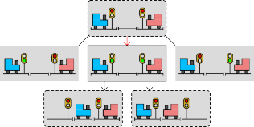
v1
t1
t2
s10 s11
s12
v5
v6
t1
t2
t1
t2
s10
s11
s12
s10
s11
s12
s12
s11
s10
t2
t1
v3
Figure 8: An abstraction that removes redundant Eve moves.
First, consider only the trains directly in front of signals. Let ni denote the number of these trains. In the worst case, there is a distinct point behind each signal. In each vertex, at most one signal is open, so the only relevant point is the one behind that signal. Hence, we have 2ni relevant configurations in addition to one where every signal is closed.
max
Now consider the remaining (n − ni ) trains. In the worst case, they are all in front of points, which gives raise to 2n−nt configurations. We must generate all combinations, so we have 2n−nt (2ni + 1) successors. Within the real numbers, this value has a maximum at ni = γ ≈ 0.94, so we arrive at the following bound on the number of vertices:
At most one signal can be open at any time. Hence, we re-
3
V
max
= min{pos
max
(l2n−γ (2γ + 1)j + 1), V 2
} (4)
move the red edge (v1,v3) from the game. This renders v3 unreachable. Also, because the successors to v2 and v4 are subsets of the successors to v3, if Eve wins from v3 she also wins from v2 and v4. Consequently, removing (v1,v3) does not influence the outcome from v1. Conversely, if Eve wins from v2 or v4, her victory does not depend on v3. Hence, adding (v1,v3) does not influence the outcome from v1 ei- ther. We can conclude that this abstraction does not change the winner of the game.
The third abstraction is based on the following observation:
Assume that every train has a signal in front of it. Eve can close all but a single signal and thereby determine, which train Adam is go- ing to move. If Eve’s winning strategy allows more than one signal to be open, then from Eve’s point of view, it is irrelevant which of the corresponding trains Adam moves. The strategy leaves the decision up to Adam. However, Eve can make this decision herself. That is, she can select one of the signals al- lowed to be open and close all other signals.
We can force Eve to make this decision by only generating successor vertices, in which at most one signal is open. This significantly reduces the number of Adam vertices. The effect of this abstraction is illustrated in Figure 8. The game variant G3 is the result of applying this abstraction to G2.
As with the other abstractions, this one does not change the outcome of the game. However, in real railway networks where trains can move concurrently, it does indeed make a difference that at most one signal can be open at any time. In situations where it is safe to allow more than one train to move, this abstraction is restrictive and increases the time it takes for all trains to get to their destinations. However, in small networks with large numbers of trains, many signals have to be simultaneously closed in order to avoid collisions. In such cases, this abstraction does not appear too restrictive. What is the upper bound on the number of vertices in G3? Again, the number of Eve vertices stays the same but the maximum number of successors to an Eve vertex is now l2n−γ (2γ + 1)j, where γ = (2 − ln(2))/ ln(4) ≈ 0.94. Why?
If we compare this to the previous upper bound, we have reduced the base of the exponential function.
The presented algorithms, abstractions, and F# definitions have been incorporated into a synthesis tool. This tool accepts specifications of railway networks written in a domain specific language (DSL). The tool outputs correct signaling plans, whenever such exist.
The following piece of DSL specifies the network shown in Figure 1:
connections =
s10.up -> s11.plus, s20.up -> s11.minus, s11.stem -> s12.down
signals = s20.up, s10.down trains = s20 -> s12, s12 -> s10
As shown, a network is specified by a list of port connec- tions, a list of signals, and a list of the initial positions and destinations of the trains. This immediately yields the last four components of a network specification (L, P, con, Signals, start, dest). The sets L and P are extracted from the list of connections. A formal grammar of this DSL is in [17].
The parser for this DSL was constructed using the parser- combinator library FParsec [11]. This library is an adaptation of the Haskell-library Parsec [11]. Compared to graph genera- tion and game solving, parsing is blazingly fast (see Table 3).
If the given network is well-formed, the tool constructs the game graph and solves the game. Afterwards, it outputs a few performance statistics and a correct signaling plan, if one exists.
Railway network loaded! Generating game graph... Game graph generated!
Number of vertices: 37 Number of edges: 60 Computing signaling plan... signalingplan([s20, s10]) =
plus:
minus: s11
s09
s10
s11
s12
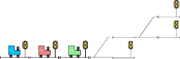
s30
s1121
s20
s21
t1
t2
t3
open: s20.up
closed: s10.down signalingplan([s20, s12]) =
plus: s11
minus:
open:
closed: s20.up, s10.down
Parsing and well-formedness: 0.0959 seconds Game-graph generation: 0.0389 seconds Signaling-plan computation: 0.0547 seconds
Total execution time: 0.190 seconds
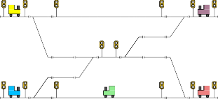
t4
t5
s30
s31
s32
s33
s34
s22m
s20p
s20
s21
s22
s22p
s20m
t1
t3
t2
Figure 9: Output of the synthesis tool after solving the net-
0
Figure 10: The network Fork inspired by [24].
work from Figure 1 with G .
s11
s12
s13
s14
The output after solving the network from Figure 1 is shown in Figure 9. From this output, it is evident that the tool has computed a signaling plan: If the trains t1 and t2 have the respective positions s20 and s10 , then a safe configuration is to put s11 in the minus-state and open only the signal at the up-port of s20 . If t1 and t2 have the positions s20 and s12 , then a safe configuration is to put s11 in plus-state and close all signals. This exactly corresponds to Eve’s winning moves in the game from Figure 2.
In order to determine its performance, we conducted several experiments with the synthesis tool [17]. We used, among others, the networks Toy, Fork, Lyngby Station, and Florence Station depicted in Figure 1, Figure 10, Figure 11, and Fig- ure 12, respectively. The complexities of these networks are summarized in Table 2.
Figure 11: A railway network resembling Lyngby Station lo- cated north of Copenhagen, Denmark. Compared to the lay- out of Lyngby Station shown in [24], we have added four linear sections, as our model does not allow two points directly con- nected to each other.
The most interesting result is that we are able to generate correct signaling plans for Lyngby Station with five trains in
0.67 seconds and for Florence Station with four trains in 8.1 seconds. That is, we are able to generate signaling plans for real railway networks in less than 10 seconds.
These running times are achieved using G3. With G2, the running time for Lyngby Station approximately quadruples to 2.6 seconds and for Florence Station it increases by roughly 50 percent to 12 seconds. When using G0 and G1, the tool runs out of memory before the signaling plans are generated. This is a testimony to the usefulness of the abstractions presented in Section 4.
The abstraction of ignoring irrelevant points and signals seems especially powerful: Lyngby and Florence Stations are
max
unsolvable with G1 but are solvable with G2. This is no real

Linears
Fork Lyngby Florence
7
11
69
Points 1
2
6
23
Signals Trains
Toy 3
2
6
14
46
2
3
5
4
Table 2: Overview of the sizes of the networks used for exper-
surprise, as V 1
(see equation (2)) is exponential in the
2
iments.
During the experiments, we measured the sizes of the generated game graphs and the running times of several phases of the computations. Each of the game variants G0, G1, G2, and G3 was used to solve each of the networks. The experiments were conducted on a MacBook Pro1 (Retina 13”, primo 2015). The results are shown in Table 3.
1 This machine has a 2.7-GHz Intel-Core-i5 processor and 8 GB of 1867-MHz DDR3 memory. The source code was compiled using The Open Edition of the F# Compiler [20] and executed using the Mono
JIT compiler (version 4.2.3) under OS X El Capitan (version 10.11.5).
number of trains, points, and signals, whereas Vmax (see equation (3)) is exponential only in the number of trains.
The difference between G2 and G3 is much smaller: The running times when using G2 are within a factor four of the running times obtained by G3. Hence, if we find the at-most- one-open-signal aspect of G3 too restricting, then we can use G2 and expect no more than a quadruplication of the running time.
It is also worth noting that the sizes of the generated game graphs are significantly lower than the upper bounds presented in Section 4. In these upper bounds, we include every possible way of distributing the trains in a network. However, many of these distributions are not obtainable, as two trains cannot pass each other on a single track. In
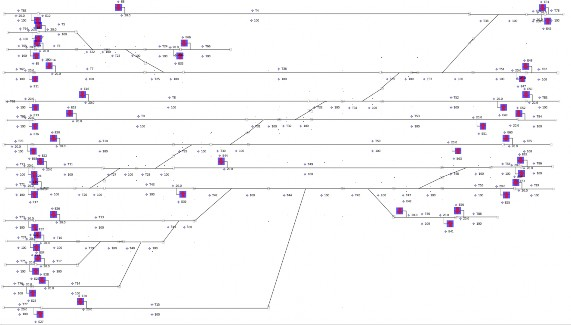
addition, it is often the case a train cannot reach a large part of the network, as it is not allowed to change direction. Hence, in large networks with many trains, these bounds are not very tight. However, if we keep this in mind, they can still serve as indications of the complexity of a given railway network.
We now turn to the running times of the individual compu- tation phases: The parsing and the checks for well-formedness always take around 0.1 seconds and the majority of this is probably spent on disk access. These steps are fast, because they only require an amount of work linear in the number of network entities. For example, parsing a port connection requires processing a constant amount of characters2.
For the networks Lyngby and Florence Stations, the gen- eration of the game graph takes significantly longer than solving the resulting game. This is expected, as Algorithm 1 spends very little time at each vertex: It makes a few reads and writes in hash tables and adds new nodes to a queue. All of these operations are fast. During graph generation, we have to maintain the hash table that represents the game graph. In addition, we need to find the next linear sections of trains, find the relevant points and signals, and compute power sets of points and signals. Therefore, game-graph generation is the performance bottleneck.
Finally, the tool can use a lot of memory. This is indicated
by the fact that G and G1 cannot solve Lyngby and Florence Stations without running out of memory. Also, adding a
2 If the network features unusually long identifiers, then the time complexity per connection cannot be described as constant.
fifth train to Florence Station causes the tool to run out of memory when we use G2 and G3.
The maximum amount of memory that the tool can allo- cate seems to be somewhere between 2.85 GB and 3.37 GB. This is a limit imposed by the Common Language Runtime or the operating system, as the machine used for experiments has 8 GB of memory and plenty of disk space for virtual memory.
We did not have the time to figure out how to remove this artificial limit. Hence, we cannot determine the precise amount of memory needed to solve Florence Station with five trains. However, when we add the fifth train, the upper bound on the number of vertices in G3 increases from 6.0×108 to 8.1 × 1010, which is a factor 135 increase. When solving Florence Station with four trains, the tool uses approximately
0.14 GB of memory, so it is reasonable to assess that the tool needs roughly 19 GB of memory to solve Florence Station with five trains. By the same logic, it would take roughly 18 minutes to compute a signaling plan.
Purely Functional Game-Graph Generation
In order to determine the performance of purely functional game-graph generation, we left the imperative constructs of Algorithm 1 unchanged but replaced all other impera- tive constructs with purely functional counterparts. In this process, we replaced hash-based data structures with purely functional ones. More specifically, we replaced HashSets and Dictionaries with Sets and Maps from the F# library [13].
Toy Fork | Lyngby | Florence | ||
V 0 max #vertices | 240 236544 | 3.7 × 1011 | 2.8 × 1028 | |
37 34849 | – | – | ||
G0 | parsing & WF graph generation | 0.10 0.10 0.039 6.7 | – – | – – |
game solving | 0.055 0.31 | – | – | |
total time | 0.19 7.1 | – | – | |
V 1 max #vertices | 135 118734 | 1.8 × 1011 | 1.4 × 1028 | |
24 14484 | – | – | ||
G1 | parsing & WF graph generation | 0.10 0.10 0.064 0.31 | – – | – – |
game solving | 0.025 0.042 | – | – | |
total time | 0.19 0.46 | – | – | |
V 2 max #vertices | 135 12936 | 4.3 × 107 | 2.0 × 109 | |
18 672 | 78530 | 253063 | ||
G2 | parsing & WF graph generation | 0.10 0.11 0.069 0.085 | 0.11 2.3 | 0.10 12 |
game solving | 0.021 0.028 | 0.11 | 0.40 | |
total time | 0.19 0.22 | 2.6 | 12 | |
V 3 max #vertices | 105 6006 | 8.5 × 106 | 6.0 × 108 | |
15 410 | 25467 | 220733 | ||
G3 | parsing & WF graph generation | 0.10 0.11 0.068 0.074 | 0.11 0.51 | 0.10 7.5 |
game solving | 0.024 0.024 | 0.057 | 0.47 | |
total time | ||||
Table 3: The results of the experiments. The number of gen- erated vertices is denoted #vertices and the checks for well- formedness are denoted WF. Time measurements are given in seconds and measurements less than 0.5 seconds have a large relative uncertainty due to the unpredictable timing of the garbage collector. A dash indicates that the computation aborts with an out-of-memory exception after allocating be- tween 2.85 GB and 3.37 GB of memory.
This purely functional version performed worse than the imperative version: The running time of using G3 on Lyngby Station was 4.8 seconds instead of 0.67 seconds and the running time of using G3 on Florence Station was 63 seconds instead of 8.1 seconds. This is roughly a factor 8 increase in the running time.
The purely functional Sets and Maps are implemented using balanced binary search trees [13], so lookups, insertions, and deletions run in O(log n) time. In comparison, these operations take expected O(1) time on the HashSets and Dictionaries. This difference in the asymptotic running times is the most likely explanation of the eight-fold increase in the overall performance.
Reachability games have been successfully used to synthesize signaling plans for railway networks:
A mathematical model of railway networks was de- veloped. This model describes the state space of a network and the transitions between these states. Furthermore, a simple DSL for describing railway networks has been defined.
A game semantics for the DSL was given in terms of reachability games, where the states of a network act as vertices and the state transitions act as edges. Eve, the existential player, acts as the control system being responsible for the points and signals, and Adam, the universal player, acts as an adversary controlling the trains. It was shown how to obtain a correct signaling plan from Eve’s winning strategy. This signaling plan will bring trains safely from their initial positions to their destinations.
A tool for synthesizing correct-by-construction signal-
ing plans from DSL specifications was implemented in the functional programming language F#.
An upper bound on the size of the original railway game was given. This bound is exponential in the number of trains, points, and signals. This renders computations on large net- works impossible, so three abstractions were introduced, each leading to a game variant equivalent to the original. Each abstraction significantly reduces the upper bound on the game size.
Due to the static and explicit generation of the full game
graphs, the bottleneck of the current implementation is the memory needed during the graph generation process. The game-solving part uses an efficient implementation of a linear- time algorithm and for the networks considered that part alone never took more than 0.5 seconds.
To improve on the space limitations during game graph generation, the next step is to exploit on-the-fly methods, which will only generate the part of the game needed to find the winning area of Eve. Such techniques have been successfully used in, for example, [5]. An even further step would be to use symbolic methods to represent and solve games. This approach is used in [16], where very large parity games are solved symbolically. Because reachability games are simpler than parity games, this approach seems promising in the context of our railway game.
A functional programming approach proved to be most
adequate during the development of the synthesis tool. The program design, expressed using F#’s type system, is very close to the mathematical definition of the railway-network model [17]. This has obvious benefits concerning the vali- dation of correctness and the development time. The same applies to the game design, implementation, and construction parts.
Concerning efficiency, the experimental results show that it is the exponential growth of the size of the game graph that is the bottleneck – not the chosen data types nor the algorithms.
Imperative data structure were used to represent the game. In that way a more succinct representation could be obtained that also resulted also in more efficient implementations of the key algorithms.
Work of the second author was partially supported by the Danish Research Foundation for Basic Research within the IDEA4CPS project. We greatly appreciate suggestions from and discussions with Alessandro Fantechi and Anne Hax- thausen. Furthermore, Alessandro provided the Florence- Station example.
Below, we list the source code that implements Algorithm 1. In contrast to Algorithm 1, the function solveReachability takes as input a reverse game graph with information on the number of successors to each vertex:
1 let color (_, c, _) = c
2 let owner (_, _, plr) = plr
3
4 //val solveReachability :
5 // GameGraph<'misc,'color> -> 'color ->
6 // Winners<'misc,'color> * Strategy<'misc,'color>
7 let solveReachability
8 (graph : GameGraph<'misc,'color>) target =
9
10 let numPos = graph.Count
11 let win : Dictionary<Vertex<'misc,'color>, Player> =
12 Dictionary (numPos)
13 let strategy : Dictionary<Vertex<'misc,'color>,
14 Vertex<'misc,'color>> =
15 Dictionary (numPos)
16
17 // Initialization
18 let queue = Queue ()
19 for KeyValue (v, _) in graph do
20 if color v = target then
21 win.[v] <- Eve
22 queue.Enqueue v
23 else
24 win.[v] <- Adam
25
26 // Breadth first search
27 while queue.Count > 0 do
28 let v = queue.Dequeue ()
29 for p in snd graph.[v] do
30 let (n, pred) = graph.[p]
31 graph.[p] <- (n - 1, pred)
32 if win.[p] = Adam && (owner p = Eve
33 || fst graph.[p] = 0)
34 then
35 win.[p] <- Eve
36 strategy.[p] <- v
37 queue.Enqueue p
38
39 // Post-processing of the computed strategy
40 let strategy' =
41 Seq.filter (fun (KeyValue (u, v)) ->
42 owner u = Eve)
43 strategy
44 let strategy'' =
45 Seq.map (fun (KeyValue (u, v)) -> (u, v))
46 strategy'
47 (win, strategy'')
Below, we list the source code of the function graph, which explicitly generates a reverse game graph. This graph carries information on the number of successors to each vertex:
1 //val graph :
2 // GameVariant -> Network ->
3 // (Games.GameGraph<State,Color>
4 // * Games.Vertex<State,Color>)
5 let graph gameVariant (network : Network) =
6
7 let graph : Games.GameGraph<State,Color> =
8 Dictionary ()
9 let frontier :
10 HashSet<Games.Vertex<State,Color>> =
11 HashSet ()
12
13 // Graph-generation helper functions
14 let isNew v = not (graph.ContainsKey v)
15 let addVertex v = graph.[v] <- (0, List ())
16 let addEdge from' to' =
17 (snd graph.[to']).Add from' |> ignore
18 let setNumSuccessors v num plr =
19 match plr with
20 | Games.Player.Adam ->
21 countAdamMoves (int64 num)
22 | Games.Player.Eve ->
23 countEveMoves (int64 num)
24 let (_, pred) = graph.[v]
25 graph.[v] <- (num, pred)
26
27 // Compute the directions of the trains
28 let dir = directions network
29
30 // Graph-generation loop
31 let rec graphAux () =
32 if frontier.Count = 0 then ()
33 else
34 let v = takeOne frontier
35 let mutable succs = null
36 match v with
37 | (_, _, Games.Player.Eve) ->
38 succs <- succEve gameVariant
39 network dir v
40 setNumSuccessors v succs.Count
41 Games.Player.Eve
42 | (_, _, Games.Player.Adam) ->
43 succs <- succAdam gameVariant
44 network dir v
45 setNumSuccessors v succs.Count
46 Games.Player.Adam
47 for v' in succs do
48 if isNew v' then
49 frontier.Add v' |> ignore
50 addVertex v'
51 addEdge v v'
52 graphAux ()
53
54 // Initialize the search
55 let initialVertex = initialVertex network
56 match initialVertex with
57 | (_, Success, _) -> addVertex initialVertex
58 | (_, Crash, _) ->
59 failwith ("the starting vertex "
60 + "contains a failure state")
61 | (_, Nothing, _) ->
62 addVertex initialVertex
63 frontier.Add initialVertex |> ignore
64 graphAux ()
65
66 (graph, initialVertex)
Banedanmark. 2009. The Signalling Programme, A total renewal of the Danish signalling infrastructure. http://uk.bane.dk/ db/filarkiv/5636/Updated%20UK%20Brochure%20090317_ BDK_Signalprogrammet_UKbrochure_%20www.pdf ISBN: 978-87-90682-04-0.
Roderick Bloem, Krishnendu Chatterjee, Karin Greimel, Thomas A. Henzinger, Georg Hofferek, Barbara Jobstmann, Bettina Könighofer, and Robert Könighofer. 2014. Synthesiz- ing robust systems. Acta Inf. 51, 3-4 (2014), 193–220. DOI: https://doi.org/10.1007/s00236-013-0191-5
Roderick Bloem, Barbara Jobstmann, Nir Piterman, Amir Pnueli, and Yaniv Sa’ar. 2012. Synthesis of Reactive(1) designs. J. Comput. Syst. Sci. 78, 3 (2012), 911–938.
F Cassez, A David, E Fleury, KG Larsen, and D Lime. 2005. Efficient on-the-fly algorithms for the analysis of timed games. Lecture Notes in Computer Science 3653 (2005), 66–80. DOI: https://doi.org/10.1007/11539452_9
CDictionary 2016. Dictionary(TKey, TValue) Class (Sys- tem.Collections.Generic). (2016). Retrieved May 28, 2016 from https://msdn.microsoft.com/en-us/library/xfhwa508(v=vs. 110).aspx
CHashSet 2016. HashSet(T) Class (System.Collections.Generic).
(2016). Retrieved May 28, 2016 from https://msdn.microsoft. com/en-us/library/bb359438(v=vs.110).aspx
CList 2016. List(T) Class (System.Collections.Generic). (2016).
Retrieved June 3, 2016 from https://msdn.microsoft.com/en-us/ library/6sh2ey19(v=vs.110).aspx
Alexandre David, Huixing Fang, Kim Guldstrand Larsen, and Zhengkui Zhang. 2014. Verification and performance evaluation of timed game strategies. Lecture Notes in Computer Science (including Subseries Lecture Notes in Artificial Intelligence and Lecture Notes in Bioinformatics) 8711 (2014), 100–114. DOI: https://doi.org/10.1007/978-3-319-10512-3_8
ERTMS 2016. The European Rail Traffic Management System. (2016). Retrieved May 18, 2016 from http://www.ertms.net/
FParsec 2016. FParsec Documentation. (2016). Retrieved May
Oliver Friedmann and Martin Lange. 2009. Solving Parity Games in Practice. Lecture Notes in Computer Science 5799 (2009), 182–196. DOI:https://doi.org/10.1007/978-3-642-04761-9_15
FSet 2016. Collections.Set<’T> Class (F#). (2016). Retrieved
June 4, 2016 from https://msdn.microsoft.com/visualfsharpdocs/ conceptual/collections.set%5b%27t%5d-class-%5bfsharp%5d
Erich Grädel, Wolfgang Thomas, and Thomas Wilke (Eds.). 2002. Automata, Logics, and Infinite Games: A Guide to Current Re- search. Lecture Notes in Computer Science, Vol. 2500. Springer.
Michael R. Hansen and Hans Rischel. 2013. Functional Program- ming using F#. Cambridge University Press, Shaftesbury Rd, Cambridge CB2 8RU, UK.
Gijs Kant and Jaco Van De Pol. 2014. Generating and solving symbolic parity games. Electronic Proceedings in Theoretical Computer Science 159 (2014), 2–14. DOI:https://doi.org/10.4204/ EPTCS.159.2
Patrick Kasting. 2016. Synthesis of Railway Signaling Plans using Reachability Games. BSc thesis. Technical University of Denmark.
Hadas Kress-Gazit, Georgios E. Fainekos, and George J. Pap- pas. 2009. Temporal-Logic-Based Reactive Mission and Motion Planning. IEEE Trans. Robotics 25, 6 (2009), 1370–1381. DOI: https://doi.org/10.1109/TRO.2009.2030225
Christof Löding. 2011. Infinite games and automata theory. In Lectures in Game Theory for Computer Scientists. Cambridge University Press, Shaftesbury Rd, Cambridge CB2 8RU, UK, 38–73. DOI:https://doi.org/10.1017/CBO9780511973468.003
OFC 2016. The Open Edition of the F# compiler, core library
and tools. (2016). Retrieved May 31, 2016 from https://github. com/fsharp/fsharp
Amir Pnueli and Roni Rosner. 1989. On the Synthesis of a Reac- tive Module. In Conference Record of the Sixteenth Annual Acm Symposium on Principles of Programming Languages. Associa- tion for Computing Machinery, 271 Chemin de Saint-Julien, 06140 Biot, France, 179–190. DOI:https://doi.org/10.1145/75277.75293
Amir Pnueli and Roni Rosner. 1989. On the Synthesis of an Asyn- chronous Reactive Module. Lecture Notes in Computer Science 372 (1989), 652–671. DOI:https://doi.org/10.1007/BFb0035790
Don Syme, Adam Granicz, and Antonio Cisternino. 2015. Expert F# 4.0. Apress Media, 233 Spring Street, 6th Floor, New York, NY 1001, US.
Linh Hong Vu. 2015. Formal Development and Verification of Railway Control Systems - In the context of ERTMS/ETCS Level 2. Ph.D. Dissertation. Technical University of Denmark.
Uppaal Tiga User-manual
Gerd Behrmann1, Agn`es Cougnard1, Alexandre David1, Emmanuel Fleury2, Kim G. Larsen1, Didier Lime3
1 CISS, Aalborg University, Aalborg, Denmark
{behrmann,acougnar,adavid,kgl}@cs.aau.dk
2 LaBRI, Bordeaux-1 University, CNRS (UMR 5800), Talence, France
3 IRCCyN, E´cole Centrale de Nantes, CNRS (UMR 6597), Nantes, France
Didier.Lime@irccyn.ec-nantes.fr
Abstract. Uppaal Tiga is a tool to perform automatic synthesis of controllers for timed systems. This document is the user-manual of Up- paal Tiga but should be read jointly with the Uppaal tutorial [BDL04].
Introduction
Tiga is part of the Uppaal toolbox for verification of real-time systems which provides several verification tools such as: Uppaal1 [BDL04] (Real-time Ver- ification), Cora2 [BLR05] (Real-time Scheduling), TROn3 [LMN05] (Online Real-time Testing), Tiga4 (Timed Games), CoVer5 (Test-case Generation) and Times6 (Schedulability Analysis).
Tiga is implementing a real on-the-fly algorithm to synthesize winning strate- gies [LS98,CDF+05]. Since our first prototype in 2005 [CDF+05], Tiga has im- proved of several orders of magnitude and is now ready to deal with industrial case studies. Moreover, all the features of Uppaal are now supported allowing the user to have a rich specification language (integer variables, templates, array of variables, . . . ) to create its models.
Our input models are specified through a network of Timed Game Au- tomata [MPS95] (TGA) where edges are marked either controllable or uncontrol- lable (see Fig.1). This defines a two players game with on one side the controller (mastering the controllable edges) and on the other side the environment (mas- tering the uncontrollable edges). Winning conditions of the game are specified through TCTL formulae. By now, Tiga supports both reachability and safety games. Given a model and winning conditions, Tiga is able to say if ’yes’ or

2 http://www.cs.auc.dk/~behrmann/cora/
3 http://www.cs.aau.dk/~marius/tron/
4 http://www.cs.aau.dk/~adavid/tiga/
5 http://user.it.uu.se/~hessel/CoVer/
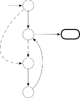
x < 1;
x := 0
L0 x > 1
x ≤ 1
x ≤ 1
L1
L4
Goal
x < 1
L2 x ≤ 1
L3
’no’ there is a strategy for the controller to win the game and can provide the strategy as an output if asked (option -t0).
Fig. 1. An example of Timed Game Automaton.
The graphical user-interface has been augmented to deal with games models. Among other things, the simulator allows the user to play against the strategies synthesized by Tiga in order to give the understanding of what the strategy is. This user-manual is covering the specificities of Tiga compared to the ba-
sic Uppaal tool. It is, then, strongly advised to start with the Uppaal tuto- rial [BDL04] to know about the basics of Uppaal before reading this document. We first define our game model (section 2) and how to specify games (sec- tion 3), then we explain what are strategies, how to query for a controller and
how to play with it and how to interpret results (section 4).
Timed Game Model
Our formalism is based on networks of Timed Game Automata (TGA) as de- scribed in [CDF+05,MPS95]. Given a network of timed game automata we define two types of games, namely reachability and safety games. This section briefly re- calls the definition of networks of timed game automata, reachability and safety games and the notion of strategy over a game. We suppose here that the reader is already familiar with timed automata as defined in [BDL04].
Timed Game Automata
Let C be a finite set of real-valued variables called clocks. We note B(C) the set of rectangular constraints ϕ generated by the grammar: ϕ ::= x ∼ k | ϕ ∧ ϕ where k ∈ Z, x ∈ C and ∼∈ {<, ≤, =, >, ≥}.
A Timed Game Automaton (TGA) is a timed automaton as defined in [BDL04] such that A = (L, l0, C, Act, E, I) with its set of actions Act = Actc ∪ Actu par- titioned into controllable (Actc) and uncontrollable (Actu) actions. L is the set
of locations, l0 ∈ L the initial location, E ∈ L × Act × B(C) × 2C × L the tran- sitions of the automaton and I : L → B(C) the location invariants. Fig. 1. gives an example of a timed game automaton.


The semantics of a timed automaton A = (L, l0, C, Act, E, I) is defined as a labelled transition system (S, s0, →) where S ⊆ L × RC is the set of states, s0 = (l0, 0) is the initial state (where 0 is a clock valuation in which every clock value is 0) and →⊆ S × {R≥0 ∪ Act} × S is the transition relation such that:
d
– (l, u) −→ (l, u + d) if ∀d′
: 0 ≤ d′
≤ d ⇒ u + d′
|= I(l)
a ′ ′ ′ ′
– (l, u) −→ (l , u ) if ∃e = (l, a, g, r, l ) ∈ E s.t. u |= g and u
u′ |= I(l′).
= [r → 0]u and


0
i
Timed game automata can be composed into networks over a common set of actions and clocks consisting of n timed game automata Ai = (Li, li , C, Act, Ei, Ii) where the set of actions over the network is given by Act = Act ×Act and is such that Act = Actc ∪ Actu where Actc = Actc × {Actc ∪ {τ }} and Actu = Act \ Actc. Note that this way of defining controllable and uncontrollable actions on the network gives precedence to the environment over the controller.

We also note a location of the system as a vector l = (l1, . . . , ln). We extend the invariant functions such that I(l) = ∧i≤nIi(li). And we write l[l′/li] to denote

i
the vector where the ith element li of l is replaced by l′.


0
Semantics of a network of n timed game automata Ai = (Li, li , C, Act, Ei, Ii) is defined as a transition system (S, s0, →) where S ⊆ (L1 × · · · × Ln) × RC is the set of states, s0 = (l0, 0) where l0 = (l1, . . . , ln), is the initial state and
0 0

→⊆ S × {R≥0 ∪ Act} × S is the transition relation such that:


d
– (l, u) −→ (l, u + d) if ∀d′
: 0 ≤ d′
≤ d ⇒ u + d′
|= I(l);


(a,τ ) ′ ′ a,g,r ′ ′ ′
– (l, u) −−−→ (l , u ) if l −−−→ l s.t. u |= g and u = [r → 0]u and u
|= I(l);


(ai,aj ) ′ ′ ′ ′
ai!,gi,ri ′
aj ?,gj,rj ′
– (l, u) −−−−→ (l [li/li, lj/lj ], u ) if li −−−−−→ li and lj −−−−−−→ lj s.t. u |= gi ∧ gj
and u′ = [ri ∪ rj → 0]u and u′ |= I(l′).
The Modelling Language
Defining a timed game automata is achieved through a superset of the Uppaal modelling language. The only addition to the original language are the possibility to define “uncontrollable” transitions. Either through the graphical user interface (see Fig. 2, on the left) using the edge interface, or through the ta language using the “-u->” keyword (see Fig. 2, on the right). Note that transitions are assumed to be “controllable” by default and that priorities on transitions are simply ignored when synthesizing strategies.
Specifying Games
A game is given by a network of timed game automata (A = (Ai)i>0) specifying the rules of the game and a formula (ϕ) specifying winning conditions defining the set of states that should be reached/avoided in order to win/lose the game.
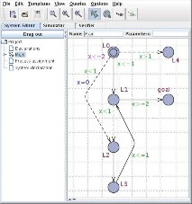
process Main() { clock x;
state L0 {x<=2}, L1, L2, L3, L4, goal; init L0;
trans
L0 -> L1 {guard x<=1;},
L0 -u-> L2 {guard x<1;assign x=0;}, L0 -u-> L4 {guard x>1;},
L1 -> goal {guard x>=2;}, L1 -u-> L2 {guard x<1;}, L2 -> L3 { },
L3 -> L1 {guard x<=1;};
}
system Main;
Fig. 2. Tiga GUI and XTGA syntax examples
Winning Games
Winning a game can only be achieved if the last transition leading to the goal state is controllable. For example, the automaton on Fig. 3.(a) is winning, on the contrary the automaton on the Fig. 3.(b) is losing. Intuitively this is because the opponent can decide to stay in the initial state forever without taking the transition leading to the goal state and let the controller with no other choice but its own.
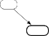
Init
Win!
Goal
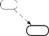
Init
Lose!
Goal
(b)
Fig. 3. Basic Examples of Winning (a) and Losing (b) Timed Game Automata.
The use of invariants might force the opponent to act, this can be simulated through an implicit controllable edge added when the upper limit of the invariant is reached. We will call this implicit extra transition a forced transition.
For example, the automaton on Fig. 4.(a) shows the original model, the automaton on Fig. 4.(b) makes the forced transition explicit making it clear why the model is winning7. Finally, the automaton on Fig. 4.(c) cannot be added a forced transition because there is already a possible controllable behavior when the automaton hit the invariant therefore this model is declared as losing.
7 Note that forced transitions are always controllable.
[x≤ 5]
(a)
[x≤ 5] Init
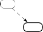
Init
Win!
Goal
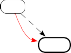
⇔ x == 5
(b)
Win!
Goal
[x≤ 5]
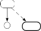
Init
Lose!
Goal
(c)
Fig. 4. Basic examples of forced transition: winning model (a), equivalent model with the implicit transition made explicit (b) and a losing model (c).
Finally, when dealing with synchronization and invariants some apparently strange behaviors might occurs. Indeed forced transitions might appear in com- ponents and be synchronized with others. The rule being to locally add forced transitions to each component and then to compose them all together. On Fig. 5.(a) we can see the original model of two synchronized automata, on Fig. 5.(b) the forced transition made explicit and finally on Fig. 5.(c) the full composition of the model (with the explicit forced transition).
[x≤ 5]
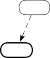
Inita
a == 0 I
Initb
⇔
a = 1
a == 0
∧
x == 5
[x≤ 5]
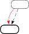
Inita
a == 0 I
Initb
a = 1
a == 0
⇔
∧
x == 5
[x≤ 5]
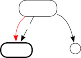
Inita,b
a == 0
a = 1
Goal
Win!
(a)
Goal
Win!
(b)
Goal
Win!
(c)
Fig. 5. Example of synchronisation with forced transitions: original model (a), forced transition made explicit (b), complete product with forced transition made explicit.
Winning/Losing Conditions
Specifying the game still requires to define what are the winning conditions. This is done through a slightly modified version of the Uppaal query language. Given a timed game automaton A, a set of goal states (win) and/or a set of bad states (lose), both defined by classical Uppaal state formulae, four types of winning conditions can be issued. For all of them, the game is to find a controllable strategy f such that A supervised by f ensures that the controller:
control: A<> win
Pure Reachability: “must reach win”
control: A[ not(lose) U win ]
Strict Reachability with Avoidance (Until): “must reach win and must avoid lose”
control: A[ not(lose) W win ]
Weak Reachability with Avoidance (WeakUntil): “should reach win and must avoid lose”
control: A[] not(lose)
Pure Safety: “must avoid lose”
Note : Formulae not prefixed by “control:” are solved as in usual Uppaal. Also, the operators A[p U q] and A[p W q] are Tiga specific and are not supported by Uppaal.
Examples:
control: A<> Main.goal
control: A[] not Main.L4
control: A[ not Main.L4 W Main.goal ]
control: A[ Main.x<2 U Main.goal ]
control: A[ not(Main.goal and Main.x>2) U (Main.goal) ]
Partially Cooperative Games
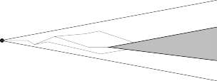
E<>
Init
control:ϕ
Partially cooperative games are defined by the fact that there are no winning strategy but reaching a maximal partition with winning strategy can be done with some help from your opponent. Once inside the maximal partition, you can enforce some condition whatever decide the oponnent. On Fig. 6, the maximal partition is the gray part and in order to reach it the controller has to rely on the environment to do some moves in his favor.
Fig. 6. Representation of E<>control:ϕ.
The syntax of this formula is given by:
– Partial Cooperation:
E<> control: ϕ
“must satisfy ϕ with the least help from the environment”
Strategy Synthesis
≥0
A (controllable) strategy is a function f : L × RC → Actc ∪ {λ} that constantly
gives information as to what the controller should do during the course of the game. In a given situation, the strategy could suggest the controller to either “do a particular controllable action” or “do nothing at this point in time (λ)”. A strategy is said to be a winning strategy if the controller supervised by the strategy always win the game whatever actions are chosen by the environment.
Existence of a Strategy
By default, Tiga first check whether there is or not a winning strategy for the timed game given a winning condition. On the example given Fig. 7, a winning strategy can be extracted for all the specified winning conditions except for the fifth one. Note that it is always better to start asking for existence because the process of strategy extraction is quite demanding and it would be useless to run such computation when the strategy can not be found.
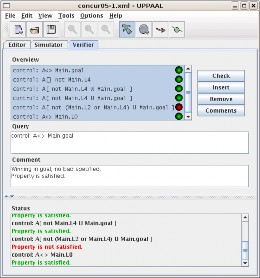
#shell> verifytga concur05-1.{xml,q} Options for the verification:
Generating no trace
Search order is breadth first
Using conservative space optimisation Seed is 1156870160
State space representation
uses minimal constraint systems
Verifying property 1 at line 5
-- Property is satisfied.
Verifying property 2 at line 11
-- Property is satisfied.
Verifying property 3 at line 17
-- Property is satisfied.
Verifying property 4 at line 23
-- Property is satisfied.
Verifying property 5 at line 29
-- Property is NOT satisfied.
Verifying property 6 at line 35
-- Property is satisfied.
Fig. 7. TGA synthesis example and the Tiga GUI
Strategy Extraction (Option -t0)
The command line tool verifytga in the Tiga package can output a strategy for each given winning condition when used with the “-t0” option. If no such
strategy exists, the dual strategy can then be computed by Tiga 8. The extrac- tion of a strategy can be triggered through a set of options specific to the Tiga engine:
-t <0|1|2>
Generate diagnostic information on stderr.
0: Some trace and output some strategy
-c <0|1>
Print compact strategy
0: Print one strategy for each discrete state 1: Dump BCDD strategy for each transition
An example of such output is given for the concur05-1.xml example on Fig. 8 with the options “-t0 -c0”.
State: ( Main.L0 )
While you are in (Main.x<1), wait. When you are in (Main.x==1),
take transition Main.L0->Main.L1 { x <= 1, tau, 1 }
State: ( Main.L1 )
While you are in (1<=Main.x && Main.x<2) || (Main.x<1), wait. When you are in (2<=Main.x),
take transition Main.L1->Main.goal { x >= 2, tau, 1 }
State: ( Main.L2 )
When you are in (Main.x<=1),
take transition Main.L2->Main.L3 { 1, tau, 1 }
State: ( Main.L3 )
When you are in (Main.x==1),
take transition Main.L3->Main.L1 { x <= 1, tau, 1 } While you are in (Main.x<1), wait.
Fig. 8. Strategy Synthesized for concur05-1.xml for “control: A<> Main.goal”.
Time Optimal Strategies
One may want not ’any strategy’ but the most time efficient Tiga can find.
– Time Optimality:
control t*(u,g): A[ not(lose) U win ]
“must reach win within less than u-g time units and must avoid lose”

8 We plan to add an option “-d” (dual) to compute automatically the dual strategy.

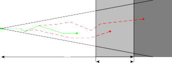
Init
Win
u
g
Win
Win
Fig. 9 shows an example of use of control t*(u,g), where only the winning paths that can reach the winning location within u−g are accepted thus allowing to forge a winning strategy based on this new winning conditions. Please note that the strategy that you play in the simulator has all its states constrained by u − g.
Fig. 9. Using the control t*(u,g):A[p U q] expression.
Provided that Tiga stop on some winning-strategy for our property, we can give an always terminating approximation algorithm to refine the first winning strategy. Indeed, start with u being the minimum time needed to reach the winning state on the strategy outputted by Tiga and with g = 0. Then, increase g until you reach a g′ such that g′ gives a winning strategy and g′ + 1 does not or do not terminate. This will provide you with the best strategy Tiga can give you (if not the optimal one).

Moreover, the u and g expression can be made more complex than constants. Indeed, it accepts the full C-like Uppaal syntax with the limitations that u is evaluated once at the beginning so it should not depend on the current state or contain clock constraints, and g is evaluated on the current state but must be side-effect free, which is no clock constraints here as well. An adequate usage of the function time2goal() (quantifying the time left before reaching any goal state) can help a lot when searching for an optimal strategy. The formula would be: control t*(u,time2goal()). Where u being the result of a non constrained search for strategy performed before. The time2goal() part will help here to prune a lot of non-optimal behavior and will help to reach time optimality.
Concrete Game Simulator
A new feature since Uppaal Tiga 0.11 is the concrete simulator. Up to 0.10, the simulator was a symbolic one, you can now simulate your system based on concrete trace that you choose or that you can randomely fire throught the ”Random” button.
Concrete simulator help you to select a transition to fire and then at what time it will be fired. The ”transition selection” area is a clickable area where vertical axis displays the active transtion at this location and horizontal axis displays the time at which the transition will be fired. By clicking in a valid zone
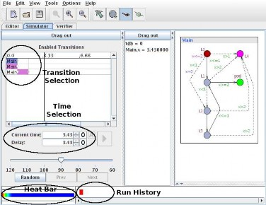
Fig. 10. Tiga concrete simulator with highlights on Transition selection, Time selec- tion, Run History and Heat bar.
within this area make you select a precise transition and time for this transition. The time selected is displayed in the ”Time Selection” area.
Two new graphical elements are also appearing in the new concrete simulator. One is the ”Run History” area which allow a quick navigation in the history of the run that you explore. The gray part of an history item visualize the time elapsed within this state. Finally, the other element is the ”Heat Bar ” allowing to visualize the activity (rate of actions taken over the time). More blue it is, colder you are by waiting a lot in states. More red it is, hotter you are by performing a lot of actions in short time.
The concrete simulator is extremely useful at debug time to understand why a winning condition cannot be met. Playing against the dual strategy allow to test intuitive strategies or to discover tactics used by the environment to defeat the controller.
Conclusion & Further Works
Tiga is already fully functional and provide a full support of all the Uppaal features plus an extended query language to specify winning conditions. Tiga is able to detect strategy existence and to synthesize it at will. An interactive simu- lator also allow the user to try out the strategy of the controller or the strategy of
the opponent. Moreover, several industrial case studies [DJLR07,CDL07,LC04] have been conducted with success.
In [DJLR07], the synthesis capability of the tool has been combined with Simulink and Real-Time Workshop to provide a complete tool chain for synthesis, simulation, and automatic generation of production code. This work has been performed in collaboration with the company Skov A/S specializing in climate control systems used for modern pig and poultry stables.
Tiga has also been use to check for simulation between timed automata and timed game automata [CDL07]. Given two timed automata, the tool can check if one simulates the other and similarly for timed game automata with applications for controller synthesis with partial observability. This technique has been applied to the compositional verification of the ZeroConf protocol [GVZ06]. Our tool is being used in the AMAES project9, a French national project on ’Advanced Methods for Autonomous Embedded Systems’. Tiga has been applied for controlling the autonomous robot Dala [LC04] in charge of taking pictures and transmitting them back to Earth during limited transmission windows. It is
desirable in such control problems to optimize the moves to save power.
In the near future we plan to improve efficiency of the state-space exploration again and to look at partial observability and focus on more and more real-life problems.
References
[BDL04] G. Behrmann, A. David, and K. G. Larsen. A Tutorial on Uppaal. In Proc. of 4th Int. School on Formal Methods for the Design of Computer, Communication, & Software Systems (SFM-RT04), number 3185 in LNCS, pages 200–236. Springer, 2004.
[BLR05] G. Behrmann, K. G. Larsen, and J. I. Rasmussen. Priced Timed Automata: Decidability Results, Algorithms and Applications. In Proc. of 3rd Inter- national Symposium Formal Methods for Components and Objects (FMCO 2004), volume 3657 of LNCS, pages 162–182, Leiden, The Netherlands, November 2005. Springer.
[CDF+05] F. Cassez, A. David, E. Fleury, K. G. Larsen, and D. Lime. Efficient On- the-fly Algorithms for the Analysis of Timed Games. In Proc. of 16th Int. Conf. on Concurrency Theory (CONCUR’05), volume 3653 of LNCS, pages 66–80. Springer, 2005.
[CDL07] T. Chatain, A. David, and K. G. Larsen. Playing Games with Games. In
Submitted to CAV’07, 2007.
[DJLR07] A. David, J. J. Jessen, K. G. Larsen, and J. I. Rasmussen. Guided Con- troller Synthesis for Climate Controller Using uppaal-tiga. In Submitted to CAV’07, 2007.
[GVZ06] B. Gebremichael, F. W. Vaandrager, and M. Zhang. Analysis of the zeroconf protocol using uppaal. In Proceedings 6th Annual ACM & IEEE Conference on Embedded Software (EMSOFT 2006), pages 242–251, 2006.

9 http://www-verimag.imag.fr/∼krichen/AMAES/
[LC04] S. Lemai-Chenevier. IxTeT-eXeC: Planification, r´eparation de plan et contrˆole d’ex´ecution avec gestion du temps et des ressources. PhD thesis, Institut National Polytechnique de Toulouse, 2004.
[LMN05] K. G. Larsen, M. Mikucionis, and B. Nielsen. Online Testing of Real- Time Systems Using UPPAAL: Status and Future Work. In In Proc. of Perspectives of Model-Based Testing, number 04371 in Dagstuhl Semi- nar Proceedings, Dagstuhl, Germany, 2005. Internationales Begegnungs und Forschungszentrum fu¨r Informatik (IBFI).
[LS98] X. Liu and S. Smolka. Simple Linear-Time Algorithm for Minimal Fixed Points. In Proc. 26th Conf. on Automata, Languages and Programming (ICALP’98), volume 1443 of LNCS, pages 53–66. Springer, 1998.
[MPS95] O. Maler, A. Pnueli, and J. Sifakis. On the Synthesis of Discrete Controllers for Timed Systems. In Proc. 12th Symp. on Theoretical Aspects of Computer Science (STACS’95), volume 900, pages 229–242. Springer, 1995.
Updated November 28, 2006
Gerd Behrmann, Alexandre David, and Kim G. Larsen
Department of Computer Science, Aalborg University, Denmark
{behrmann,adavid,kgl}@cs.auc.dk.
Abstract. This is a tutorial paper on the tool Uppaal. Its goal is to be a short introduction on the flavour of timed automata implemented in the tool, to present its interface, and to explain how to use the tool. The contribution of the paper is to provide reference examples and modelling patterns.
Introduction
Uppaal is a toolbox for verification of real-time systems jointly developed by Uppsala University and Aalborg University. It has been applied successfully in case studies ranging from communication protocols to multimedia applications [35,55,24,23,34,43,54,44,30]. The tool is designed to verify systems that can be modelled as networks of timed automata extended with integer variables, struc- tured data types, user defined functions, and channel synchronisation.
This tutorial covers networks of timed automata and the flavour of timed automata used in Uppaal in section 2. The tool itself is described in section 3, and three extensive examples are covered in sections 4, 5, and 6. Finally, section 7 introduces common modelling patterns often used with Uppaal.
Timed Automata in Uppaal
The model-checker Uppaal is based on the theory of timed automata [4] (see [42] for automata theory) and its modelling language offers additional features such as bounded integer variables and urgency. The query language of Uppaal, used
to specify properties to be checked, is a subset of TCTL (timed computation tree logic) [39,3]. In this section we present the modelling and the query languages of Uppaal and we give an intuitive explanation of time in timed automata.
The Modelling Language
Networks of Timed Automata A timed automaton is a finite-state machine extended with clock variables. It uses a dense-time model where a clock variable evaluates to a real number. All the clocks progress synchronously. In Uppaal, a system is modelled as a network of several such timed automata in parallel. The model is further extended with bounded discrete variables that are part of the state. These variables are used as in programming languages: They are read, written, and are subject to common arithmetic operations. A state of the system is defined by the locations of all automata, the clock values, and the values of the discrete variables. Every automaton may fire an edge (sometimes misleadingly called a transition) separately or synchronise with another automaton1, which leads to a new state.
Figure 1(a) shows a timed automaton modelling a simple lamp. The lamp has three locations: off, low, and bright. If the user presses a button, i.e., synchronises with press?, then the lamp is turned on. If the user presses the button again, the lamp is turned off. However, if the user is fast and rapidly presses the button twice, the lamp is turned on and becomes bright. The user model is shown in Fig. 1(b). The user can press the button randomly at any time or even not press the button at all. The clock y of the lamp is used to detect if the user was fast (y < 5) or slow (y >= 5).
press?
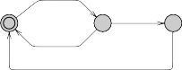
off
y:=0
low
bright
y>=5
press?
y<5
press?
press?
idle
‚
‚
press!
(a) Lamp. (b) User.
Fig. 1. The simple lamp example.
We give the basic definitions of the syntax and semantics for the basic timed automata. In the following we will skip the richer flavour of timed automata supported in Uppaal, i.e., with integer variables and the extensions of urgent and committed locations. For additional information, please refer to the help

1 or several automata in case of broadcast synchronisation, another extension of timed automata in Uppaal.
menu inside the tool. We use the following notations: C is a set of clocks and B(C) is the set of conjunctions over simple conditions of the form x ⊲⊳ c or x − y ⊲⊳ c, where x, y ∈ C, c ∈ N and ⊲⊳∈ {<, ≤, =, ≥, >}. A timed automaton is a finite directed graph annotated with conditions over and resets of non-negative real valued clocks.
Definition 1 (Timed Automaton (TA)). A timed automaton is a tuple (L, l0, C, A, E, I), where L is a set of locations, l0 ∈ L is the initial location, C is the set of clocks, A is a set of actions, co-actions and the internal τ-action, E ⊆ L × A × B(C) × 2C × L is a set of edges between locations with an action, a guard and a set of clocks to be reset, and I : L → B(C) assigns invariants to locations.
In the previous example on Fig. 1, y:=0 is the reset of the clock y, and the labels
press? and press! denote action–co-action (channel synchronisations here).
We now define the semantics of a timed automaton. A clock valuation is a function u : C → R≥0 from the set of clocks to the non-negative reals. Let RC be the set of all clock valuations. Let u0(x) = 0 for all x ∈ C. We will abuse the notation by considering guards and invariants as sets of clock valuations, writing u ∈ I(l) to mean that u satisfies I(l).
■
■
■
A B
A
state: <A,x=1>
B
■
■
■
x<3
action transition
delay(+1) transition
■
■
■
A
<B,x=1>
x<3
B
action
a'\ a a
transition A B
OK
delay(+2) transition
<A,x=2>
■
■
■
A
x<3
B
invalid action transition
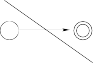
A
B
■
■
■
x<3
<A,x=3>
<A,x=3>
x<3
<A,x=3>
x<3
invalid state: invariant x<3 violated
Fig. 2. Semantics of TA: different transitions from a given initial state.
Definition 2 (Semantics of TA). Let (L, l0, C, A, E, I) be a timed automaton. The semantics is defined as a labelled transition system (S, s0, →), where S ⊆ L× RC is the set of states, s0 = (l0, u0) is the initial state, and →⊆ S ×(R≥0 ∪A)×S is the transition relation such that:
d ′ ′ ′
– (l, u) −→ (l, u + d) if ∀d : 0 ≤ d ≤ d =⇒ u + d
∈ I(l), and
a ′ ′ ′
– (l, u) −→ (l , u ) if there exists e = (l, a, g, r, l ) ∈ E s.t. u ∈ g,
u′ = [r → 0]u, and u′ ∈ I(l′),
where for d ∈ R≥0, u + d maps each clock x in C to the value u(x) + d, and [r → 0]u denotes the clock valuation which maps each clock in r to 0 and agrees with u over C \ r.
Figure 2 illustrates the semantics of TA. From a given initial state, we can choose to take an action or a delay transition (different values here). Depending of the chosen delay, further actions may be forbidden.
i
i
Timed automata are often composed into a network of timed automata over a common set of clocks and actions, consisting of n timed automata Ai = (Li, l0, C, A, Ei, Ii), 1 ≤ i ≤ n. A location vector is a vector ¯l = (l1, . . . , ln). We compose the invariant functions into a common function over location vec- tors I(¯l) = ∧iIi(li). We write l¯[l′/li] to denote the vector where the ith element
i
li of l¯ is replaced by l′. In the following we define the semantics of a network of
timed automata.
Definition 3 (Semantics of a network of Timed Automata). Let Ai = (Li, l0, C, A, Ei, Ii) be a network of n timed automata. Let ¯l0 = (l0, . . . , l0 ) be the
i 1 n
initial location vector. The semantics is defined as a transition system (S, s0, →),
where S = (L1 × · · · × Ln) × RC is the set of states, s0 = (¯l0, u0) is the initial state, and →⊆ S × S is the transition relation defined by:
¯ d ¯ ′ ′ ′ ¯
– (l, u) −→ (l, u + d) if ∀d : 0 ≤ d ≤ d =⇒ u + d ∈ I(l).
¯ a ¯ ′ ′
τgr ′
– (l, u) −→ (l[li/li], u ) if there exists li −−→ li s.t. u ∈ g,
i
u′ = [r → 0]u and u′ ∈ I(¯l[l′/li]).
¯ a ¯ ′ ′ ′
c?giri ′
– (l, u) −→ (l[lj/lj, li/li], u ) if there exist li −−−−→ li and
c!gj rj
l −−−−→
l′ s.t. u ∈ (g
∧ g ), u′ = [r ∪ r
→ 0]u and u′ ∈ I(¯l[l′ /l , l′/l ]).
j j i j i j j j i i
As an example of the semantics, the lamp in Fig. 1 may have the follow- ing states (we skip the user): (Lamp.off, y = 0) → (Lamp.off, y = 3) → (Lamp.low, y = 0) → (Lamp.low, y = 0.5) → (Lamp.bright, y = 0.5) → (Lamp.bright, y = 1000) . . .
Timed Automata in Uppaal The Uppaal modelling language extends timed automata with the following additional features (see Fig. 3:
Templates automata are defined with a set of parameters that can be of any type (e.g., int, chan). These parameters are substituted for a given argument in the process declaration.
Constants are declared as const name value. Constants by definition cannot be modified and must have an integer value.
Bounded integer variables are declared as int[min,max] name, where min and max are the lower and upper bound, respectively. Guards, invariants, and assignments may contain expressions ranging over bounded integer variables. The bounds are checked upon verification and violating a bound leads to an invalid state that is discarded (at run-time). If the bounds are omitted, the default range of -32768 to 32768 is used.
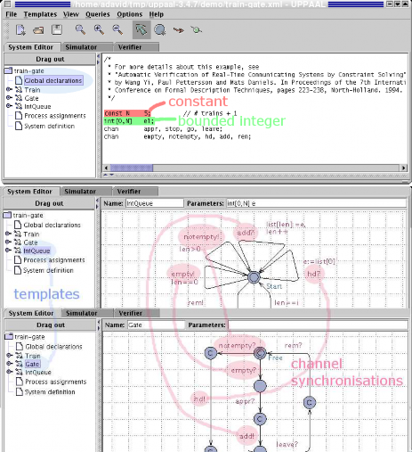
Fig. 3. Declarations of a constant and a variable, and illustration of some of the channel synchronisations between two templates of the train gate example of Section 4, and some committed locations.
Binary synchronisation channels are declared as chan c. An edge labelled with c! synchronises with another labelled c?. A synchronisation pair is chosen non-deterministically if several combinations are enabled.
Broadcast channels are declared as broadcast chan c. In a broadcast syn-
chronisation one sender c! can synchronise with an arbitrary number of receivers c?. Any receiver than can synchronise in the current state must do so. If there are no receivers, then the sender can still execute the c! action,
i.e. broadcast sending is never blocking.
Urgent synchronisation channels are declared by prefixing the channel decla- ration with the keyword urgent. Delays must not occur if a synchronisation transition on an urgent channel is enabled. Edges using urgent channels for synchronisation cannot have time constraints, i.e., no clock guards.
Urgent locations are semantically equivalent to adding an extra clock x, that
is reset on all incoming edges, and having an invariant x<=0 on the location. Hence, time is not allowed to pass when the system is in an urgent location. Committed locations are even more restrictive on the execution than urgent locations. A state is committed if any of the locations in the state is commit- ted. A committed state cannot delay and the next transition must involve
an outgoing edge of at least one of the committed locations.
Arrays are allowed for clocks, channels, constants and integer variables. They are defined by appending a size to the variable name, e.g. chan c[4]; clock a[2]; int[3,5] u[7];.
Initialisers are used to initialise integer variables and arrays of integer vari- ables. For instance, int i = 2; or int i[3] = {1, 2, 3};.
Record types are declared with the struct construct like in C.
Custom types are defined with the C-like typedef construct. You can define any custom-type from other basic types such as records.
User functions are defined either globally or locally to templates. Template
parameters are accessible from local functions. The syntax is similar to C except that there is no pointer. C++ syntax for references is supported for the arguments only.
Expressions in Uppaal Expressions in Uppaal range over clocks and integer variables. The BNF is given in Fig. 33 in the appendix. Expressions are used with the following labels:
Select A select label contains a comma separated list of name : type expressions where name is a variable name and type is a defined type (built-in or custom). These variables are accessible on the associated edge only and they will take a non-deterministic value in the range of their respective types.
Guard A guard is a particular expression satisfying the following conditions:
it is side-effect free; it evaluates to a boolean; only clocks, integer variables, and constants are referenced (or arrays of these types); clocks and clock differences are only compared to integer expressions; guards over clocks are essentially conjunctions (disjunctions are allowed over integer conditions). A guard may call a side-effect free function that returns a bool, although clock constraints are not supported in such functions.
Synchronisation A synchronisation label is either on the form Expression! or Expression? or is an empty label. The expression must be side-effect free, evaluate to a channel, and only refer to integers, constants and channels.
Update An update label is a comma separated list of expressions with a side- effect; expressions must only refer to clocks, integer variables, and constants and only assign integer values to clocks. They may also call functions.
Invariant An invariant is an expression that satisfies the following conditions: it is side-effect free; only clock, integer variables, and constants are referenced; it is a conjunction of conditions of the form x<e or x<=e where x is a clock reference and e evaluates to an integer. An invariant may call a side-effect free function that returns a bool, although clock constraints are not supported in such functions.
The Query Language
The main purpose of a model-checker is verify the model w.r.t. a requirement specification. Like the model, the requirement specification must be expressed in a formally well-defined and machine readable language. Several such logics exist in the scientific literature, and Uppaal uses a simplified version of TCTL. Like in TCTL, the query language consists of path formulae and state formulae.2 State formulae describe individual states, whereas path formulae quantify over paths or traces of the model. Path formulae can be classified into reachability, safety and liveness. Figure 4 illustrates the different path formulae supported by Uppaal. Each type is described below.
State Formulae A state formula is an expression (see Fig. 33) that can be evaluated for a state without looking at the behaviour of the model. For instance, this could be a simple expression, like i == 7, that is true in a state whenever i equals 7. The syntax of state formulae is a superset of that of guards, i.e., a state formula is a side-effect free expression, but in contrast to guards, the use of disjunctions is not restricted. It is also possible to test whether a particular process is in a given location using an expression on the form P.l, where P is a process and l is a location.
In Uppaal, deadlock is expressed using a special state formula (although this is not strictly a state formula). The formula simply consists of the keyword deadlock and is satisfied for all deadlock states. A state is a deadlock state if there are no outgoing action transitions neither from the state itself or any of its delay successors. Due to current limitations in Uppaal, the deadlock state formula can only be used with reachability and invariantly path formulae (see below).
Reachability Properties Reachability properties are the simplest form of properties. They ask whether a given state formula, ϕ, possibly can be satisfied

2 In contrast to TCTL, Uppaal does not allow nesting of path formulae.
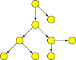
A[]
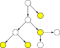
A<>
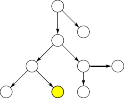
E<>
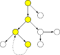
E[]

Fig. 4. Path formulae supported in Uppaal. The filled states are those for which a given state formulae φ holds. Bold edges are used to show the paths the formulae evaluate on.
by any reachable state. Another way of stating this is: Does there exist a path starting at the initial state, such that ϕ is eventually satisfied along that path. Reachability properties are often used while designing a model to perform sanity checks. For instance, when creating a model of a communication protocol involving a sender and a receiver, it makes sense to ask whether it is possible for the sender to send a message at all or whether a message can possibly be received. These properties do not by themselves guarantee the correctness of the protocol (i.e. that any message is eventually delivered), but they validate the
basic behaviour of the model.
We express that some state satisfying ϕ should be reachable using the path formula E◊ ϕ. In Uppaal, we write this property using the syntax E<> ϕ.
Safety Properties Safety properties are on the form: “something bad will never happen”. For instance, in a model of a nuclear power plant, a safety property might be, that the operating temperature is always (invariantly) under a certain threshold, or that a meltdown never occurs. A variation of this property is that “something will possibly never happen”. For instance when playing a game, a safe state is one in which we can still win the game, hence we will possibly not loose.
In Uppaal these properties are formulated positively, e.g., something good is invariantly true. Let ϕ be a state formulae. We express that ϕ should be true in all reachable states with the path formulae A□ ϕ,3 whereas E□ ϕ says that

3 Notice that A□ ϕ = ¬E◊ ¬ϕ
there should exist a maximal path such that ϕ is always true.4 In Uppaal we write A[] ϕ and E[] ϕ, respectively.
Liveness Properties Liveness properties are of the form: something will even- tually happen, e.g. when pressing the on button of the remote control of the television, then eventually the television should turn on. Or in a model of a communication protocol, any message that has been sent should eventually be received.
In its simple form, liveness is expressed with the path formula A◊ ϕ, mean- ing ϕ is eventually satisfied.5 The more useful form is the leads to or response property, written ϕ ψ which is read as whenever ϕ is satisfied, then eventu- ally ψ will be satisfied, e.g. whenever a message is sent, then eventually it will be received.6 In Uppaal these properties are written as A<> ϕ and ϕ --> ψ, respectively.
Understanding Time
Invariants and Guards Uppaal uses a continuous time model. We illustrate the concept of time with a simple example that makes use of an observer. Nor- mally an observer is an add-on automaton in charge of detecting events without changing the observed system. In our case the clock reset (x:=0) is delegated to the observer for illustration purposes.
Figure 5 shows the first model with its observer. We have two automata in parallel. The first automaton has a self-loop guarded by x>=2, x being a clock, that synchronises on the channel reset with the second automaton. The second automaton, the observer, detects when the self loop edge is taken with the location taken and then has an edge going back to idle that resets the clock x. We moved the reset of x from the self loop to the observer only to test what happens on the transition before the reset. Notice that the location taken is committed (marked c) to avoid delay in that location.
The following properties can be verified in Uppaal (see section 3 for an overview of the interface). Assuming we name the observer automaton Obs, we have:
A[] Obs.taken imply x>=2 : all resets off x will happen when x is above
2. This query means that for all reachable states, being in the location
Obs.taken implies that x>=2.
E<> Obs.idle and x>3 : this property requires, that it is possible to reach- able state where Obs is in the location idle and x is bigger than 3. Essentially we check that we may delay at least 3 time units between resets. The result would have been the same for larger values like 30000, since there are no invariants in this model.

4 A maximal path is a path that is either infinite or where the last state has no outgoing transitions.
5 Notice that A◊ ϕ = ¬E□ ¬ϕ.
6 Experts in TCTL will recognise that ϕ ψ is equivalent to A□ (ϕ =⇒ A◊ ψ)
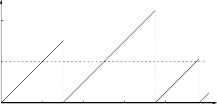
clock x
4
loop
x>=2
reset!
reset?
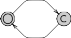
‚
‚
idle
taken
2
x:=0
2 4 6
8 "time"
(a) Test. (b) Observer. (c) Behaviour: one possible run.
Fig. 5. First example with an observer.
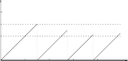
clock x
4
loop
x>=2
reset!
x<=3
2
2 4 6 8 "time"
(a) Test. (b) Updated behaviour with an invariant.
Fig. 6. Updated example with an invariant. The observer is the same as in Fig. 5 and is not shown here.
We update the first model and add an invariant to the location loop, as shown in Fig. 6. The invariant is a progress condition: the system is not allowed to stay in the state more than 3 time units, so that the transition has to be taken and the clock reset in our example. Now the clock x has 3 as an upper bound. The following properties hold:
A[] Obs.taken imply (x>=2 and x<=3) shows that the transition is taken when x is between 2 and 3, i.e., after a delay between 2 and 3.
E<> Obs.idle and x>2 : it is possible to take the transition when x is be- tween 2 and 3. The upper bound 3 is checked with the next property.
A[] Obs.idle imply x<=3 : to show that the upper bound is respected.
The former property E<> Obs.idle and x>3 no longer holds.
Now, if we remove the invariant and change the guard to x>=2 and x<=3, you may think that it is the same as before, but it is not! The system has no progress condition, just a new condition on the guard. Figure 7 shows what happens: the system may take the same transitions as before, but deadlock may also occur. The system may be stuck if it does not take the transition after 3 time units. In fact, the system fails the property A[] not deadlock. The property A[] Obs.idle imply x<=3 does not hold any longer and the deadlock can also be illustrated by the property A[] x>3 imply not Obs.taken, i.e., after 3 time units, the transition is not taken any more.

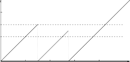
clock x
4
loop x>=2 && x<=3 2
reset!
2 4 6 8 "time"
(a) Test. (b) Updated behaviour with a guard and no invariant.
Fig. 7. Updated example with a guard and no invariant.
x:=0
S0 S1 S2
P0
x:=0
S0 S1 S2
P1
S0 S1 S2
P2
Fig. 8. Automata in parallel with normal, urgent and commit states. The clocks are local, i.e., P0.x and P1.x are two different clocks.
Committed and Urgent Locations There are three different types of loca- tions in Uppaal: normal locations with or without invariants (e.g., x<=3 in the previous example), urgent locations, and committed locations. Figure 8 shows 3 automata to illustrate the difference. The location marked u is urgent and the one marked c is committed. The clocks are local to the automata, i.e., x in P0 is different from x in P1.
To understand the difference between normal locations and urgent locations, we can observe that the following properties hold:
E<> P0.S1 and P0.x>0 : it is possible to wait in S1 of P0.
A[] P1.S1 imply P1.x==0 : it is not possible to wait in S1 of P1.
An urgent location is equivalent to a location with incoming edges reseting a designated clock y and labelled with the invariant y<=0. Time may not progress in an urgent state, but interleavings with normal states are allowed.
A committed location is more restrictive: in all the states where P2.S1 is active (in our example), the only possible transition is the one that fires the edge outgoing from P2.S1. A state having a committed location active is said to
be committed: delay is not allowed and the committed location must be left in the successor state (or one of the committed locations if there are several ones).
Overview of the Uppaal Toolkit
Uppaal uses a client-server architecture, splitting the tool into a graphical user interface and a model checking engine. The user interface, or client, is imple- mented in Java and the engine, or server, is compiled for different platforms (Linux, Windows, Solaris).7 As the names suggest, these two components may be run on different machines as they communicate with each other via TCP/IP. There is also a stand-alone version of the engine that can be used on the com- mand line.
The Java Client
The idea behind the tool is to model a system with timed automata using a graphical editor, simulate it to validate that it behaves as intended, and finally to verify that it is correct with respect to a set of properties. The graphical interface (GUI) of the Java client reflects this idea and is divided into three main parts: the editor, the simulator, and the verifier, accessible via three “tabs”.
The Editor A system is defined as a network of timed automata, called pro- cesses in the tool, put in parallel. A process is instantiated from a parameterised template. The editor is divided into two parts: a tree pane to access the different templates and declarations and a drawing canvas/text editor. Figure 9 shows the editor with the train gate example of section 4. Locations are labelled with names and invariants and edges are labelled with guard conditions (e.g., e==id), synchronisations (e.g., go?), and assignments (e.g., x:=0).
The tree on the left hand side gives access to different parts of the system description:
Global declaration Contains global integer variables, clocks, synchronisation channels, and constants.
Templates Train, Gate, and IntQueue are different parameterised timed au- tomata. A template may have local declarations of variables, channels, and constants.
Process assignments Templates are instantiated into processes. The process assignment section contains declarations for these instances.
System definition The list of processes in the system.
The syntax used in the labels and the declarations is described in the help system of the tool. The local and global declarations are shown in Fig. 10. The graphical syntax is directly inspired from the description of timed automata in section 2.
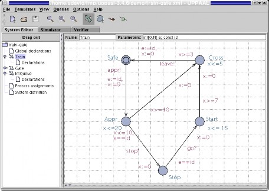
Fig. 9. The train automaton of the train gate example. The select button is activated in the tool-bar. In this mode the user can move locations and edges or edit labels. The other modes are for adding locations, edges, and vertices on edges (called nails). A new location has no name by default. Two text fields allow the user to define the template name and its parameters. Useful trick: The middle mouse button is a shortcut for adding new elements, i.e. pressing it on the canvas, a location, or edge adds a new location, edge, or nail, respectively.
The Simulator The simulator can be used in three ways: the user can run the system manually and choose which transitions to take, the random mode can be toggled to let the system run on its own, or the user can go through a trace (saved or imported from the verifier) to see how certain states are reachable. Figure 11 shows the simulator. It is divided into four parts:
The control part is used to choose and fire enabled transitions, go through a trace, and toggle the random simulation.
The variable view shows the values of the integer variables and the clock con- straints. Uppaal does not show concrete states with actual values for the clocks. Since there are infinitely many of such states, Uppaal instead shows sets of concrete states known as symbolic states. All concrete states in a sym- bolic state share the same location vector and the same values for discrete variables. The possible values of the clocks is described by a set of con-

7 A version for Mac OS X is in preparation.
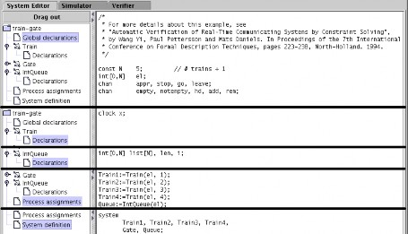
Fig. 10. The different local and global declarations of the train gate example. We superpose several screen-shots of the tool to show the declarations in a compact manner.
straints. The clock validation in the symbolic state are exactly those that satisfy all constraints.
The system view shows all instantiated automata and active locations of the current state.
The message sequence chart shows the synchronisations between the differ- ent processes as well as the active locations at every step.
The Verifier The verifier “tab” is shown in Fig. 12. Properties are selectable in the Overview list. The user may model-check one or several properties,8 insert or remove properties, and toggle the view to see the properties or the comments in the list. When a property is selected, it is possible to edit its definition (e.g., E<> Train1.Cross and Train2.Stop . . . ) or comments to document what the property means informally. The Status panel at the bottom shows the commu- nication with the server.
When trace generation is enabled and the model-checker finds a trace, the user is asked if she wants to import it into the simulator. Satisfied properties are marked green and violated ones red. In case either an over approximation or an under approximation has been selected in the options menu, then it may happen that the verification is inconclusive with the approximation used. In that case the properties are marked yellow.

8 several properties only if no trace is to be generated.
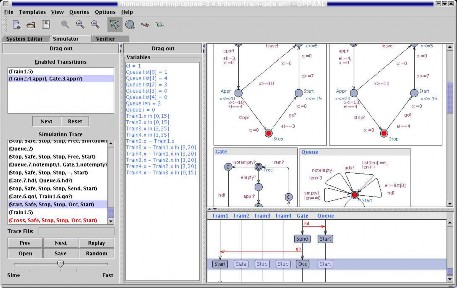
Fig. 11. View of the simulator tab for the train gate example. The interpretation of the constraint system in the variable panel depends on whether a transition in the transition panel is selected or not. If no transition is selected, then the constrain system shows all possible clock valuations that can be reached along the path. If a transition is selected, then only those clock valuations from which the transition can be taken are shown. Keyboard bindings for navigating the simulator without the mouse can be found in the integrated help system.
The Stand-alone Verifier
When running large verification tasks, it is often cumbersome to execute these from inside the GUI. For such situations, the stand-alone command line verifier called verifyta is more appropriate. It also makes it easy to run the verification on a remote UNIX machine with memory to spare. It accepts command line arguments for all options available in the GUI, see Table 3 in the appendix.
Example 1: The Train Gate
Description
The train gate example is distributed with Uppaal. It is a railway control system which controls access to a bridge for several trains. The bridge is a critical shared resource that may be accessed only by one train at a time. The system is defined as a number of trains (assume 4 for this example) and a controller. A train can not be stopped instantly and restarting also takes time. Therefor, there are timing constraints on the trains before entering the bridge. When approaching,
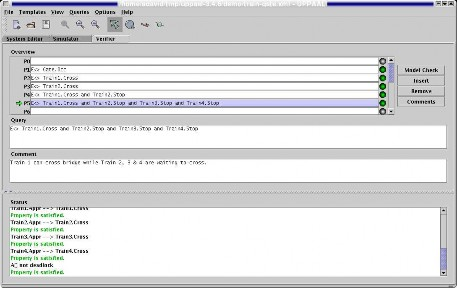
Fig. 12. View of the verification tab for the train gate example.
a train sends a appr! signal. Thereafter, it has 10 time units to receive a stop signal. This allows it to stop safely before the bridge. After these 10 time units, it takes further 10 time units to reach the bridge if the train is not stopped. If a train is stopped, it resumes its course when the controller sends a go! signal to it after a previous train has left the bridge and sent a leave! signal. Figures 13 and 14 show two situations.
Modelling in Uppaal
The model of the train gate has three templates:
Train is the model of a train, shown in Fig. 9.
Gate is the model of the gate controller, shown in Fig. 15.
IntQueue is the model of the queue of the controller, shown in Fig. 16. It is simpler to separate the queue from the controller, which makes it easier to get the model right.
The Template of the Train The template in Fig. 9 has five locations: Safe, Appr, Stop, Start, and Cross. The initial location is Safe, which corresponds to a train not approaching yet. The location has no invariant, which means that a train may stay in this location an unlimited amount of time. When a train is approaching, it synchronises with the controller. This is done by the channel synchronisation appr! on the transition to Appr. The controller has a corresponding appr?. The clock x is reset and the parameterised variable e is set
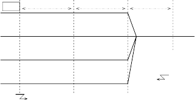
Approaching. Can be stopped. Cannot be stopped in Crossing time.
10 10 3..5
(stopping)
(stopped)
Controller
stop! to train2
train1
train4
train3
train2
train1:appr!
Fig. 13. Train gate example: train4 is about to cross the bridge, train3 is stopped, train2 was ordered to stop and is stopping. Train1 is approaching and sends an appr! signal to the controller that sends back a stop! signal. The different sections have timing constraints (10, 10, between 3 and 5).
to the identity of this train. This variable is used by the queue and the controller to know which train is allowed to continue or which trains must be stopped and later restarted.
The location Appr has the invariant x ≤ 20, which has the effect that the location must be left within 20 time units. The two outgoing transitions are guarded by the constraints x ≤ 10 and x ≥ 10, which corresponds to the two sections before the bridge: can be stopped and can not be stopped. At exactly 10, both transitions are enabled, which allows us to take into account any race conditions if there is one. If the train can be stopped (x ≤ 10) then the transition to the location Stop is taken, otherwise the train goes to location Cross. The transition to Stop is also guarded by the condition e == id and is synchronised with stop?. When the controller decides to stop a train, it decides which one (sets e) and synchronises with stop!.
The location Stop has no invariant: a train may be stopped for an unlimited amount of time. It waits for the synchronisation go?. The guard e == id ensures that the right train is restarted. The model is simplified here compared to the version described in [60], namely the slowdown phase is not modelled explicitly. We can assume that a train may receive a go? synchronisation even when it is not stopped completely, which will give a non-deterministic restarting time.
The location Start has the invariant x ≤ 15 and its outgoing transition has the constraint x ≥ 7. This means that a train is restarted and reaches the crossing section between 7 and 15 time units non-deterministically.
The location Cross is similar to Start in the sense that it is left between 3 and 5 time units after entering it.
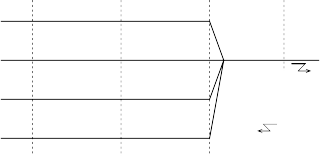
(stopped)
(restarting)
train4:leave!
Controller
go! to train3
train3
train4
train2
train1
(stopping)
Fig. 14. Now train4 has crossed the bridge and sends a leave! signal. The controller can now let train3 cross the bridge with a go! signal. Train2 is now waiting and train1 is stopping.
The Template of the Gate The gate controller in Fig. 15 synchronises with the queue and the trains. Some of its locations do not have names. Typically, they are committed locations (marked with a c).
The controller starts in the Free location (i.e., the bridge is free), where it tests the queue to see if it is empty or not. If the queue is empty then the controller waits for approaching trains (next location) with the appr? synchro- nisation. When a train is approaching, it is added to the queue with the add! synchronisation. If the queue is not empty, then the first train on the queue (read by hd!) is restarted with the go! synchronisation.
In the Occ location, the controller essentially waits for the running train to leave the bridge (leave?). If other trains are approaching (appr?), they are stopped (stop!) and added to the queue (add!). When a train leaves the bridge, the controller removes it from the queue with the rem? synchronisation.
The Template of the Queue The queue in Fig. 16 has essentially one location Start where it is waiting for commands from the controller. The Shiftdown location is used to compute a shift of the queue (necessary when the front element is removed). This template uses an array of integers and handles it as a FIFO queue.
Verification
We check simple reachability, safety, and liveness properties, and for absence of deadlock. The simple reachability properties check if a given location is reach- able:
E<> Gate.Occ: the gate can receive and store messages from approaching trains in the queue.
E<> Train1.Cross: train 1 can cross the bridge. We check similar properties for the other trains.
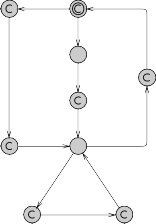
notempty?
empty?
Free
rem?
hd!
appr?
add1
Send
go!
add!
leave?
Occ
appr?
add!
add2
stop!
Fig. 15. Gate automaton of the train gate.
E<> Train1.Cross and Train2.Stop: train 1 can be crossing the bridge while train 2 is waiting to cross. We check for similar properties for the other trains.
E<> Train1.Cross && Train2.Stop && Train3.Stop && Train4.Stop is similar to the previous property, with all the other trains waiting to cross the bridge. We have similar properties for the other trains.
The following safety properties must hold for all reachable states:
A[] Train1.Cross+Train2.Cross+Train3.Cross+Train4.Cross<=1. There is not more than one train crossing the bridge at any time. This expression uses the fact that Train1.Cross evaluates to true or false, i.e., 1 or 0.
A[] Queue.list[N-1] == 0: there can never be N elements in the queue, i.e., the array will never overflow. Actually, the model defines N as the num- ber of trains + 1 to check for this property. It is possible to use a queue length matching the number of trains and check for this property instead: A[] (Gate.add1 or Gate.add2) imply Queue.len < N-1 where the loca- tions add1 and add2 are the only locations in the model from which add! is possible.
The liveness properties are of the form Train1.Appr --> Train1.Cross: whenever train 1 approaches the bridge, it will eventually cross, and similarly for the other trains. Finally, to check that the system is deadlock-free, we verify the property A[] not deadlock.
Suppose that we made a mistake in the queue, namely we wrote e:=list[1] in the template IntQueue instead of e:=list[0] when reading the head on the transition synchronised with hd?. We could have been confused when thinking in terms of indexes. It is interesting to note that the properties still hold, except
notempty! len>0
empty! len==0
add?
list[len]:=e, len++

Start
e:=list[0] hd?
rem! len>=1 len--,
i := 0
len==i
list[i] := 0, i := 0
Shiftdown
i < len list[i]:=list[i+1], i++
Fig. 16. Queue automaton of the train gate. The template is parameterised with
int[0,n] e.
the liveness ones. The verification gives a counter-example showing what may happen: a train may cross the bridge but the next trains will have to stop. When the queue is shifted the train that starts again is never the first one, thus the train at the head of the queue is stuck and can never cross the bridge.
Example 2: Fischer’s Protocol
Description
Fischer’s protocol is a well-known mutual exclusion protocol designed for n pro- cesses. It is a timed protocol where the concurrent processes check for both a delay and their turn to enter the critical section using a shared variable id.
Modelling in Uppaal
The automaton of the protocol is given in Fig. 17. Starting from the initial location (marked with a double circle), processes go to a request location, req, if id==0, which checks that it is the turn for no process to enter the critical section. Processes stay non-deterministically between 0 and k time units in req, and then go to the wait location and set id to their process ID (pid). There it must wait at least k time units, x>k, k being a constant (2 here), before entering the critical section CS if it is its turn, id==pid. The protocol is based on the fact that after (strict) k time units with id different from 0, all the processes that want to enter the critical section are waiting to enter the critical section as well, but only one has the right ID. Upon exiting the critical section, processes reset id to allow other processes to enter CS. When processes are waiting, they may retry when another process exits CS by returning to req.
id== 0 x:= 0
req
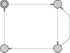
x<=k
id:= 0
x<=k
x:= 0,
id:= pid
x:= 0
id== 0
cs x>k, id==pid
wait
Fig. 17. Template of Fischer’s protocol. The parameter of the template is const pid. The template has the local declarations clock x; const k 2;.
Verification
The safety property of the protocol is to check for mutual exclusion of the loca- tion CS: A[] P1.cs + P2.cs + P3.cs + P4.cs <= 1. This property uses the trick that these tests evaluate to true or false, i.e., 0 or 1. We check that the system is deadlock-free with the property A[] not deadlock.
The liveness properties are of the form P1.req --> P1.wait and similarly for the other processes. They check that whenever a process tries to enter the critical section, it will always eventually enter the waiting location. Intuitively, the reader would also expect the property P1.req --> P1.cs that similarly states that the critical section is eventually reachable. However, this property is violated. The interpretation is that the process is allowed to stay in wait for ever, thus there is a way to avoid the critical section.
Now, if we try to fix the model and add the invariant x <= 2*k to the wait location, the property P1.req --> P1.cs still does not hold because it is possible to reach a deadlock state where P1.wait is active, thus there is a path that does not lead to the critical section. The deadlock is as follows: P1.wait with 0 ≤ x ≤ 2 and P4.wait with 2 ≤ x ≤ 4. Delay is forbidden in this state, due to the invariant on P4.wait and P4.wait can not be left because id == 1.
Example 3: The Gossiping Girls
Description
Let n girls have each a private secret they wish to share with each other. Every girl can call another girl and after a conversation, both girls know mutually all their secrets. The problem is to find out how many calls are necessary so that all the girls know all the secrets. A variant of the problem is to add time to conversations and ask how much time is necessary to exchange all the secrets, allowing concurrent calls.
The basic formulation of the problem is not timed and is typically a combi- natorial problem with a string of n bits that may take (at most) 2n values for
2
every girl. That means we have in total a string of n2 bits taking 2n values (in
product with other states of the system).
Modelling in Uppaal
We face choices regarding the representation of the secrets and where to store them. One way is to use one integer and manually set or reset its bits using arithmetic operations. Although the size of the system is limited by the size of the integers, a quick complexity evaluation shows that the state-space explodes too quicly anyway so this is not really a limitation. Another way is to use an array of booleans. The solution with the integer sounds like hacking and in fact it is so specialized that we will have problem to refine the model later. The model with booleans is certainly more readable, which is desirable for formal verification. The second choice is where to store the messages: in one big shared table locally with every girl process. The referenced models are available at http://www.cs.aau.dk/~adavid/UPPAAL-tutorial/.
Generic Declarations The global declaration contains:
const int GIRLS = 4;
typedef int[0,GIRLS-1] girl_t; chan phone[girl_t], reply[girl_t];
This allows us to scale the model easily. Notice that it is possible to declare that arrays of channels are indexed by a given type, which implicitely gives them the right size. This is necessary to use symmetry reduction through scalar sets later.

The girl process is named Girl and has girl t id as parameter. Every girl has a different ID. The system declaration is simply: system Girl;. This makes use of the auto-instantiation feature of Uppaal. All instances of the template Girl ranging over its parameters are generated. The number of instances is controlled by the constant GIRLS.
Flexible Modelling We declare three local functions to the template Girl. Notice that they have access to the parameter id. These functions are used to initialize the template (start()) with a unique secret and to send and receive secrets to other templates (talk() and listen()). We can change these functions but still keep the same model, which makes the model flexible.
Integers The encoding with integers has meta int tmp; added to the global dec- larations and the following to the local declaration of the template Girl:
girl_t g; int secrets;
void start() { secrets = 1 << id; } void talk() { tmp = secrets; } void listen() { secrets |= tmp; }
Initialization is done by setting bit id to one. The initial committed location ensures all girls are initialized before they start to exchange secrets. Then we have a standard message passing using a shared variable with the receiver merging the secrets sent with her own (logical or). The shared variable is declared meta, which means it is a special temporary variable not part of the state, i.e., never refer to such a variable between two states. We assume that these functions are used with channel synchronization.

Booleans The encoding with booleans has meta bool tmp[girl t]; added to the global declarations and the following to the local declarations of the template Girl:
girl_t g;
bool secrets[girl_t];
void start() { secrets[id] = true; } void talk() { tmp = secrets; }
void listen() { for(i:girl_t) secrets[i] |= tmp[i]; }
In this version we use assignment between arrays for talk(). The function listen() uses an iterator. The automaton for models gossip0.xml (with integers) and gossip1.xml (with booleans) is given in Fig. 18. This first attempt captures the fact that we want the model to be symmetric with respect to sending and receiv- ing and is quite natural with symmetric uses of talk() and listen(). The local variable g records which other girl is a given template communicating with. The sender selects its receiver and the receiver its sender.
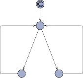
start()
Ringing
j : girl_t
phone[j]?
listen(), g = j
j : girl_t id != j phone[j]! g = j, talk()
reply[g]! Reply Listen
talk()
reply[g]? listen()
Fig. 18. First attempt for modelling the gossiping girls.
Let us first improve the model on three points:
The intermediate state Listen should be made committed otherwise all in- terleaving of half-started and complete calls will occur.
One select is enough because we are modelling something else here, namely
girl id selects a channel j and any other girl that selects the same channel can communicate with id.
The local variable g contributes badly to the state-space when its value is not relevant, i.e., the previous communication does not need to be kept. We can set it in a symmetric manner upon the start and reset it after communication to id.
These are typical “optimizations” of a model: Avoid useless interleavings by using committed locations, make sure you model exactly what you need and not more,
and “active variable reduction”. The updated model (gossip2.xml/integers, gossip3.xml/booleans) is shown in Fig. 19. The template keeps as an invariant that the variable g is
always equal to id whenever it is not sending. In addition, when a channel j is selected, then it corresponds to exactly girl j. Only one committed location is enough but it is a good practice to mark them both. It is more explicit when we read the model. Since the model performs better, we can now check with 5 girls instead of 4 within roughly the same time, which is a very good improvement considering the exponential complexity of the model.
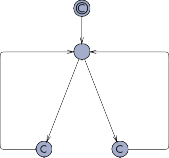
start(), g = id
Ringing
phone[id]? listen()
j : girl_t id != j phone[j]! g = j, talk()
reply[id]! Reply Listen
talk()
reply[g]?
listen(), g = id
Fig. 19. Improved model of the gossiping girls.
Optimizing Further We can abstract which communication line is used by declar- ing only one channel chan call. Since the semantics says that any pair of enabled edges (call!,call?) can be taken, we do not need to make an extra select. In addi- tion, processes cannot synchronize with themselves so we do not need this check either. The downside is that we lose the information on the receiver from the sender point of view. We do not need this in our case. We can get rid of the local variable g as well. We could use the sequence talk()-listen()-talk()-listen() with the old functions but we can simplify these by merging the middle listen()-talk() into one and simplifying listen() to a simple assignment since we know that the message already contains the secrets sent. The global declaration is updated with only chan call; for the channel. The updated automaton is depicted in Fig. 20. The integer version of the model (gossip4.xml) has the following local func-
tions:
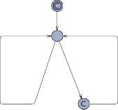
start()
Ringing
call? exchange()
call! talk()
Listen
listen()
Fig. 20. Optimized model of the gossiping girls.
int secrets;
void start() { secrets = 1 << id; } void talk() { tmp = secrets; }
void exchange() { secrets = (tmp |= secrets); } void listen() { secrets = tmp; }
The boolean version of the model (gossip5.xml) is changed to:
bool secrets[girl_t];
void start() { secrets[id] = true; } void talk() { tmp = secrets; }
void exchange() { for(i:girl_t) tmp[i] |= secrets[i]; secrets = tmp; }
void listen() { secrets = tmp; }
The exchange function could have been written as
void exchange() {
for(i:girl_t) secrets[i] = (tmp[i] |= secrets[i]);
}
which is almost the same. The difference is that the number of interpreted in- structions is lower in the first case. A step further would be to inline these functions on the edges in the model but then we would lose readability to gain less than 5% in speed. It is possible to further optimize the model by having one parameterized shared table and avoid message passing all-together. We leave this as an exercise for the reader but we notice that this change destroys the nice design with the local secrets to each process.
Verification
We check the property that all girls know all secrets. For the integer version of the model, the property is:
E<> forall(i:girl_t) forall(j:girl_t) (Girl(i).secrets & (1 << j))
We can write a shorter but less obvious equivalent formula that takes advantage of the fact that 2GIRLS − 1 generates a bit mask with the first GIRLS bits set to one:
E<> forall(i:girl_t) Girl(i).secrets == ((1 << GIRLS)-1)
The formula for the boolean version is:
E<> forall(i:girl_t) forall(j:girl_t) Girl(i).secrets[j]
The formulas use the “for-all” construct, which gives compact formulas that automatically scale with the number of girls in the model. The version with the integers checks with a bit mask that the bits are set.
Table 1 shows the resource consumption for the different models with different number of girls. Experiments are run on an AMD Opteron 2.2GHz with Uppaal rev. 2842. The results show how important it is to be careful with the model and
Girls | 4 | 5 | 6 |
gossip0 | 0.6s/24M | 498s/3071M | - |
gossip1 | 1.0s/24M | 809s/3153M | - |
gossip2 | 0.1s/1.3M | 0.3s/22M | 71s/591M |
gossip3 | 0.1s/1.3M | 0.5s/22M | 106s/607M |
gossip4 | 0.1s/1.3M | 0.2s/22M | 37s/364M |
gossip5 | 0.1s/1.3M | 0.3s/22M | 63s/381M |
Table 1. Resource consumption for the different models with different number of girls.
Results are in seconds/Mbytes.
to optimize the model to reduce the state-space whenever possible. We notice that we do not even have time in this model. The model with integers is faster due to its simplicity but consumes marginally less memory.
Improved Verification

Uppaal features two major techniques to improve verification. These techniques concern directly verification and are orthogonal to model optimization. The first is symmetry reduction. Since we designed our model to be symmetric from the start, taking advantage of this feature is done by using a scalar set for the type girl t. The second feature is the generalized sweep-line method. We need to define a progress measure to help the search. Furthermore, only the model with booleans is eligible for symmetry reduction since we cannot access individual bits in an integers in a symmetric manner (using scalars).
Symmetry Reduction The only change required is for the definition of the type

girl t. We use a scalar set for the new model (gossip6.xml):
typedef scalar[GIRLS] girl_t;
Sweep-line We need to define a progress measure that is cheap to compute and relevant to help the search. It is important that it is cheap to compute since it will be evaluated for every state. To do so, we add int m; to the global declarations, we add the progress measure definition after the system declaration:
progress { m; }
Finally, we compute m in the exchange function as follows:
void exchange() { m = 0;
for(i:girl_t) {
m += tmp[i] ^ secrets[i]; tmp[i] |= secrets[i];
}
}
This measures counts the number of new messages exchanged per communica- tion.
Girls | 4 | 5 | 6 | 7 |
gossip6 gossip7 | 0.1s/1.3M 0.1s/1.3M | 0.1s/1.3M 0.1s/1.3M | 3.4s/29M 0.3s/21M | 399s/1115M 29s/108M |
Table 2. Resource consumption using symmetry reduction (gossip6) combined with
the sweep-line method (gossip7).
Table 2 show that these features give gains with another order of magnitude both in speed and memory. The model still explodes exponentially but we cannot avoid it given its nature.
Modelling Patterns
In this section we present a number of useful modelling patterns for Uppaal. A modelling pattern is a form of designing a model with a clearly stated intent, motivation and structure. We observe that most of our Uppaal models use one or more of the following patterns and we propose that these patterns are imitated when designing new models.
Variable Reduction Intent
To reduce the size of the state space by explicitly resetting variables when they are not used, thus speeding up the verification.
Motivation
Although variables are persistent, it is sometimes clear from the way a model behaves, that the value of a variable does not matter in certain states, i.e., it is clear that two states that only differ in the values of such variables are in fact bisimilar. Resetting these variables to a known value will make these two states identical, thus reducing the state space.
Structure
The pattern is most easily applied to local variables. Basically, a variable v is called inactive in a location l, if along all paths starting from l, v will be reset before it will be used. If a variable v is inactive in location v, one should reset v to the initial value on all incoming edges of l.
The exception to this rule is when v is inactive in all source locations of the incoming edges to l. In this case, v has already been reset, and there is no need to reset it again. The pattern is also applicable to shared variables, although it can be harder to recognise the locations in which the variable will be inactive.
For clocks, Uppaal automatically performs the analysis described above. This process is called active clock reduction. In some situations this analysis may fail, since Uppaal does not take the values of non-clock variables into account when analysing the activeness. In those situations, it might speed up the verification, if the clocks are reset to zero when it becomes inactive. A similar problem arises if you use arrays of clocks and use integer variables to index into those arrays. Then Uppaal will only be able to make a coarse approximation of when clocks in the array will be tested and reset, often causing the complete array to be marked active at all times. Manually resetting the clocks might speed up verification.
Sample
The queue of the train gate example presented earlier in this tutorial uses the active variable pattern twice, see Fig. 21: When an element is removed, all the remaining elements of the list are shifted by one position. At the end of the loop in the Shiftdown location, the counter variable i is reset to 0, since its value is no longer of importance. Also the freed up element list[i] in the list is reset to zero, since its value will never be used again. For this example, the speedup in verification gained by using this pattern is approximately a factor of 5.
Known Uses
The pattern is used in most models of some complexity.
Synchronous Value Passing Intent
To synchronously pass data between processes.
Motivation
Consider a model of a wireless network, where nodes in the network are modelled
notempty! len>0
empty! len==0
add?
list[len]:=e, len++

Start
e:=list[0] hd?
rem! len>=1 len--,
i := 0
len==i
list[i] := 0, i := 0
Shiftdown
i < len list[i]:=list[i+1], i++
Fig. 21. The model of the queue in the train gate example uses active variable reduction twice. Both cases are on the edge from Shiftdown to Start: The freed element in the queue is reset to the initial value and so is the counter variable i.
as processes. Neighbouring nodes must communicate to exchange, e.g., routing information. Assuming that the communication delay is insignificant, the hand- shake can be modelled as synchronisation via channels, but any data exchange must be modelled by other means.
The general idea is that a sender and a receiver synchronise over shared binary channels and exchange data via shared variables. Since Uppaal evaluates the assignment of the sending synchronisation first, the sender can assign a value to the shared variable which the receiver can then access directly.
Structure
There are four variations of the value passing pattern, see Fig. 22. They differ in whether data is passed one-way or two-way and whether the synchronisation is unconditional or conditional. In one-way value passing a value is transfered from one process to another, whereas two-way value passing transfers a value in each direction. In unconditional value passing, the receiver does not block the communication, whereas conditional value passing allows the receiver to reject the synchronisation based on the data that was passed.
In all four cases, the data is passed via the globally declared shared variable var and synchronisation is achieved via the global channels c and d. Each process has local variables in and out. Although communication via channels is always synchronous, we refer to a c! as a send-action and c? as a receive-action. Notice that the variable reduction pattern is used to reset the shared variable when it is no longer needed. Alternatively, the shared variable can be declared meta, in which case the reset is not necessary since the variable is not part of the state.
In one-way value passing only a single channel c and a shared variable var
is required. The sender writes the data to the shared variable and performs a
Unconditional | Conditional | |||||
One-way | c? in := var, var := 0 cond(in) | |||||
c! var := out | ‚ | c? in := var, | c! var := out | ‚ | ||
‚ | var := 0 | ‚ | ||||
Asymmetric two-way | c! var := out cond1(var) d? in := var, var :=0 | c? in := var, var := out cond2(in) d! | ||||
c! var := out | c? in := var | |||||
‚ | ‚ | |||||
d? in := var, | ‚ | d! var := out | ‚ | |||
var :=0 | ||||||
Fig. 22. The are essentially four combinations of conditional, unconditional, one-way and two-way synchronous value passing.
send-action. The receiver performs the co-action, thereby synchronising with the sender. Since the update on the edge with send-action is always evaluated before the update of the edge with the receive-action, the receiver can access the data written by the sender in the same transition. In the conditional case, the receiver can block the synchronisation according to some predicate cond(in) involving the value passed by the sender. The intuitive placement of this predicate is on the guard of the receiving edge. Unfortunately, this will not work as expected, since the guards of the edges are evaluated before the updates are executed, i.e., before the receiver has access to the value. The solution is to place the predicate on the invariant of the target location.
Two-way value passing can be modelled with two one-way value passing pat- tern with intermediate committed locations. The committed locations enforce that the synchronisation is atomic. Notice the use of two channels: Although not strictly necessary in the two-process case, the two channel encoding scales to the case with many processes that non-deterministically choose to synchro- nise. In the conditional case each process has a predicate involving the value passed by the other process. The predicates are placed on the invariants of the committed locations and therefore assignment to the shared variable in the sec- ond process must be moved to the first edge. It might be tempting to encoding conditional two-way value passing directly with two one-way conditional value passing pattern, i.e., to place the predicate of the first process on the third location. Unfortunately, this will introduce spurious deadlocks into the model.
If the above asymmetric encoding of two-way value passing is undesirable, the symmetric encoding in Fig. 23 can be used instead. Basically, a process can non- deterministically choose to act as either the sender or the receiver. Like before,
committed locations guarantee atomicity. If the synchronisation is conditional, the predicates are placed on the committed locations to avoid deadlocks. Notice that the symmetric encoding is more expensive: Even though the two paths lead to the same result, two extra successors will be generated.
c!
var := out
c?
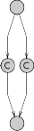
in := var, var := out
cond(var) cond(in)
d? d!
in := var, var := 0
Fig. 23. In contrast to the two-way encoding shown in Fig 22, this encoding is sym- metric in the sense that both automata use the exact same encoding. The symmetry comes at the cost of a slightly larger state space.
Sample
The train gate example of this tutorial uses synchronous one-way unconditional value passing between the trains and the gate, and between the gate and the queue. In fact, the value passing actually happens between the trains and the queue and the gate only act as a mediator to decouple the trains from the queue.
Known Uses
Lamport’s Distributed Leader Election Protocol. Nodes in this leader election protocol broadcast topology information to surrounding nodes. The communi- cation is not instantaneous, so an intermediate process is used to model the message. The nodes and the message exchange data via synchronous one-way unconditional value passing.
Lynch’s Distributed Clock Synchronisation Protocol. This distributed protocol synchronises drifting clocks of nodes in a network. There is a fair amount of non-determinism on when exactly the clocks are synchronised, since the proto- col only required this to happen within some time window. When two nodes synchronise non-deterministically, both need to know the other nodes identity. As an extra constraint, the synchronisation should only happen if it has not happened before in the current cycle. Here the asymmetric two-way conditional value passing pattern is used. The asymmetric pattern suffices since each node has been split into two processes, one of them being dedicated to synchronising with the neighbours.
Synchronous Value Passing (bis)
Intent
To synchronously pass integers with a small range between processes.
Motivation
Similarly to the previous value passing pattern, it is useful to send values between processes. However, this pattern is specialized to integers with small ranges, which gives us the benefit to avoid using a shared variable for the communica- tion.
Structure
The idea is to use arrays of channels to pass specific integers. The pattern is given for the general case of passing an integer value between MIN and MAX. Declare the array chan send[MAX-MIN+1] with MAX and MIN being either constants or the actual value of the desired range. Figure 7.3 shows the pattern. As an example the sender is sending the values 2, 3, or a randomly chosen value. The receiver is using the select feature of Uppaal 3.6 to find the right value. Notice that this is expensive for the model-checker if the range is large and will degrade performance. Two-way value passing can be modeled similarly to the previous pattern with the shared variable removed. Conditional value passing works for one-way only.
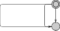
send[3-MIN]!
send[2-MIN]!
random:int[MIN,MAX] send[random-MIN]!
‚
‚
i:int[MIN,MAX]
send[i-MIN]? value=i
sent received
(a) Sender. (b) Receiver.
Fig. 24. Value passing using an array of channels.
Multicast Intent
To encode multicast to at least N receivers (or similarly exactly N ).
Motivation
Uppaal provides pair-wise synchronisation via regular channels (chan) and broadcast synchronisation via broadcast channels (broadcast chan). In some models it is useful to ensure there are at least N receivers available and have the multicast behaviour, typically for communication protocols.
Structure
Use a shared variable (e.g. ready) that is incremented on the edges leading to a
location where it is possible to receive and decrement this variable on the edges that leave this location. In addition, add the constraint in the sender process on the required number of receiver (e.g. ready >= N ). Figure 7.4 illustrates the patter.
doSomething
waitN ‚
‚
‚
ready >= 3 multisend!
ready++
waiting
multisend? ready--
sentN received
(a) Sender. (b) Receiver.
Fig. 25. Multicast from one sender to at least N receivers (3 in this example).
Atomicity Intent
To reduce the size of the state space by reducing interleaving using committed locations, thus speeding up the verification.
Motivation
Uppaal uses an asynchronous execution model, i.e., edges from different au- tomata can interleave, and Uppaal will explore all possible interleavings. Partial order reduction is an automatic technique for eliminating unnecessary interleav- ings, but Uppaal does not support partial order reduction. In many situations, unnecessary interleavings can be identified and eliminated by making part of the model execute in atomic steps.
Structure
Committed locations are the key to achieving atomicity. When any of the pro- cesses is in a committed location, then time cannot pass and at least one of these processes must take part in the next transition. Notice that this does not rule out interleaving when several processes are in a committed location. On the other hand, if only one process is in a committed location, then that process must take part in the next transition. Therefore, several edges can be executed atomically by marking intermediate locations as committed and avoiding syn- chronisations with other processes in the part that must be executed atomically, thus guaranteeing that the process is the only one in a committed location.
Sample
The pattern is used in the Queue process of the train gate example, see Fig. 26.
notempty! len>0
empty! len==0
add?
list[len]:=e, len++
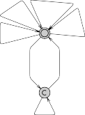
Start
e:=list[0] hd?
rem! len>=1 len--,
i := 0
len==i
list[i] := 0, i := 0
Shiftdown
i < len list[i]:=list[i+1], i++
Fig. 26. When removing the front element from the queue, all other elements must be shifted down. This is done in the loop in the Shiftdown location. To avoid unnec- essary interleavings, the location is marked committed. Notice that the edge entering Shiftdown synchronises over the rem channel. It is important that target locations of edges synchronising over rem in other processes are not marked committed.
Known Uses
Encoding of control structure A very common use is when encoding control struc- tures (like the encoding of a for-loop used in the IntQueue process of the train- gate example): In these cases the interleaving semantics is often undesirable.
Multi-casting Another common use is for complex synchronisation patterns. The standard synchronisation mechanism in Uppaal only supports binary or broad- cast synchronisation, but by using committed locations it is possible to atomi- cally synchronise with several processes. One example of this is in the train-gate example: Here the Gate process acts as a mediator between the trains and the queue, first synchronising with one and then the other – using an intermediate committed location to ensure atomicity.
Urgent Edges Intent
To guarantee that an edge is taken without delay as soon as it becomes enabled.
Motivation
Uppaal provides urgent locations as a means of saying that a location must be left without delay. Uppaal provides urgent channels as a means of saying that a synchronisation must be executed as soon as the guards of the edges involved are enabled. There is no way of directly expressing that an edge without synchronisation should be taken without delay. This pattern provides a way of encoding this behaviour.
Structure
The encoding of urgent edges introduces an extra process with a single location and a self loop (see Fig. 27 left). The self loop synchronises on the urgent channel go. An edge can now be made urgent by performing the complimentary action (see Fig. 27 right). The edge can have discrete guards and arbitrary updates, but no guards over clocks.
go!

‚
‚
go?
Fig. 27. Encoding of urgent edges. The go channel is declared urgent.
Sample
This pattern is used in a model of a box sorting plant (see http://www.cs.auc. dk/∼behrmann/esv03/exercises/index.html#sorter): Boxes are moved on a belt, registered at a sensor station and then sorted by a sorting station (a piston that can kick some of the boxes of the belt). Since it takes some time to move the boxes from the sensor station to the sorting station, a timer process is used to delay the sorting action. Figure 28 shows the timer (this is obviously not the only encoding of a timer – this particular encoding happens to match the one used in the control program of the plant). The timer is activated by setting a shared variable active to true. The timer should then move urgently from the passive location to the wait location. This is achieved by synchronising over the urgent channel go.
wait
passive
x==ctime eject! active:=false
x<=ctime
active==true go?
Fig. 28. Sample of a timer using an urgent edge during activation.
Timers
Intent
To emulate a timer where, in principle, time decreases until it reaches zero, at which point the timer is said to time-out.
Motivation
Although clocks are powerful enough to model timing mechanisms, some systems are more naturally modelled using timers, in particular event based models. In such models, a timer is started, may be restarted, and counts down until a time-out event is generated.
Structure
The pattern gives an equivalent of a timer object mapped on a process in Up- paal. We define the following operations for a timer object t:
void set(TO): this function starts or restarts the timer with a time-out value of TO. The timer will count down for TO time units. TO is an integer.
bool expired(): this function returns true if the timer has expired, false otherwise. When the timer has not been started yet, it is said to have expired. This function may be called at any time to test the timer.
We map the above defined timer as a process in Uppaal. When a timer t is to be used in the model, its functions are mapped as follows:
t.set(v) where v is an integer variable is mapped to the synchronisation set! and the assignment value := v, where the channel set and the integer value are the parameters of the timer template.
t.expired() is mapped to the guard value == 0, where value is a param- eter of the timer template.
As a variant of this basic timer model, it is possible to generate a time-out synchronisation, urgent or not depending on the needs, by using the pattern to encode urgent edges shown in Fig. 27. If the time-out value is a constant, we can optimise the coding to:
t.set() (no argument since the time-out is a constant) is mapped to set!.
t.expired() is mapped to active == false where active is a parameter of the template.
The templates are shown in Fig. 29. The two states correspond to the timer hav- ing expired (timer inactive) and waiting to time-out (timer active). The template
(a) makes use of a feature of Uppaal to mix integers and clocks in clock con- straints. The constraint is dynamic and depends on the value of the integer. When returning to the state Expired, the timer resets its value, which has the effect to (1) use variable reduction (see pattern 7.1) and (2) to provide a simple way to test for a time-out. The template (b) is simpler in the sense that a con- stant is used in the clock constraints. Testing for the time-out is equivalent to test on the boolean variable active.
Expired
set? x:=0
Waiting x<=value
Expired
set?
x:=0, active:=true
Waiting x<=TO
x==value value:=0
set? x:=0
x==TO
active:=false
set? x:=0
(a) Timer with variable time-out. (b) Timer with constant time-out.
Fig. 29. Template of the timer pattern. Template (a) has int value; chan set as parameters and template (b) has bool active; chan set; const TO as parameters. Both templates have the local declaration clock x.
Known Uses
A variation of the timer pattern is used in the box sorting machine of the previous pattern (for educational purposes reconstructed in Lego): A timer is activated when a coloured brick passes a light sensor. When the timer times out a piston kicks the brick from the transport belt.
Bounded Liveness Checking Intent
To check bounded liveness properties, i.e., properties that are guaranteed not only to hold eventually but within some specified upper time-bound. Time- bounded liveness properties are essentially safety properties and hence often computationally easier to verify. Thus moving from (unconditional) liveness properties to a time-bounded versions will not only provide additional infor- mation — i.e., if one can provide a valid bound — but will also lead to more efficient verification.
Motivation
For real-time systems general liveness properties are often not sufficiently ex- pressive to ensure correctness: the fact that a particular property is guaranteed to hold eventually is inadequate in case hard real-time deadlines must be ob- served. What is really needed is to establish that the property in question will hold within a certain upper time-limit.
Structure
We consider two variations of the pattern for a time-bounded leads-to operator ϕ ,-,_ ≤t ψ expressing that whenever the state property ϕ holds then the state property ψ must hold within at most t time-units thereafter.
In the first version of the pattern we use a simple reduction for unbounded leads-to. First the model under investigation is extended with an additional clock z which is reset whenever ϕ starts to hold. The time-bounded leads-to property ϕ ,-,_ ≤t ψ is now simply obtained by verifying ϕ ,-,_ (ψ ∧ z ≤ t).
In the second — and more efficient version — of the pattern we use the method proposed in [54] in which time-bounded leads-to properties are reduced
to simple safety properties. First the model under investigation is extended with a boolean variable b and an additional clock z. The boolean variable b must be initialised to false. Whenever ϕ starts to hold b is set to true and the clock z is reset. When ψ commences to hold b is set to false. Thus the truth-value of b indicates whether there is an obligation of ψ to hold in the future and z measures the accumulated time since this unfulfilled obligation started. The time-bounded leads-to property ϕ "0≤t ψ is simply obtained by verifying the safety property
A□(b =⇒ z ≤ t).
A third method not reported is based on augmenting the model under inves- tigation with a so-called test-automata, see [2,1].
We have deliberately been somewhat vague about the exact nature of the required augmentation of the model. The most simple case is when the (state) properties ϕ and ψ are simple locations l and l′ of component automata. In this simple case the settings of z and b are to be added as assignments of the edges entering l and l′.
Sample
In the train gate example presented earlier in this tutorial a natural requirement is that a train is granted access to the crossing within a certain upper time- bound (say 100) after having signalled that it is approaching. In fact, not only is the gate responsible for avoiding collisions on the crossing but also for ensuring a fair and timely handling of requests. In Fig. 30 the Train template has been augmented with a local boolean b and a local clock z. b (to be initialised to 0) is set to 1 on the transition to location Appr and set to 0 on the two transitions to Cross. The clock z is reset on the transition to Appr. On the augmented model we now check the safety property A[](Train1.b==1 imply Train1.z<=100) which establishes that the bounded liveness property holds for Train1. In fact — due to obvious symmetries in the model — it suffices to establish the property for one train, Train1 say. In this case it would have been advantageous for Train1 to be singleton template in order to avoid augmenting all trains. In particular, the state-space will be substantially smaller in this way.
Known Uses
Almost any real-time system will have a number of liveness properties where information as to the time-bounds is vital for the correctness of the systems. The Gearbox Controller of [54] offers an excellent example where a long list of time- bounded liveness properties are directly obtained from requirements specified by the company Mecel AB.
Abstraction and Simulation Intent
The goal of abstraction is to replace the problem of verifying a very large, in- feasible concrete system with a smaller, and hopefully feasible abstract system. In particular, the method could be applied in a compositional manner to sub- systems, i.e., various concrete subsystems are replaced by suitable abstractions,
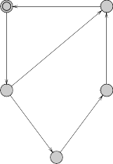
Safe
x:=0
x>=3
leave!
Cro x<=
appr!
e:=id,
x:=0,
z:=0, b:=1
x:=0, b:=0
x:=0, b:=0
x>=7
x>=10
ppr
<=20
x<=10,
e==id
Star x<=
x:=0
stop? go?
e==id
x:=0
e:=id,
ss 5
A t
x 15
Stop
Fig. 30. The Train-Gate augmented to enable time-bounded liveness checking.
and the verification effort is conducted on the composition of these abstract subsystems.
Motivation
Despite enormous improvement in the verification capabilities of Uppaal over the past years — and undoubtedly also for the years to come — state-space ex- plosion is an ever existing problem that will be solved by algorithmic advances.9 However, in verifying specific properties of a systems it is often only part of the behaviour of the various components which is relevant. Often the designer will have a good intuition about what these relevant parts are, in which case (s)he is able to provide abstractions for the various components, which are still concrete enough that the given property holds, yet are abstract (and small) enough that the verification effort becomes feasible. To give a sound methodology two re- quirements should be satisfied. Firstly, the notion of abstraction applied should preserve the properties of interest, i.e., once a property has been shown to hold for the abstraction it should be guaranteed to also hold for the concrete system. Secondly, the abstraction relation should be preserved under composition of sys- tems. In [46,45] we have put forward the notion of (ready) timed simulation preserving safety properties while being a pre-congruence w.r.t. composition. Moreover, for (suggested) abstractions being deterministic and with no inter- nal transitions, timed simulation may be established using simple reachability checking (and hence by using Uppaal).
Structure
Let A be a timed automaton suggested as an abstraction for some (sub)system

9 unless we succeed in showing P=PSPACE
S (possibly a network of timed automata). We assume that A is deterministic (i.e., no location with outgoing edges having overlapping guards) and without any internal transitions. For simplicity we shall assume all channels to be non- urgent and no shared variables exist between S and the remaining system. The extension of the technique to allow for urgency and shared variables can be found in [46]. To show that A is indeed an abstraction of S in the sense that A (ready) timed simulates S a test-automata TA is constructed in the following manner: TA has A as a skeleton but with the direction of actions (input/output) reversed. A distinguished new location bad is added and from all locations l and all actions
a an a-labelled edge from l to bad is inserted with guard ¬(g1 ∨ . . . ∨ gn) where
g1 . . . gn is the full set of guards of a-labelled edges out of l in the skeleton. Now
S is (ready) timed simulated by A — and hence A is a valid abstraction of S
— precisely if the location bad is unreachable in the composite system S1TA. Essentially, TA observes that all behaviour of S is matchable by A.
Sample
Consider the Uppaal model in Fig. 31 consisting of a Sender a Receiver and four pipelining processes Pi. Each pipeline process Pi has the obligation of re- acting to a stimulus from its predecessor on channel ai and pass it on to its successor on channel ai+1. A local clock is used to model that each pipeline process adds a minimum delay of 2. After having completed the passing on, the pipeline process engages in some internal computation (the small cycle S2, S3, S4). Now assume that we want to verify that the Receiver will have received its stimulus no sooner than after 8 time-units, or in general 2n in a system with n pipeline processes. Obviously, the system we are looking at is subject to an enormous state-space explosion when we increase the number of pipeline ele-
ments. However, for establishing the property in question we need only little information about the various subsystems. For P11P2 we essentially only need to know that the time from reacting to the initial stimulus from the Sender to passing this stimulus on to P3 is at least 4. We do not need to worry about the internal computation nor the precise moment in time when the stimulus was passed from P1 to P2. In particular we should be able to replace P11P2 with the much simpler automaton P1P2. To show that this is a valid substitution we sim- ply show that the BAD location is unreachable for the system P11P21TestP1P2, where TestP1P2 is the test automaton for P1P2. A similar abstraction P3P4 may obviously be given for the subsystem P31P4 and the desired property may now be established for the “much” simpler system P1P21P3P4, rather than the original system.
Known Uses
The described technique can be found in full details in the Ph.D. thesis of Jensen [45]. In [46] the technique has been successfully applied to the verification of a protocol for controlling the switching between power on/off states in audio/video components described in [48].
Sender P1 P2 P3 P4 Receiver
S0 S0 S0 S0
S0
a1!
S1
S1
‚
‚ S2
a1? x:=0
x>=2
a2!
S1
‚
‚ S2
a2?
‚
‚
a3?
S1 x:=0
x>=2
‚ S2 a4!
S3
S4
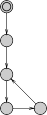
‚
‚
a4?
S1 x:=0
x>=2
‚ S2 a5!
S3
S4
‚
‚
a5?
S1
x:=0 S0
x>=2
a3!
S3 S4 S3 S4
Fig. 31. A small pipelining system.
P1P2 TestP1P2
S0
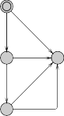
a1! x:=0
S1
a3?
x<4 a3?
>=4
a3?
a1!
S2
a3?
S0

a1?
S1 x:=0
x>=4
a3!
S2
‚
‚ x
BAD
Fig. 32. A suggested abstraction and its test automaton.
Conclusion
Uppaal is a research tool available for free at http://www.uppaal.com/ that features an intuitive graphical interface. It has been ported to different platforms and it is in constant development. There are different development branches and tools that make use of Uppaal:

∼behrmann/ guiding/.
Distributed–UPPAAL runs on multi-processors and clusters using the com- bined memory and CPU capacity of the system [17,9].
T–UPPAAL test case generator for black-box conformance testing, see http:
//www.cs.auc.dk/∼marius/tuppaal/.
Times is a tool set for modelling, schedulability analysis, and synthesis of (op- timal) schedules and executable code. The verification uses Uppaal [6].
On-going work on the model-checker includes support for hierarchical timed automata, symmetry reduction, U-Code (Uppaal code, large subset of C), im-
proved memory management, etc. The tool has been successfully applied to case studies ranging from communication protocols to multimedia applications:
Bang & Olufsen audio/video protocol. An error trace with more than 2000 transition steps was found [35].
TDMA Protocol Start-Up Mechanism was verified in [55].
Bounded retransmission protocol over a lossy channels was verified in [24].
Lip synchronisation algorithm was verified in [23].
Power-down controller in an audio/video component was designed and ver- ified in collaboration with Bang & Olufsen in [34].
Guided synthesis of control programs for a steel production plant was done in [43]. The final control programs were compiled to run on a Lego model of the real plant.
Gearbox controller was formally designed and analysed in [54].
Lego Mindstorm programs written in “Not Quite C” have been verified in [44].
Field bus protocol was modelled and analysed in [30].
Bi-phase Mark Protocol was modelled and analysed in [59] with Uppaal
and PVS.
Controller for a wafer scanner was designed with the aid of Uppaal in [37].
Car supervision system was formally modelled and analysed in [33].
IEEE1394a root contention protocol was modelled and verified in [58].
Uppaal is also used in a number of courses on real-time systems and formal verification:
http://user.it.uu.se/∼paupet/#teaching
Real-time and formal method courses at Uppsala University.


http://csd.informatik.uni-oldenburg.de/teaching/fp realzeitsys ws0001/ result/eindex.html
Practical course “Real-Time Systems” at the University of Oldenburg.
http://fmt.cs.utwente.nl/courses/systemvalidation/
System Validation (using Model Checking) at the University of Twente.
http://www.cs.auc.dk/∼behrmann/esv03/
Embedded Systems Validation at Aalborg University.
http://www.cs.auc.dk/∼kgl/TOV04/Plan.html
Test and Verification at Aalborg University.
http://www.seas.upenn.edu/∼pappasg/EE601/F03/
Hybrid Systems at the University of Pennsylvania.
http://www.it.uu.se/edu/course/homepage/proalgebra
Process Algebra at Uppsala University.
http://www.cs.auc.dk/∼luca/SV/
Semantics and Verification.
http://www.cs.depaul.edu/programs/courses.asp?subject=SE&courseid=533
Software Validation and Verification at DePaul University.
http://www.cs.bham.ac.uk/∼mzk/courses/SafetyCrit/
Safety Critical Systems and Software Reliability at the University of Birm- ingham.
http://fmt.cs.utwente.nl/courses/sysontomg/
Systeem-ontwikkelomgevingen at the University of Twente.
http://www.niii.ru.nl/F.Vaandrager/PV/
Protocol Validation at the Radboud University of Nijmegen.
Finally the following books have parts devoted to Uppaal:
Concepts, Algorithms and Tools for Model-Checking [47]: Lecture notes in its current form. It treats both Spin and Uppaal.
Systems and Software Verification: Model-checking Techniques and Tools [22]: This book identifies 6 important tools and has a chapter on Uppaal.
References
Luca Aceto, Patricia Bouyer, Augusto Burguen˜o, and Kim Guldstrand Larsen. The power of reachability testing for timed automata. Theoretical Computer Science, 1–3(300):411–475, 2003.
Luca Aceto, Augusto Burguen˜o, and Kim G. Larsen. Model checking via reachabil- ity testing for timed automata. In Bernhard Steffen, editor, Tools and Algorithms for Construction and Analysis of Systems, 4th International Conference, TACAS ’98, volume 1384 of Lecture Notes in Computer Science, pages 263–280. Springer– Verlag, April 1998.
Rajeev Alur, Costas Courcoubetis, and David L. Dill. Model-checking for real- time systems. In 5th Symposium on Logic in Computer Science (LICS’90), pages 414–425, 1990.
Rajeev Alur and David L. Dill. Automata for modeling real-time systems. In Proc. of Int. Colloquium on Algorithms, Languages, and Programming, volume 443 of LNCS, pages 322–335, 1990.
Tobias Amnell, Gerd Behrmann, Johan Bengtsson, Pedro R. D’Argenio, Alexan- dre David, Ansgar Fehnker, Thomas Hune, Bertrand Jeannet, Kim G. Larsen,
M. Oliver M¨oller, Paul Pettersson, Carsten Weise, and Wang Yi. Uppaal - Now, Next, and Future. In F. Cassez, C. Jard, B. Rozoy, and M. Ryan, editors, Modelling and Verification of Parallel Processes, number 2067 in Lecture Notes in Computer Science Tutorial, pages 100–125. Springer–Verlag, 2001.
Tobias Amnell, Elena Fersman, Leonid Mokrushin, Paul Pettersson, and Wang Yi. Times – a tool for modelling and implementation of embedded systems. In TACAS 2002, volume 2280 of Lecture Notes in Computer Science, pages 460–464. Springer–Verlag, April 2002.
Felice Balarin. Approximate reachability analysis of timed automata. In 17th IEEE Real-Time Systems Symposium. IEEE Computer Society Press, 1996.
Gerd Behrmann. Data Structures and Algorithms for the Analysis of Real Time Systems. PhD thesis, Aalborg University, 2003.
Gerd Behrmann. Distributed reachability analysis in timed automata. Software Tool For Technology Transfer (STTT), 2004. Currently available in the Online First edition of STTT.
Gerd Behrmann, Johan Bengtsson, Alexandre David, Kim G. Larsen, Paul Petters- son, and Wang Yi. Uppaal implementation secrets. In Proc. of 7th International Symposium on Formal Techniques in Real-Time and Fault Tolerant Systems, 2002.
Gerd Behrmann, Patricia Bouyer, Kim G. Larsen, and Radek Pel¡E1¿nek. Lower and upper bounds in zone-based abstractions of timed automata. International Journal on Software Tools for Technology Transfer, September 2005.
Gerd Behrmann, Alexandre David, Kim G. Larsen, John H˚akansson, Paul Pet- tersson, Wang Yi, and Martijn Hendriks. UPPAAL 4.0. In Proceedings of the 3rd International Conference on the Quantitative Evaluation of SysTems (QEST) 2006, IEEE Computer Society, pages 125–126, 2006.
Gerd Behrmann, Alexandre David, Kim G. Larsen, M. Oliver M¨oller, Paul Petters- son, and Wang Yi. Uppaal - present and future. In Proc. of 40th IEEE Conference on Decision and Control. IEEE Computer Society Press, 2001.
Gerd Behrmann, Alexandre David, Kim G. Larsen, and Wang Yi. Unification & sharing in timed automata verification. In SPIN Workshop 03, volume 2648 of LNCS, pages 225–229, 2003.
Gerd Behrmann, Ansgar Fehnker, Thomas Hune, Kim G. Larsen, Paul Petters- son, and Judi Romijn. Efficient guiding towards cost-optimality in uppaal. In
T. Margaria and W. Yi, editors, Proceedings of the 7th International Conference on Tools and Algorithms for the Construction and Analysis of Systems, number 2031 in Lecture Notes in Computer Science, pages 174–188. Springer–Verlag, 2001.
Gerd Behrmann, Ansgar Fehnker, Thomas Hune, Kim G. Larsen, Paul Pettersson, Judi Romijn, and Frits Vaandrager. Minimum-cost reachability for priced timed automata. In Maria Domenica Di Benedetto and Alberto Sangiovanni-Vincentelli, editors, Proceedings of the 4th International Workshop on Hybrid Systems: Com- putation and Control, number 2034 in Lecture Notes in Computer Sciences, pages 147–161. Springer–Verlag, 2001.
Gerd Behrmann, Thomas Hune, and Frits Vaandrager. Distributed timed model checking - How the search order matters. In Proc. of 12th International Conference on Computer Aided Verification, Lecture Notes in Computer Science, Chicago, Juli 2000. Springer–Verlag.
Gerd Behrmann, Kim G. Larsen, Justin Pearson, Carsten Weise, and Wang Yi. Efficient timed reachability analysis using clock difference diagrams. In Proceedings of the 12th Int. Conf. on Computer Aided Verification, volume 1633 of Lecture Notes in Computer Science. Springer–Verlag, 1999.
Johan Bengtsson. Clocks, DBMs and States in Timed Systems. PhD thesis, Upp- sala University, 2002.
Johan Bengtsson, Bengt Jonsson, Johan Lilius, and Wang Yi. Partial order re- ductions for timed systems. In Proceedings of the 9th International Conference on Concurrency Theory, September 1998.
Johan Bengtsson, Kim G. Larsen, Fredrik Larsson, Paul Pettersson, Yi Wang, and Carsten Weise. New generation of uppaal. In Int. Workshop on Software Tools for Technology Transfer, June 1998.
Beatrice Berard, Michel Bidoit, Alain Finkel, Francois Laroussinie, Antoine Petit, Laure Petrucci, Philippe Schnoebelen, and Pierre McKenzie. Systems and Software Verification: Model-Checking Techniques and Tools. Springer–Verlag, 2001.
Howard Bowman, Giorgio P. Faconti, Joost-Pieter Katoen, Diego Latella, and Mieke Massink. Automatic verification of a lip synchronisation algorithm using uppaal. In Bas Luttik Jan Friso Groote and Jos van Wamel, editors, In Proceed- ings of the 3rd International Workshop on Formal Methods for Industrial Critical Systems. Amsterdam , The Netherlands, 1998.
Pedro .R. D’Argenio, Joost-Pieter. Katoen, Theo C. Ruys, and Jan Tretmans. The bounded retransmission protocol must be on time! In In Proceedings of the
3rd International Workshop on Tools and Algorithms for the Construction and Analysis of Systems, volume 1217 of LNCS, pages 416–431. Springer–Verlag, April 1997.
Alexandre David. Hierarchical Modeling and Analysis of Timed Systems. PhD
thesis, Uppsala University, November 2003.
Alexandre David, Gerd Behrmann, Kim G. Larsen, and Wang Yi. New uppaal architecture. In Paul Pettersson and Wang Yi, editors, Workshop on Real-Time Tools, Uppsala University Technical Report Series, 2002.
Alexandre David, Gerd Behrmann, Kim G. Larsen, and Wang Yi. A tool architec-
ture for the next generation of uppaal. In 10th Anniversary Colloquium. Formal Methods at the Cross Roads: From Panacea to Foundational Support, LNCS, 2003.
Alexandre David, John H˚akansson, Kim G. Larsen, and Paul Pettersson. Model
checking timed automata with priorities using dbm subtraction. In Proceedings of the 4th International Conference on Formal Modelling and Analysis of Timed Systems (FORMATS’06), volume 4202 of LNCS, pages 128–142, 2006.
Alexandre David, M. Oliver M¨oller, and Wang Yi. Formal verification of UML
statecharts with real-time extensions. In Ralf-Detlef Kutsche and Herbert We- ber, editors, Fundamental Approaches to Software Engineering, 5th International Conference, FASE 2002, volume 2306 of LNCS, pages 218–232. Springer–Verlag, 2002.
Alexandre David and Wang Yi. Modelling and analysis of a commercial field bus
protocol. In Proceedings of the 12th Euromicro Conference on Real Time Systems, pages 165–172. IEEE Computer Society, 2000.
Ansgar Fehnker. Citius, Vilius, Melius: Guiding and Cost-Optimality in Model
Checking of Timed and Hybrid Systems. PhD thesis, University of Nijmegen, April 2002.
Elena Fersman. A Generic Approach to Schedulability Analysis of Real-Time Sys-
tems. PhD thesis, Uppsala University, November 2003.
B. Gebremichael, T. Krilavicius, and Y.S. Usenko. A formal analysis of a car periphery supervision system. Technical Report NIII-R0418, Radboud University of Nijmegen, 2004.
Klaus Havelund, Kim G. Larsen, and Arne Skou. Formal verification of a
power controller using the real-time model checker uppaal. 5th Interna- tional AMAST Workshop on Real-Time and Probabilistic Systems, available at http://www.uppaal.co m, 1999.
Klaus Havelund, Arne Skou, Kim G. Larsen, and Kristian Lund. Formal modelling
and analysis of an audio/video protocol: An industrial case study using uppaal. In Proceedings of the 18th IEEE Real-Time Systems Symposium, pages 2–13, De- cember 1997.
M. Hendriks, G. Behrmann, K.G. Larsen, P. Niebert, and F.W. Vaandrager.
Adding symmetry reduction to uppaal. In Proceedings First International Work- shop on Formal Modeling and Analysis of Timed Systems (FORMATS 2003), vol- ume 2791 of Lecture Notes in Computer Science, 2003.
M. Hendriks, N.J.M. van den Nieuwelaar, and F.W. Vaandrager. Model checker
aided design of a controller for a wafer scanner. Technical Report NIII-R0430, Radboud University of Nijmegen, 2004.
Martijn Hendriks and Kim G. Larsen. Exact acceleration of real-time model check-
ing. In E. Asarin, O. Maler, and S. Yovine, editors, Electronic Notes in Theoretical Computer Science, volume 65. Elsevier Science Publishers, April 2002.
Thomas A. Henzinger. Symbolic model checking for real-time systems. Information
and Computation, 111:193–244, 1994.
Gerard J. Holzmann. Design and Validation of Computer Protocols. Prentice-Hall, 1991.
Gerard J. Holzmann. An analysis of bitstate hashing. Formal Methods in System
Design, 13:289–307, 1998.
John E. Hopcroft and Jeffrey D. Ullman. Introduction of Automata Theory, Lan- guages, and Computation. Addison Wesley, 2001.
Thomas Hune, Kim G. Larsen, and Paul Pettersson. Guided synthesis of control
programs using uppaal. In Ten H. Lai, editor, Proc. of the IEEE ICDCS In- ternational Workshop on Distributed Systems Verification and Validation, pages E15–E22. IEEE Computer Society Press, April 2000.
Torsten K. Iversen, K˚are J. Kristoffersen, Kim G. Larsen, Morten Laursen, Rune G.
Madsen, Steffen K. Mortensen, Paul Pettersson, and Chris B. Thomasen. Model- checking real-time control programs — Verifying LEGO mindstorms systems using uppaal. In Proc. of 12th Euromicro Conference on Real-Time Systems, pages 147–
155. IEEE Computer Society Press, June 2000.
Henrik Ejersbo Jensen. Abstraction-Based Verification of Distributed Systems. PhD thesis, Aalborg University, June 1999.
Henrik Ejersbo Jensen, Kim Guldstrand Larsen, and Arne Skou. Scaling up uppaal
automatic verification of real-time systems using compositionality and abstraction. In Mathai Joseph, editor, Formal Techniques in Real-Time and Fault-Tolerant Sys- tems, 6th International Symposium, FTRTFT 2000, volume 1926 of Lecture Notes in Computer Science, pages 19–20. Springer–Verlag, 2000.
Joost-Pieter Katoen. Concepts, Algorithms, and Tools for Model Checking.
http://www.it-c.dk/people/hra/mcpa/katoen.ps, 1999.
Arne Skou Klaus Havelund, Kim Guldstrand Larsen. Formal verification of a power controller using the real-time model checker Uppaal. In 5th Int. AMAST Workshop on Real-Time and Probabilistic Systems, volume 1601 of Lecture Notes in Computer Science, pages 277–298. Springer–Verlag, 1999.
L.M. Kristensen and T. Mailund. A Generalised Sweep-Line Method for Safety
Properties. In Proc. of FME’02, volume 2391 of LNCS, pages 549–567. Springer- Verlag, 2002.
K˚are J. Kristoffersen. Compositional Verification of Concur-
rent Systems. PhD thesis, Aalborg University, August 1998. http://www.itu.dk/people/kjk/publications.html.
Kim G. Larsen, Gerd Behrmann, Ed Brinksma, Ansgar Fehnker, Thomas Hune,
Paul Pettersson, and Judi Romijn. As cheap as possible: Efficient cost-optimal reachability for priced timed automata. In G. Berry, H. Comon, and A. Finkel, editors, Proceedings of CAV 2001, number 2102 in Lecture Notes in Computer Science, pages 493–505. Springer–Verlag, 2001.
Kim G. Larsen, Paul Pettersson, and Wang Yi. Uppaal in a nutshell. Int. Journal
on Software Tools for Technology Transfer, 1(1–2):134–152, October 1997.
Fredrik Larsson, Kim G. Larsen, Paul Pettersson, and Wang Yi. Efficient verifi- cation of real-time systems: Compact data structures and state-space reduction. In Proc. of the 18th IEEE Real-Time Systems Symposium, pages 14–24. IEEE Computer Society Press, December 1997.
Magnus Lindahl, Paul Pettersson, and Wang Yi. Formal design and analysis of a
gearbox controller. Springer International Journal of Software Tools for Technology Transfer (STTT), 3(3):353–368, 2001.
Henrik L¨onn and Paul Pettersson. Formal verification of a TDMA protocol startup
mechanism. In Proc. of the Pacific Rim Int. Symp. on Fault-Tolerant Systems, pages 235–242, December 1997.
Brian Nielsen. Specification and Test of Real-Time Systems. PhD thesis, Aalborg University, 2000.
Paul Pettersson. Modelling and Verification of Real-time Systems Using Timed Automata: Theory and Practice. PhD thesis, Uppsala University, 1999.
D.P.L. Simons and M.I.A. Stoelinga. Mechanical verification of the IEEE 1394a root contention protocol using Uppaal2k. Springer International Journal of Soft- ware Tools for Technology Transfer, pages 469–485, 2001.
F.W. Vaandrager and A.L. de Groot. Analysis of a biphase mark protocol with Uppaal and PVS. Technical Report NIII-R0445, Radboud University of Nijmegen, 2004.
Wang Yi, Paul Petterson, and Mats Daniels. Automatic verification of real-time communicating systems by constraint-solving. In Seventh International Conference on Formal Description Techniques, pages 223–238, 1994.
Appendix
Expression → ID | NAT
| Expression ’[’ Expression ’]’
| ’(’ Expression ’)’
| Expression ’++’ | ’++’ Expression
| Expression ’--’ | ’--’ Expression
| Expression AssignOp Expression
| UnaryOp Expression
| Expression BinaryOp Expression
| Expression ’?’ Expression ’:’ Expression
| Expression ’.’ ID
UnaryOp → ’-’ | ’!’ | ’not’
BinaryOp → ’<’ | ’<=’ | ’==’ | ’!=’ | ’>=’ | ’>’
| ’+’ | ’-’ | ’*’ | ’/’ | ’%’ | ’&’
| ’|’ | ’^’ | ’<<’ | ’>>’ | ’&&’ | ’||’
| ’<?’ | ’>?’ | ’and’ | ’or’ | ’imply’
AssignOp → ’:=’ | ’+=’ | ’-=’ | ’*=’ | ’/=’ | ’%=’
| ’|=’ | ’&=’ | ’^=’ | ’<<=’ | ’>>=’
Fig. 33. Syntax of expressions in BNF.
Table 3. Options of verifyta and the corresponding options in the GUI. Defaults of
verifyta are shown in boldface.
State Space Representation
-C DBM
Use DBMs rather than a minimal constrain graph [53] in the state represen- tation used to store reachable states. This increases the memory usage (more so in models with many clocks), but is often faster.
-A Over approximation
Use convex hull over-approximation [7]. For timed systems, this can drastically increase verification speed. For untimed systems, this has no effect.
-Z Under approximation
Use bit-state hashing under-approximation. This reduces memory consump- tion to a more of less fixed amount. The precision of the approximation is controlled by changing the hash table size. Known as super-trace in [40,41].
-T Reuse
Speed up verification by reusing the generated state-space when possible. For some combinations of properties this option can possibly lead to a larger state- space representation, thus nullifying the speedup.
-U When representing states with minimal constraint graphs, this option changes how states are compared. It reduces the memory consumption at the expense of a more time consuming comparison operator. The reduced memory usage might cancel out the overhead. In the GUI, this is always on.
-H Change the size of hash tables used during verification. Can give a speedup for large systems.
State Space Reduction
-S0 None
Store all reachable states. Uses most memory, but avoids that any state is explored more than once.
-S1 Conservative
Store all non-committed states. Less memory when committed locations are used, and for most models states are only explored once.
-S2 Aggressive
Try hard to reduce the number of states stored. Uses much less memory, but might take much more time. Do not combine this option with depth first search, as the running time increases drastically.
Search Order
-b Breadth First
Search the state space using a breadth first strategy.
-d Depth First
Search the state space using a depth first strategy.
Trace Options
-t0 Some Trace
Generate some diagnostic trace.
-t1 Shortest Trace
Generate the shortest (in number of steps) trace.
-t2 Fastest Trace
Generate the fastest (smallest time delay) trace.
-f Write traces to XTR trace files (which can be read by the GUI).
-y By default concrete traces (showing both delay and control transitions) are produced. This option produces symbolic traces like those shown in the GUI.

On-the-fly solving of railway games Ha
Michael R. Hansen

based on joint work with Patrick Kasting and Steen Vester
Ha
From speakers in an S-train:
Line E is now driving according to a changed plan
Application area: Railway network
Desire: Generate correct control programs automatically when unusual situations occur, like broken signals, points, ect.
Domain modelling: understanding the application area
Make the models suitable for computations
t1
sss222000
t2
sss222000
t2
t1
Ha
ss1100
s11
Initial positions
s12
s10
s11
Destinations
s12
Signaling plan: Mapping from train positions to configurations of points and signals
The problem: Synthesis of a signaling plan that safely guides trains from their initial positions to their destinations
The challenge: How big is the state space of this example?
grows exponentially in number of trains, signals and points unless ...
Examples and figures originate from [Kasting16]
Goal: Synthesis of correct-by-construction control programs for railway networks using reachability games
Ha
BSc. thesis by Patrick Kasting and subsequent publication:
Synthesis of signalling plans for railway networks using reachability games, P. Kasting, Bsc. thesis DTU, 2016
Synthesis of Railway-signalling plans using reachability games, P. Kasting, M.R. Hansen, S. Vester. 28th Symposium on the Implementation and Application of Functional Programming Languages, IEEE 2017
Ongoing work: On-the-fly solving of railway games
First prototype, Michael R. Hansen
MSc. thesis Sune Bartels, finished 2018
Msc. thesis Mathias Kok, finished 2019
Many examples and figures originates from the BSc thesis of P. Kasting
A control system plays against an evil super train driver:
control system is in charge of points and signals
vicious "super train driver" controls movements of all trains Ha
(obeying the signals)
The rules of the turn-based game:
When the super train driver has the turn, she selects one train that moves to the next linear section (if possible).
When the control system has the turn, it sets points and signals (without moving the trains)
The super train driver wins a play if the destinations are NOT reached
The control system wins a play if all trains safely moves from their initial positions to their destinations
A strategy is winning for the control system if it safely brings the trains from their initial positions to their destination, no matter what the opponent does "winning strategy = control program"
t1
v5
s20
t2
s10
s11
s12
t1
v1 initial
s20
t2
s10
s11
s12
t1
v6
s20
t2
s10
s11
s12
v7
v8
s20
s20
t2
t1
s10
s11
s12
s10
s11
s12
s12
s11
s10
s20
t2
v9
t1
s12
s11
s10
t2
s20
v4
t1
s12
s11
s10
s20
t2
v3
t1
s12
s11
s10
t2
s20
v2
t1
Ha
From [Kasting16]
Ha
The first solver implemented (by Kasting) is based on [Berwanger13]:
It computes the "complete" winning areas for the control system and for the super train driver
The challenge is to tame the size of the railway game graph:
the number of states is exponential in the number of trains, . . .
the number of transitions leaving a control state is . . .
Some observations:
Only signals and points in front of trains are relevant
The control system may choose to allow at most one signal to be Ha
green
The game graph is exponential in the number of trains "only"
Extract of results: [Kasting16]
Toy | Lyngby | Florence | ||
ignore points/signals | V 2 max #vertices | 135 | 4.3 × 107 | 2.0 × 109 |
18 | 78530 | 253063 | ||
running time [s] | 0.19 | 2.6 | 12 | |
ignore Eve moves | V 3 max #vertices | 105 | 8.5 × 106 | 6.0 × 108 |
15 | 25467 | 220733 | ||
running time [s] | 0.19 | 0.67 | 8.1 | |
Lyngby Station: 11 linear sections, 6 points, 14 signals, 5 trains
Florence Station: 69 linear sections, 23 points, 46 signals, 4 trains
Florence Station with 5 trains —- out-of-memory
Encouraging result on the basis of a simple, global game-based setting
t4
t5
s30
s31
s32
s33
s34
s22m
s20p
s20
s21
s22
s22p
s20m
t1
t3
t2
Ha
s10
s11
s12
s13
s14
From [Kasting16]
Ha
Figure: Roughly a quarter of Florence Station. Each blue square represents a signal. This figure was kindly provided by Alessandro Fantechi.
Using game-based techniques for railway networks:
a correct-by-construction control program can be synthesized Ha
online generation of control programs (for irregular situations) may be within reach
New ideas:
Use local game solving
Simple linear-time algorithms for minimal fixed points
Liu and Smolka 1998
Local: determines the winning status of the initial state (and ...)
— does not (necessarily) solve the complete game
Use on-the-fly techniques
On-the-fly: only a relevant part of the game graph is constructed, and it is constructed during the solving process
Ha

F . . .
. . .
T
. . .
. . .
T

. . .
Control-system states are shown as circles
Train-driver states as squares
Ha

F . . .
. . .
T
F
. . .
. . .
T

. . .
Control-system states are shown as circles
Train-driver states as squares
F F Ha

F . . .
. . .
T

F
F
. . .
. . .
T
. . .
Control-system states are shown as circles
Train-driver states as squares
F F Ha

not explored
F
F
. . .
. . .
F
T

F . . .
. . .
T

. . .
Control-system states are shown as circles
Train-driver states as squares
Liu and Smolka’s algorithm
a railway-game situation
F F Ha
not explored
F
F
. . .
. . .
F/ T
T
F . . .
. . .
T

. . .
Control-system states are shown as circles
Train-driver states as squares
a railway-game situation
F F Ha
not explored
F
T F/
. . .
. . .
F/ T
T
F . . .
. . .
T

not explored
. . .
Control-system states are shown as circles
Train-driver states as squares
a railway-game situation
F F Ha

F . . .
F T F/
not explored

T
. . .
. . .
F/ T
T
explored next not explored
. . . . . .
The game is generated while it is solved
Only the explored portion is generated
t4
t5
s30
s31
s32
s33
s34
s22m
s20p
s20
s21
s22
s22p
s20m
t1
t3
t2
Ha
s10
s11
s12
s13
s14
lines = ["s30"; "s32"; "s34"; "s21"; "s10"; "s12"; ... ]
signalsUp = ["s30"; "s32"; "s34"; "s21"; "s10"; "s12"; "s14"]
signalsDown = ["s34"; "s32"; "s30"; "s21"; "s10"; "s12"; "s14"]
points = ["s11"; "s13"; "s20"; "s22"; "s31"; "s33"]
succ(s) = match s with
| "s30" -> Stem("s31", "s32", "s20p")
| "s22m" -> Minus("s33", "s34")
| "s32" -> Plus("s33", "s34")
.....
t4
t5
s30
s31
s32
s33
s34
s22m
s20p
s20
s21
s22
s22p
s20m
t1
t3
t2
Ha
s10
s11
s12
s13
s14
Controlled states: Con(up, down),
e.g. Con(["s10", "s30"], ["s14","s34","s12"])
Environment states: Env(up, down, signalState, pointState)
A function edges : State → State list list
defined on the basis of a network description.
New states are generated on-the-fly by application of edges
Ha
Lyngby station is solved in 23 ms (670 ms) generating 1035 states (25467 states)
Florence station with 4 trains is solved in 27 ms (8.1 s) generating 382 states (220733 states)
Florence station with 8 trains is solved in 19s generating 99720 states
Generated strategy involves 40 controller states
Local, on-the-fly techniques are very promissing for railway games.
Main idea: exploit static properties of the railway network – complete game states are NOT considered
Ha
Some preliminary results:
Idea by Sune Bartels: exclude generation of edges leading to states from where the destination is not reachable
2 x Florence station with 8 trains has been solved prompt generating 3626 states. Strategy has 207 transitions
2 x Florence station with 9 trains has been solved (spending about 14 min.) generating 1876469 states. Strategy has 221 transitions
Idea by Mathias Kok: He introduces concepts uncontrollable paths and bottlenecks and associated heuristics
4 x Florence station with 23 trains has been solved within 5.5 s generating 1040 states
Martin Schoeberl Technical University of Denmark


Interact with the world
Usually with tight deadlines
Real-time systems
The world is embarrassingly concurrent
Best handled with concurrent tasks
How to represent those tasks?
How to make a multi-threaded system deterministic?


The path to more performance
State-of-the art in desktop and server
Considered for real-time systems
Provide real (computation) concurrency
Communication concurrency?
Overlap computation and communication?


How to program those multiple cores?
Use the concurrency for performance
Real-time and time-predictable?
Model of computation as theory


MoC is a term used to describe different forms of concurrent execution ‘schemes’
See Ptolemy II handbook
Explore with Ptolemy II
Processes + communication
It is about concurrency
Theoretical models
No notion on real-time or performance


Communicating sequential processes
Kahn process networks
Synchronous dataflow
Actors
Shared memory and threads
Reactors

Communicating Sequential Processes  (Hoare)
(Hoare)

Sequential processes
Synchronous message passing
Message passing also used for process synchronization
Synchronizes with each message
No overlap of communication and computation
Occam as a language for CSPs
Hardware implementation in Transputer


Network of processes
Also called actors
Unidirectional channels between processes
Unbound buffers
Process:
Reads tokens on input channels
Executes the process
Produces tokens on the output


Restriction of Kahn process networks
Fixed number of tokens consumed and produced
Can be different for different channels
Multi-rate processing
Balance equations for
Number of tokens produced and consumed
Execution frequency of actors
Static schedule for single processor
Fits well for digital signal processing


Tasks are represented as actors
Actors receives messages
Act (compute) on the reception of a message
Actors send messages
Only local/private state
No need for lock-based synchronization
Now popular with Akka


Currently most commonly used MoC
Not well defined
Uses threads to represent tasks
Uses locks to protect data structures
Avoid race conditions
Needs a memory model
Not even mentioned in Ptolemy handbook ;-)


Based on the Actor model
Add time
Original model is untimed
Add determinism
Original order of actions is non- deterministic


Components contain
Input ports, actions, and clocks, all of which are triggers
Output ports, local state, and an ordered list of reactions
Composition
A reactor may contain other reactors
Connections define the flow of messages
An output port may be connected to multiple input ports


Events
Messages sent from one reactor to another, and clock and action events
Each have a timestamp, a value on a logical timeline
Each port, clock, and action can have at most one such event at any logical time
An event may carry a value that will be passed as an argument to triggered reactions


Reactions
A procedure in a target language that is invoked in response to a trigger event.
A reaction can read input ports and can produce outputs
Declare all inputs that it may read and output ports to which it may write
All inputs that it reads and outputs that it produces bear the same timestamp as its triggering event
The reaction itself is logically instantaneous, so any output events it produces are logically simultaneous with the triggering event

Flow of Time
Successive invocations of any single reaction occur at strictly increasing logical times
Any messages that are not read by a reaction triggered at the timestamp of the message are lost
Logical time can be advanced by a delay statement


Mutual Exclusion
The execution of any two reactions of a reactor are mutually exclusive
Atomic with respect to one another
Any two reactions that are invoked at the same logical time are invoked in the order specified by the reactor definition
Avoiding race conditions between reactions accessing the reactor state variables
There is only local state


For real-time systems
Reactors have two notions of time
Logical time
Physical time
Each event has a timestamp
Sensor input uses physical time for the timestamp
Otherwise, this is logical time


Multiple events with the same timestamp are simultaneous
Logical time does not advance when executing an action
Logical time and physical time are aligned at application start
Logical time never gets ahead of physical time


Inputs are assigned a timestamp of physical time
Logical time may lag behind physical time
Deadlines at actuators to ensure real- time behavior
Delay construct to align logical time to physical time


dE = 8
DX = 2
Periodic Source (P)
Filter
(A)
Merge
(C)
Delay
(E)
Actuator
(X)
dF = 6
DY = 4
Sporadic Sensor (S)
Filter
(B)
Delay
(F)
Actuator
(Y)


Logical Time and Physical Time
LogicalTime PhysicalTime
| ||
| External events | |
| Deadlines | |
| Fault handling | |
Steps or 'ticks'
Discrete
Absolute Simultaneity
Measurements Continuous Relativistic Simultaneity
The Persistence of Memory — Salvador Dalí
23


A polyglot meta-language for deterministic, concurrent, time- sensitive systems
Reaction code in target language
C, C++,…
Generation of runtime code from LF constructs
Hierarchical Composition and Ports
reactor A {
output y;
...
}
reactor B {
input x;
...
}
main reactor C {
a = new A();
b = new B();
a.y -> b.x;
}

reactor ComputationA {
input x:type;
output y:type;
state s:type(initialValue);
reaction(x) -> y {= Target-language code referencing x, y, and s.
=}
}
Local state
reactor Add { input in1:int; input in2:int; output out:int;
reaction(in1, in2) -> out {= int result = 0;
if (in1_is_present) { result += in1;
}
if (in2_is_present) { result += in2;
}
set(out, result);
=}
}
reactor SensorA {
output y:int;
timer t(1 msec, 100 usec);
reaction(t) -> y {= Poll the sensor in the target language aand write value to y.
=}
}
In our C target, timestamps are 64-bit integers representing the number of nanoseconds since Jan. 1, 1970 (if the platform has a clock) or the number of nanoseconds since starting (if not).
reactor SensorB { output y:int; physical action a:int; timer start;
reaction(startup) -> a {= Set up an interrupt service routine that will call: scchedule(a, 0, value);
=}
reaction(a) -> y {= set(y, a_value);
=}
}
reactor ActuatorA { input in:int; reaction(in) {=
perform actuation.
=} deadline 10 msec {= handle deadline violation.
=}
}
Verbatim target code
Reactor-oriented composition layer
Interactive Visualization
32


Reactors: A Deterministic Model of Concurrent Computation
Savina - An Actor Benchmark Su ite
. Shams Imam, Vivek Sarkar. 4th
International Workshop on Programming based on Actors, Agents, and Decentralized Control (AGERE! 2014), October
2014. 34


Still early, but evolving rapidly
Eclipse/Xtext-based IDE
C, C++, Python, and TypeScript targets
Code runs on Mac, Linux, Windows, and Patmos (T-CREST)
EDF scheduling on multicore
Command-line compiler
35
Regression test suite
Wiki documentation


No notion about implementation
On a multicore with a network-on-chip?
All MoCs can be (and have been) implemented with:
Shared memory and
Locks
Maybe better with hardware support?
E.g., CSP had HW support with Transputers


Need to know the worst-case execution time (WCET)
T-CREST is built to enable WCET analysis
A time-predictable platform for reactors
Multicore for higher performance


Time-predictable platform
Patmos dual-issue processor
Special time-predictable caches
Argo and S4NOC network-on-chip
Hardware for message passing
Time-division multiplexing of channels and routers
Time-predictable SDRAM memory controller


Main memory access tree
Time-division multiplexing
Compiler based on LLVM
Support of Patmos
Single-path code generation
WCET Analysis tools
AbsInt aiT, platin, Heptane
T-CREST availability
Open-source on GitHub


How do we move data (bits) around?
What can we provide in hardware?
Keep bits on-chip
As much as possible
Have static arbitration for time predictability
Use time division multiplexing (TDM) for all arbitrations
Memory and network-on-chip (NoC)


Shared main memory
Network-on-chip (variations)
Shared scratchpad memory
Distributed shared on-chip memory
Shared memory with ownership
Memory between cores
One-way shared memory


Current form for multicore processors
L2 cache and cache coherence does the communication
Memory model needed for visibility rules
When is an update of core A visible for core B
Does not scale well
Cache coherence is a many to many communication


Push communication
Simple and most efficient
Implemented in T-CREST Argo NoC
Push and pull
Pull needs about double the bandwidth
Balance between on-chip memories and NoC to be explored
Probably a good fit for reactor events


Core local SPMs are popular
On-chip memory
Instead of caches
Time predictable
Shared SPM instead of L2 cache
All cores access with TDM arbiter
Time-predictable
Shorter access time than to shared external memory


A SPM that is owned by a core
Ownership can be transferred
Only one core can access when owning it
Shorter access time than shared SPM
Good for bulk data movement between cores
We can have a pool of shared SPMs


Combine local SPMs with a NoC
Two NoCs: write/cmd and read return
Accessible from all cores
Via a network-on-chip
Different access times
Dist. shared memory vs. shared SPM
Some programming model
Both keep data on-chip
Dist. shared memory + NoC higher BW than shared SPM


All presented architectures can be used for message passing
Add HW for more efficient handling
Special instructions for send and receive
RISC-V extended for the Paternoster NoC
Argo NoC has DMAs that handle concurrent messages transmission
Hardware support for CSP rendezvous


Reactor Projects (Ongoing Work)

LF for Patmos available (multicore)
Current LF implementation uses shared memory for events
Explore multicore communication for the messages
Do WCET analysis of reactors
Could be a MS thesis project


Models of computation are well defined
But seldom used
The communication mechanics is not considered
Lingua Franca programs are testable (timestamped inputs -> timestamped outputs)
LF programs are deterministic under clearly stated assumptions
Violations of assumptions are detectable at run time


https://github.com/icyphy/lingua- franca

SMC
Int J Softw Tools Technol Transfer DOI 10.1007/s10009-014-0361-y
Uppaal SMC tutorial
Alexandre David · Kim G. Larsen · Axel Legay ·
Marius Mikucˇionis · Danny Bøgsted Poulsen
© Springer-Verlag Berlin Heidelberg 2015
Abstract This tutorial paper surveys the main features of Uppaal SMC, a model checking approach in Uppaal family that allows us to reason on networks of complex real-timed systems with a stochastic semantic. We demonstrate the mod- eling features of the tool, new verification algorithms and ways of applying them to potentially complex case studies.
Keywords Uppaal · Timed automata · Model-checking · Statistical model-checking · Stochastic · Hybrid · Dynamical · Probabilistic
Computer systems play a central role in modern societies and their errors can have dramatic consequences. Prov- ing the correctness of computer systems is therefore a highly relevant activity, on which both industry and aca- demics invest a considerable amount of effort. Among such techniques, one finds (1) testing [14], the traditional approach that detects bugs by exercising the real system with test cases, and (2) formal methods, e.g., model check- ing [17], that is a more mathematical approach that can guarantee the absence of bugs in the system design. Both approaches have been largely deployed on complex case studies.
Originally, formal verification was devoted to software and hardware systems by considering their discrete behav-
iors. However, the past years shown that real-time aspects play central roles in systems, and that this feature should be taken into account in the verification process. Developing formal techniques for such systems has thus been the subject of intensive studies. One of the prominent results on the topic was the introduction of model checking techniques for timed automata [1], a natural model to capture real-time systems whose behaviors depends on clocks that can be reset. Among all the tools that have been developed to implement the timed automata theory, one finds Uppaal, which has now become the leader in the area.
Uppaal is a toolbox for verification of real-time systems represented by (a network of) timed automata extended with integer variables, structured data types, and channel synchro- nization. The tool is jointly developed by Uppsala Univer- sity and Aalborg University. It has been applied success- fully in case studies ranging from communication protocols to multimedia applications (see [4] and [5] for concrete exam- ples). The first version of Uppaal was released in 1995 [37]. Since then it has been in constant development. In the same spirit as any other professional model checker such as SPIN, Uppaal proposes efficient data structures [36], a distributed version of Uppaal [10,13], guided and minimal cost reach- ability [11,12,35], work on UML Statecharts [25], acceler- ation techniques [29], and new data structures and memory reductions [9,15].
Unfortunately, timed automata is not a panacea. In fact, albeit powerful, the model is not expressive enough to cap-
ture behaviors of complex cyber-physical systems. Indeed,
A. David · K. G. Larsen · M. Mikucˇionis · D. B. Poulsen Department of Computer Science, Aalborg University, Aalborg, Denmark
A. Legay (B)
INRIA/IRISA Rennes, Rennes, France
the continuous time behaviors of those systems often rely on rich and complex dynamics as well as on stochastic behaviors. The model checking problem for such systems is undecidable, and approximating those behaviors with timed automata [28] was originally the best one could originally do in Uppaal.
In this paper, we introduce Uppaal SMC that proposes an alternative to the above-mentioned problem. This new branch of Uppaal proposes to represent systems via net- works of automata whose behaviors may depend on both stochastic and non-linear dynamical features. Concretely, in Uppaal SMC, each component of the system is described with an automaton whose clocks can evolve with various rates. Such rates can be specified with, e.g., ordinary differ- ential equations.
To allow for the efficient analysis of probabilistic per- formance properties, Uppaal SMC proposes to work with statistical model checking (SMC) [38,41], an approach that has been proposed as an alternative to avoid an exhaustive exploration of the state-space of the model. The core idea of SMC is to monitor some simulations of the system, and then use results from the statistics area (including sequen- tial hypothesis testing or Monte Carlo simulation) to decide whether the system satisfies the property with some degree of confidence. By nature, SMC is a compromise between testing and classical model checking techniques. Simulation-based methods are known to be far less memory and time intensive than exhaustive ones, more expressive and are oftentimes the only option. SMC has been implemented in a series of tools that have been applied to a wide range of case stud- ies. Unlike more “academic” exhaustive techniques, SMC gets widely accepted in various research areas such as sys- tems biology [16,20,32–34], energy-centric systems [21], automotive/avionics, or software engineering, in particular for industrial applications. There are several reasons for this success. First, it is very simple to implement, understand and use (especially by industry, software engineers, and gener- ally all people that are not pure researchers but customers of our results and tools) [3,4,8]. Second, it does not require extra modeling or specification effort, but simply an opera- tional model of the system that can be simulated and checked against state-based properties. Third, it allows to model check properties that cannot be expressed in classical temporal log- ics. Aside from this, the flexibility of SMC allows it to be used in other areas than verification, including planning and robotics.
[22] an experimental version of Uppaal SMC was used for synthesizing controllers for priced timed Markov decision processes.
the modeling features of the tool, the usage of the graphical interface and of the simulation framework. We discuss the SMC algorithms that are available, and introduce some tech- niques to deal with dynamical systems. Finally, we present some modeling features and tricks.
Modeling formalism
The modeling formalism of Uppaal SMC is based on a sto- chastic interpretation and extension of the timed automata (TA) formalism [1] used in the classical model checking ver- sion of Uppaal [4]. For individual TA components the sto- chastic interpretation replaces the non-deterministic choices between multiple enabled transitions by probabilistic choices (that may or may not be user-defined). Similarly, the non- deterministic choices of time delays are refined by probability distributions, which at the component level are given either uniform distributions in cases with time-bounded delays or exponential distributions (with user-defined rates) in cases of unbounded delays.
Consider the three TAs A1, A2 and A3 from Fig. 1. Ignor- ing (initially) the weight annotations on locations and edges, the END locations in the three automata are easily seen to be reachable within the time intervals [6, 12], [4, 12] and [0, +∞). The stochastic interpretation of the three TAs pro- vides probability distributions over the reachability time. For A1, the delay of the three transitions will all be (automati-
cally) resolved by independent, uniform distributions over [2, 4]. Thus the overall reachability time is given as the sum of three uniform distributions as illustrated in Fig. 2a. For A2, the delay distributions determined by the upper and lower
A1.
A2.
A3.
Fig. 1 Three stochastic timed automata
(a)
a! A1
A0 x<=1
b! B1
B0 y<=2
T0 C’==4
a?
T1 C’==2
b?
T3
(b)
(c)
A B T
Fig. 3 An NSTA, ( A|B|T )

0.72
probability
0.60
0.48
0.36
0.24
0.12
0
0 1.2 2.4 3.6 4.8 6.0
Time/Cost
Cost Time
Fig. 2 Distributions of reachability time, a A1 arrival to END,
b A2 arrival to END, c A3 arrival to END

path to the END location are similarly given by sums of uni- form distributions. Subsequently, the combination ( 1 to 5 )
Fig. 4 Cumulative probabilities for time and Cost-bounded reachabil- ity of T3
is assumed that these components are input-enabled, deter- ministic (with a probability measure defined on the sets of successors), and non-Zeno. The component STAs commu- nicate via broadcast channels and shared variables to gener- ate Networks of Stochastic Timed Automata (NSTA). The communication is restricted to broadcast synchronizations to keep a clean semantics of only non-blocked components which are racing against each other with their corresponding local distributions.
6 6 Figure 3 shows an NSTA with three parallel components
of these as illustrated in distribution of the overall delay is obtained by a weighted Fig. 2b. Finally, in A3—in the absence of invariants—delays are chosen according to exponential
distributions with user-supplied rates (here 1 , 2 and 1 ). In
A, B, and T as specified using the Uppaal GUI. One can easily see that the composite system ( A|B|T ) has a transition sequence:
2 4
addition, after the initial delay a discrete probabilistic choice
( 1 versus 3 ) is made. The resulting distribution of the overall
(( A0, B0, T0), [x = 0, y = 0, C = 0
1 a!
])
−→−→

4 4 1 b!
reachability time is given in Fig. 2c.
Importantly, the distributions provided by the stochastic semantics are in agreement with the delay intervals deter- mined by the standard semantics of the underlying timed automata. Thus, the distributions for A1 and A2 have finite support by the intervals [6, 12] and [4, 12], respectively. Moreover, as indicated by A3, the notion of stochastic timed automata encompasses both discrete and continuous time Markov chains. In particular, the class of reachability time distributions obtained from the stochastic timed automata (STA) of Uppaal SMC includes that of phase-type distrib- utions.
Networks As in Uppaal, a model in Uppaal SMC con- sists of a network of interacting component STAs. Here, it
(( A1, B0, T1), [x = 1, y = 1, C = 4]) −→−→
(( A1, B1, T2), [x = 2, y = 2, C = 6]) ,
demonstrating that the final location T3 of T is reachable. In fact, location T3 is reachable within cost 0 to 6 and within total time 0 and 2 in ( A|B|T ) depending on when (and in which order) A and B choose to perform the output actions a! and b!. Given that the choice of these time delays is governed by probability distributions, a measure on sets of runs of NSTAs is induced, according to which quantitative properties such as “the probability of T3 being reached within a total cost- bound of 4.3” become well defined (Fig. 4).
For components, as stated in the previous section, Uppaal SMC applies uniform distributions for bounded delays and exponential distributions where a component STA
can remain indefinitely in the same location. In a network of STAs, the components repeatedly race against each other, i.e., they independently and stochastically decide on their own how much to delay before outputting, with the “winner” being the component that chooses the minimum delay. For instance, in the NSTA of Fig. 3, A wins the initial race over B with probability 0.75.
As observed in [23], though the stochastic semantic of each individual STA in Uppaal SMC is rather simple (but quite realistic), arbitrarily complex stochastic behavior can be obtained by their composition when mixing individual distributions through message passing. The beauty of our model is that these distributions are naturally and automati- cally defined by the network of STAs.
Train crossing example Uppaal SMC takes as input NSTAs as described above. Additionally, there is support for all other features of the Uppaal model checker’s input language such as integer variables, data structures and user-defined func- tions, which greatly ease modeling. Uppaal SMC allows the user to specify an arbitrary (integer) rate for the clocks on any location. In addition, the automata support branching edges where weights can be added to give a distribution on discrete transitions. It is important to note that rates and weights may be general expressions that depend on the states and not just simple constants.
To illustrate the extended input language, we consider a train-gate example adapted from [42]. The example model is distributed together with Uppaal SMC tool. A number
(a)
(b)
Free
len == 0
len > 0
go[front()]! e:id_t
appr[e]? enqueue(e)
Occ
e : id_t
appr[e]? stop[tail()]! enqueue(e)
Stopping
e : id_t
e == front() leave[e]? dequeue()
of trains are approaching a bridge on which there is only one track. To avoid collisions, a controller stops the trains. It restarts them when possible to make sure that trains will eventually cross the bridge. There are timing constraints for stopping the trains modeling the fact that it is not possible to stop trains instantly. The interesting point w.r.t. SMC is to define the arrival rates of these trains. Figure 5a shows the template for a train. The location Safe has no invari- ant and defines the rate of the exponential distribution for delays. Trains delay according to this distribution and then
N 2
approach by synchronizing on appr[i] with the gate con- troller. Here, we define the rational 1+id where id is the identifier of the train and N is the number of trains. Rates are given by expressions that can depend on the current states. Trains with higher id arrive faster. Taking transitions from locations with invariants is given by a uniform distri- bution over the time interval defined by the invariant. This happens in locations Appr, Cross, and Start, e.g., it takes some time picked uniformly between 3 and 5 time units to cross the bridge. Figure 5b shows the gate controller that
keeps track of the trains with an internal queue data structure (not shown here). It uses functions to queue trains (when a train approaches and the bridge is occupied in Occ) or dequeue them (when some train leaves and the bridge is free).
Fig. 5 Templates for the train-gate example, a train, b gate controller
Query language
In addition to the standard model checking queries—i.e., reachability, invariance, inevitability and leads-to, which are still available—Uppaal SMC provides a number of new queries related to the stochastic interpretation of timed automata. Uppaal SMC allows the user to visualize the val- ues of expressions (evaluating to integers or clocks) along simulated runs. This gives insight to the user on the behav- ior of the system so that more interesting properties can be asked to the model checker. The concrete syntax applied in Uppaal SMC is as follows:
simulate N [ < = bound] {E1, .., Ek}
where N is a natural number indicating the number of simula- tions to be performed, bound is the time bound on the sim- ulations, and E1, .., Ek are the k (state-based) expressions that are to be monitored and visualized. To demonstrate this on our previous train-gate example, we can monitor when Train(0) and Train(5) are crossing as well as the length of the queue. The query is
6.0
value
4.5
3.0
1.5
0
Simulations
0 50 100 150 200 250 300
time
1
Train[0].Cross Train[5].Cross
Gate.len P
0
probability
estimates
Fig. 6 Visualizing the gate length and when Train(0) and Train(5) cross on one random run
simulate1 [<=300]
{Train(0).Cross, Train(5).Cross, Gate.len}
This gives us the plot of Fig. 6. Interestingly, Train(5) crosses more often (since it has a higher arrival rate). Secondly, it seems unlikely that the gate length drops below 3 after some time (say 20), which is not an obvi- ous property from the model. We can confirm this by ask- ing Pr[<= 300](<> Gate.len < 3 and t > 20) and adding a clock t. The probability is in [0.102, 0.123].
For specifying properties over NSTAs, we use a weighted extension of the temporal logic MITL [2] expressing prop- erties over runs [6], defined by the grammar:
≤d
ϕ:: = ap |¬ϕ| ϕ1 ∧ ϕ2 |Oϕ| ϕ1Ux ϕ2
where ap is a conjunction of predicates over the state of a NSTA, d is a natural number and x is a clock. Here, the logical operators are interpreted as usual, and O is a next state
Fig. 7 True probability P and confidence intervals
Hypothesis testing
Is the probability PM (♦x≤C ap) for a given NSTA M
greater or equal to a certain threshold p ∈ [0, 1] ?
Probability comparison
Is the probability PM (♦x≤C ap1) greater than the proba- bility PM (♦y≤Dap2)?
From a conceptual point of view solving the above ques- tions using SMC is simple. First, each run of the system is encoded as a Bernoulli random variable that is true if the run satisfies the property and false otherwise. Then a statis- tical algorithm groups the observations to answer the three questions. For the quantitative question (1), we will use an estimation algorithm that resemble the classical Monte Carlo simulation, while for the qualitative questions (2 and 3) we shall use sequential hypothesis testing. The two solutions are detailed hereafter.
operator. A weighted MITL formula ϕ1Ux
ϕ2 is satisfied by
a run if
≤d
ϕ1 is satisfied on the run until ϕ2 is satisfied, and
Probability estimation The probability estimation algo-
rithm [30] computes the number of runs needed to produce
≤d
this will happen before the value of the clock x exceeds d. As usual ¬(ϕ1 ∧ ϕ2) = ¬ϕ1 ∨ ¬ϕ2 and we use standard MITL abbreviations tt = ϕ ∨ ¬ϕ, ♦x≤d ϕ = ttUx ϕ and
x≤d ϕ = ¬♦x≤d ¬ϕ.
For an NSTA M , we define PM (ϕ) to be the probabil- ity that a random run of M satisfies ϕ. The problem of checking PM (ϕ) ≥ p ( p ∈ [0, 1]) is undecidable in gen- eral.1 For the sub-logic of cost-bounded reachability prob- lems PM (♦x≤C ap) ≥ p, where x is a clock and C is a bound, Uppaal SMC approximates the answer using simulation- based algorithms known under the name of statistical model checking [41] algorithms (SMC). We briefly recap statistical algorithms permitting to answer the following three types of questions:
Probability estimation
What is the probability PM (♦x≤C ap) for a given NSTA
M ?
1 Exceptions being stochastic TAs with 0 or 1 clocks and with p being 0 or 1.
an approximation interval [ p − ε, p + ε] for p = Pr(ψ) with a confidence 1 − α. A frequentist interpretation of this result tells us that if we repeat the interval estimation N times, then the estimated confidence interval p ± ε contains the true probability at least (1−α)N times in the long run (N → ∞). Figure 7 shows the relation between the estimated probability confidence intervals and the true (unknown) probability P.

2
The original algorithm for interval estimation decides the number of runs apriori based on the values of ε and α using Chernoff–Hoeffding inequality [18,31], however for practi- cal purposes this inequality is too conservative. Moreover, the result can be even more improved when the probabil- ity is further from 1 . Uppaal SMC implements a sequential method where a probability confidence interval (for given α) is derived with each new simulation measurement and the simulation generation is stopped when the confidence inter- val width is less than 2ε. The confidence interval is derived using Clopper–Pearson “exact” method [19] using the fact that the measurements are always binary (the property is either satisfied or not) and thus the result follows binomial distribution. The confidence level is also adjusted for one-
Fig. 8 The Verifier of Uppaal SMC
sided intervals, where the measured property is always true or always false.
In Uppaal SMC, the probability confidence interval can be estimated by the following query:
Pr[bound] (ap)
Example 1 Recall the Train Crossing example of the previ- ous section. The following queries estimates the probabilities that Train(0) and Train(5) will be in the crossing before 100 time units:
Pr[<= 100](<> Train(0).Cross)
Pr[<= 100](<> Train(5).Cross) (1)
Figure 8 shows how these (and other) queries are entered in the “Query” field of the Verifier tab of Uppaal SMC. In the “Overview” field the answers are provided: [0.502421, 0.602316] and [0.902606, 1] are the two 95 % confidence intervals obtained from 383 and 36 runs, respectively. This shows—as we would expect—that the more eager Train(5) has a higher probability of reaching the crossing than Train(0) within the given time limit. Right clicking on the answers provide easy access to more detailed information in terms of (cumulative, confidence interval, frequency histogram) prob- ability distribution of the time-bounded reachability property, e.g., Fig. 9.
Hypothesis testing This approach reduces the qualitative question to e test the null-hypothesis:
H : p = PM (ψ) ≥ θ
against the alternative hypothesis:
K : p = PM (ψ) < θ
To bound the probability of making errors, we use strength parameters α and β and we test the hypothesis H0: p ≥ p0
Fig. 9 The cumulative probability distribution of
Pr[<=T ](<> Train(5).Cross)
and H1: p ≤ p1 with p0 = θ + δ0 and p1 = θ − δ1. The interval p0 − p1 defines an indifference region, and p0 and p1 are used as thresholds in the algorithm. The parameter α is the probability of accepting H0 when H1 holds (false posi- tives) and the parameter β is the probability of accepting H1 when H0 holds (false negatives). The above test can be solved by using Wald’s sequential hypothesis testing [40]. This test computes a proportion r among those runs that satisfy the property. With probability 1, the value of the proportion will eventually cross log(β/(1 − α) or log((1 − β)/α) and one of the two hypothesis will be selected. In Uppaal SMC, we use the following query:
Pr[bound] (ψ) >= p0
where bound defines how to bound the runs. The three ways to bound them are (1) implicitly by time by specifying <=M (where M is a positive integer), (2) explicitly by cost with x<=M where x is a specific clock, or (3) by number of discrete steps with # <=M . In the case of hypothesis testing p0 is the probability to test for. The formula ψ is either <>q or []q where q is a state predicate.
Remark 1 Bounding runs for a number of discrete steps guar- antees termination of the simulation. Bounding over time may however result in non-termination if the model is not time diverging. Similarly, bounding over a non-diverging clock can result in non-termination.
Uppaal SMC cannot detect if a clock (or time) is diverging in a model thus the modeler needs to ensure this.
Example 2 Returning to the Train Crossing example, we may not be directly interested in the actual probability of Train(0) crossing within 100 time units, but merely whether this unknown probability is above 0.2, as reflected by the following query (see also Fig. 8):
Pr[<= 100](<> Train(0).Cross) >= 0.2
Within a number of runs significantly smaller than that of esti- mating the same probability (383 runs), this property may be
confirmed. The number of runs needed by Wald’s sequen- tial hypothesis testing method varies, e.g., posing the above query 5 times, the property was confirming within 66, 62, 65, 67, and 49 runs, respectively, with 5 % level of significance.
Probability comparison This algorithm, which is detailed in [23], exploits an extended Wald testing. In Uppaal SMC, we use the following query:
Pr[bound1](ϕ1) >= Pr[bound2](ϕ2).
Example 3 In the train-gate example, it might be sufficient to confirm that the probability that Train(5) reaches the crossing within 100 time units is larger than that of Train(0). Posing the query:
Pr[<= 100](<> Train(5).Cross)
>= Pr[<= 100](<> Train(0).Cross)
confirms this belief within 120 (132, 144, 108, 174) runs with 5 % level of significance.
In addition to those three classical tests, Uppaal SMC also supports the evaluation of expected values of min or max of an expression that evaluates to a clock or an integer value. The syntax is as follows:
E[bound; N ](min:ex pr)

Fig. 10 Frequency histogram of maximum number of trains stopped within 20 time units
first constructs deterministic under- and over-approximation monitoring PTAs for ϕ. Then, it puts these monitors in par- allel with a given model M , and applies SMC-based algo- rithms to bound the probability that ϕ is satisfied on M . More recently [6], the exact evaluation of whether the generated run satisfies a given weighted MITL formula is done online by constantly rewriting the formula during generation of the run. The probability of satisfying an MITL property ψ is esti-
mated by Uppaal SMC using the query Prψ, where
ψ:: = BExpr
|(ψ && ψ)| (ψ || ψ)
or
E[bound; N ](max:expr)
where bound is as explained in this section, N gives the num- ber of runs explicitly, and expr is the expression to evaluate. Also for these properties a confidence interval is given using the fact that measurements follow Student’s t-distribution (approaching Normal distribution when N → ∞).
Example 4 As an interesting property of the Train Crossing example, we want to know the average of the maximum num- ber of trains that are stopped within the first 20 time units:
E[ <=20; 20000]
(max: sum(i : id_t) Train(i) .Stop)
Using the explicitly required 20.000 runs, this average is esti- mated to be in the confidence interval 3.64775 ± 0.0126354. Right clicking gives easy access to more detailed views, e.g., the frequency histogram in Fig. 10.
Full weighted MITL Regarding the implementation, we note that both the above statistical algorithms are trivially imple- mentable. To support the full logic of weighted MITL is slightly more complex as our simulation engine needs to rely on monitors for such logic. In [7], we proposed an exten- sion of Uppaal SMC that can handle arbitrary formulas of weighted MITL. Given a property ϕ, our implementation
|(ψ U[a, b] ψ)| (ψ R[a, b] ψ)
|(<>[a, b] ψ)| ([][a, b] ψ)
a, b ∈ N, a ≤ b and BExpr is a Boolean expression over clocks, variables and locations.
Example 5 The following query:
Pr( <>[10,100] ([ ][0,5] Train(0) .Stop) )
asks for the probability that Train(0) will stopped for at least 5 consecutive time units somewhere in the time interval [10, 100]. Within 738 runs [0.880894, 0.980894] is returned as a 95 % confidence interval indicating that this happens with a very high probability.
Extension to hybrid systems
Uppaal SMC allows for statistical model checking of sto- chastic hybrid systems, i.e., extensions of (stochastic) timed automata, where the rate of clocks may be given by general expressions involving clocks, thus effectively using ODEs.
To illustrate the various aspects of the (extended) model- ing formalism supported by Uppaal SMC, we consider the case of two independent rooms that can be heated by a single heater shared by the two rooms, i.e., at most one room can be heated at a time. Figure 11a shows the automaton for the heater. It turns itself on with a uniform distribution over time
(b)

(c)
(a)
Fig. 11 A simple two-room example with an autonomous heater, a stochastic heater, b room 0, c room 1
Euler’s method is known to be unstable for stiffs systems thus care must taken when deciding on the discretization step size controlled in the settings of statistical parameters.
Fig. 12 Evolution of the temperatures of the two rooms (color figure online)
in-between [0, 4] time units. With probability 1/4 room 0 is chosen and with probability 3/4 room 1. The heater stays on for some time given by an exponential distribution (rate 2 for room 0, rate 1 for the room 1). In summary, one may say that the controller is more eager to initiate the heating of room 1 than room 0, as well as less eager to stop heating room 1. The rooms are similar and are modeled by the same template instantiated twice as shown in Fig. 11b, c. The room is initial- ized to its initial temperature and then depending on whether the heater is turned on or not, the evolution of the temper-
T i = K − Ti /10 + L j =0,1 Ai, j (Tj − Ti ) where i, j = 0, 1
i
ature is given by T i = −Ti /10 + L j =0,1 Ai, j (Tj − Ti ) or
i
are room identifiers. The sum expression corresponds to an
energy flow between rooms and matrix A encodes the energy transfer coefficient between adjacent rooms. Furthermore, when the heater is turned on, its heating is not exact and is picked with a uniform distribution of K ∈ [9, 12], realized by the update K=9+random(3).
This example illustrates the support for stochastic hybrid systems in Uppaal SMC with extended arithmetic on clocks and generalized clock rates.
Uppaal SMC takes as input networks of stochastic hybrid automata as described above. In addition, the automata sup- port branching edges where weights can be added to give a distribution on discrete transitions. It is important to note that rates and weights may be general expressions that depend on the states and not just simple constants.
Remark 2 The ODE solver implemented within Uppaal SMC is fixed time step Euler’s integration method thus the results may be sensitive to the discretization step size.
The syntax has been extended to support a double precision floating-point type (double). This type can be used mixed with clocks for computing or storing arithmetic expressions. Its rate cannot be changed. When using floating-point types or operations in a model, the model is marked as being hybrid. For such models, model checking is disabled, unless the clocks are declared to be hybrid clock and these clocks nor the floating-point variables affect the control of the automata, i.e., such variables are inactive and used as costs.
Example
All the new queries of Uppaal SMC described in Sect. 3 are available for stochastic hybrid systems. We illustrate this by a number of queries related to the two-room example from the previous section.
We can simulate and plot the temperatures of the two rooms with the query
simulate 1 [<= 600] {T[0], T[1]}
The query request the checker to provide one simulate run over 600 time units and plot the temperatures of Room(0) and Room(1). The heater in this example is purely stochastic and is not intended to enforce any particular property. Yet, the simulation obtained from this query in Fig. 12 shows that the heater is able to maintain the temperatures within (mostly) distinct intervals.
We can evaluate on a shorter time scale the probability for the temperature of Room(0) to stay below 30 and the temperature of Room(1) to stay above 5 with the queries
Pr[<=100] ([ ] Room(0).Init || T[0] <= 20)
Pr[<=100] ([ ] Room(1).Init || T[1] >= 7)
The results are, respectively, in [0.45, 0.55] and [0.65, 0.75]. The precision and confidence of confidence intervals are user-defined (see later) and influence the number of runs
needed to compute the probability. In this example, for hav- ing the precision to be ±0.05 and a confidence of 95 %, we needed 738 runs. In fact, if we are only interested in knowing if the second probability is above a threshold it may be more efficient to test the hypothesis
Pr[<=100] ([ ] Room(1).Init || T[1] >= 7)
>= 0.69
which is accepted in our case with 902 runs for a level of significance of 95 %. To obtain an answer at comparable level of precision with probability evaluation, we would need to use a precision of ±0.005, which would require 73778 runs instead.
We can test the hypothesis that the heater is better at keep- ing the temperature of Room(1) above 8 than keeping the tem- perature of Room(0) below 20 by the following comparison query:
Pr[<=100] ([ ] Room(1).Init || T[1] >= 7) >=
Pr[<=100] ([ ] Room(0).Init || T[0] <= 20)
which is accepted in this case with 95 % level of significance with just 258 runs.
Remark 3 As it can be observed, the MITL specifications allowed in Uppaal SMC are bounded properties. That is specifications only depend on a run up to a given time-bound, step-bound or bound on some other quantity defined in the model. Thus, specifications only express properties of tran- sient behavior of systems, and may or may not be indicative of safety of a deployed system in steady operational state, depending on how long the system takes to settle. However, given knowledge of the size of the model, estimation of prob- ability of unbounded properties may be obtained from the observation of finite runs as shown in [39].
Extension to dynamic creation of processes
An underlying assumption of networks of timed automata is that computer systems are statically encoded. This is how- ever not reality. Instead, systems are composed of a number of threads/processes that interact and capable of spawning other processes/threads. Modeling such dynamic systems in standard Uppaal requires the modeler to model an underly- ing resource manager. In addition, the model would consist of a large number of components in an inactive state avail- able for the resource manager to “start” whenever a spawn request was made in the model. A necessary assumption for modeling this resource manager is thus that the maximum number of spawned threads during any execution is known in advance (or can be safely over-approximated). This does not only make modeling tedious but also affects analysis time. Uppaal SMC supports instantiating dynamic processes out
(a) (b)
(c)
Fig. 13 Modeling a server with dynamic spawning, a server, b client,
c clientSpawner
Fig. 14 Plot of the number of waiting clients and total num- ber of clients. The plot was obtained with the query simulate 1[<= 100]{numOf(Client), sum (c : Client)(c.Wait)} (color figure online)
of the box. Any automata in the system can spawn instances of templates of the model that has been declared to be spawn- able. Dynamically created instances act within the system as the static instances with the exception that they at any time may terminate, and thus remove themselves from the system. In Fig. 13 is a high-level model of a client–server architec- ture. The model consists of a number of servers (10), shown in Fig. 13a, that listens on all possible input channels req. When a request arrives all the servers will “race” to acknowledge the connection over the channel ack[c]. The winner will proceed to communicate with the client (we abstract from this part), while the others return to their listening state. When a client has finished communication with the server it will terminate the connection by synchronizing on term[c]. Afterwards, the
server returns to its listening state.
In Fig. 13b, we show the client side of the model. A client is given an id when spawned which tells it what channel to connect on (req[id]). A client is first attempting to get a con- nection, then it awaits an acknowledgment from a server and then do some work taking less than ten time units. Finally,
A spawnable template can tear itself down during a transi- tion. This is expressed by adding the exit() expression to the update of an edge.
Fig. 15 Plot showing the life span of each client in the server example (color figure online)
it disconnects from the server by synchronizing on term[id] and at the same time tears itself down using the exit() con- struction.
Clients are spawned by the template in Fig. 13c using the spawn Client(next++) update. This instantiates a client and passes the value of next as a parameter to the client which binds that value to its own local variable id.
Remark 4 We realize that the template in Fig. 13c may cre- ate an unbounded number of clients, whereas the number of communication channels are bounded. For our particular use this is not a problem as we know the number of spawned clients will not exceed the number of communication chan- nels within the time limit we work with in our queries.
A template that will be dynamically spawned must be declared as a dynamic template. This is done in the global declaration of the Uppaal model using the dynamic keyword. The declaration for the Client template would for instance be dynamic Client (int id). The template takes one parame- ter id. Parameters to spawnable templates are restricted to be pass-by-value parameters or a reference to a broadcast channel. The reasoning behind this restriction is that tem- plates may cease to exist—invalidating any references to its local variables that it could have passed on to spawned templates.
The actual behavior of a spawnable template is defined as usual in the editor. Note, however, that there must be a corre- spondence between the parameters defined in the dynamic declaration and the definition. In the Client example this means that the parameters both in the dynamic declaration and the definition must be int id.
Spawnable templates may be spawned by any template during a transition using the spawn keyword. For instance, adding spawn Client (2) to the update expression of an edge will spawn an instance of the template Client with parameter
Obviously, there must be parameter compatibility between the actual and the formal parameters.
Having extended the modeling language of Uppaal SMC to allow dynamically spawning templates, we also need an extended specification formalism.
For the statically defined components specifications are made as described in Sect. 3. For the dynamically created components of the system three additional constructions are available:
forall (i : T) (q), exists (i : T) (q) and sum (i : T) (a),
that may be used anywhere in a specification.
The predicate forall (i : T) ( q ) asserts that q is true for all the dynamically created instances of T. The name i may be used anywhere in q to refer to the variables of the instances of T, i.e., the name i is temporally bound to the instances of T while evaluating q. The construct exists (i : T) ( q ) is the dual of forall.
Example 6 Returning to the server example from before, we may consider the probability that a client is not served for 5 time units, i.e., that it is working in the Wait location for 5 time units. In the extended specification formalism this can be checked using the query:
Pr(<>[0,20] (exists (c : Client) (([ ][0,5]c.Wait))))
The expression sum (i : T) (a) can be used in arithmetic expressions and simply evaluates a for all the instances of T. In the Server example, we can for instance count the number of clients that are waiting for a connection with the expression sum (c : Client) (c.Wait). The sum construc- tion can also be used to count the number of active clients sum (c : Client) (1). An optimized version of this is available as numOf(Client). In Fig. 14, we show one simulation, 100 time units long, where we observe these two expressions.
The sum operator is useful for computing aggregate data about all components of a given type but cannot give the exact value of each component. For instance, sum cannot be used to plot the location of each client. If this is wanted Uppaal SMC supports the query:
simulate1 [<=100] {foreach (c : Client) (3*C.id+c.Wait+2*c.Work)}
The foreach statement is here used to tell the plotting facility of Uppaal SMC to plot the expression
Fig. 16 The concrete simulator in Uppaal
(3*c.id+c.Wait+2*c.Work) for each of the dynamically instances of Client. The actual expression is just a smart way to obtain a “Gantt-like” chart of each client. The result of the query is shown in Fig. 15 where each colored line correspond to a client.
in the upper-left corner. The user chooses with one click a transition (vertical choice) and a delay (horizontal choice). The simulator shows the automata and a message sequence chart on the right. On the lower left corner is the trace corre- sponding to the current simulation. The central view shows the variables and the user can show and hide variables in dif- ferent scopes. In the example, only the clocks of Train(2) and Train(4) are shown.
The concrete simulator also supports Gantt chart visu- alization of the interactive concrete trace. Figure 17 shows a sample use case of Gantt chart for the train-gate exam- ple. The chart is defined in system declarations (Fig. 17a), where each chart line is defined by a statement separated by a semicolon. Each statement consists of a line label (e.g., gate and train) and a comma-separated list of predicates imply- ing color numbers. For example, a line gate is painted in color #0 (red) whenever Gate.Occ is true and in color #1 (green) whenever Gate.Free. The colors are mixed when the corresponding predicates are true at the same time. It is also possible to define a chart line for a whole range of discrete val- ues at once, like the parameterized definition of train(i :id_t), where the temporary variable i has a range of type id_t. For example, the first 32 colors can be rendered by the following definition: gantt { C(i:int[0,31]): true - > i; }.
(a)
(b)
Fig. 18 The statistical parameters from the options menu
Fig. 17 Gantt chart, a definition in system declarations, b trace visu- alization in concrete simulator
SMC options Under the menu Options the user can choose Statistical parameters. This opens the window shown in Fig. 18.
−δ and +δ: When testing for hypothesis of the form Pr(ϕ) ≥ θ , the algorithm behind tests for two hypoth- esis. They are 1) H0 : Pr(ϕ) ≥ θ + δ+ and 2) H1 : Pr(ϕ) ≤ θ − δ−. These parameters define the region of indifference.
α and β: α and β are used for hypothesis testing. The probability of accepting H1 instead of H0 is α and con- versely for β. In the case of probability evaluation, α is also used and it is then the probability to be outside the result interval of probability. For probability comparison, the use of α and β is the same as for hypothesis testing.
ε is the uncertainty for probability evaluations. The tool evaluate some probability μ and outputs the result [μ − ε, μ + ε].
Pr(ϕ2 )
u0 and u1 are the lower and upper bounds used in prob- ability comparison. Similarly to hypothesis testing, the algorithm tests two hypotheses: H0 : Pr(ϕ1) ≥ u1 and
Pr(ϕ2 )
H1 : Pr(ϕ1) ≤ u0. These parameters define the region of indifference for comparing probabilities.
Histogram parameters: If the bucket width is set to a pos- itive value, its value determines the width of the bars in the histogram and the number of bars depends on the range of the obtained results. Otherwise if the bucket count is positive then the number of bars is set to this value and the width of the bars depends on the range of the obtained result. Otherwise if both parameters are set to zero (default), the number of bars in the histogram is set to the square root of the number of runs used to obtain the graph.
Fig. 19 Visual data comparison in the plot composer
Trace resolution: When computing a simulation using the simulate query, the tool filters out the data on-the-fly and retains points that are distinguishable w.r.t. a certain reso- lution when plotted on a screen. This parameter controls the maximum width of the plot in pixels.
Discretization step: This is used for integration when ODEs are used in the model. We note that defining rates as constants does not qualify as ODE, but having x’==y does.
Plotting and composing Most of SMC queries also provide quick result visualization in a form of data plots accessible in the Verifier by right clicking on a selected property and choosing one of the available plots from a pop-up menu. Sim- ulation queries display all the requested trajectories in one plot with different colors assigned to various expressions. Statistical queries result in a number of different histograms showing the data scattered along time, cost or discrete transi- tions horizontal axis. The displayed plot elements (like title, legend, transparency, comments and logarithmic scale) can be customized by right clicking on the plot and choosing appropriate items from a pop-up menu. The plotted data can be exported as either a picture or a text file using the same plot pop-up menu. The size of the exported plot can be cus- tomized by resizing the plot window. Note that larger window will result in smaller fonts when rescaled for inclusion into a document, so smaller window will result in fewer details but clearer picture with larger fonts. The dark-colored areas are printer-friendlier when the plot is brightened by choosing Areas/Bright in the plot pop-up menu.
⇓
Different data can also be contrasted and compared in one plot using the Plot Composer from the Tools menu. Figure 19 shows a sample Plot Composer window with data from sev- eral verifications already loaded. The bottom panel on the right shows the resulting plot and the data is organized in the tree on the left. Each verification data is appended to the tree to its corresponding query. For example, simulate query has been checked four times and each result contains one plot with two datasets. The data can be added to the composite plot by ticking its checkbox and its drawing properties can be customized in the top-right panel when it is selected in the tree. For example E2 and E4 are ticked in Fig. 19 and E2 is selected and drawing properties can be changed. The main plot attributes like the title and the labels of both axis can be changed by selecting the root node and changing its properties in the upper panel on the right. It is also possible to edit several composite plots at the same time by invoking Plot Composer several times from the Tools menu.
How to convert channel synchronizations into broadcast synchronizations
Problem It is common that a user wants to analyze per- formance of a given model previously model checked with Uppaal. This model may contain ordinary channel synchro- nizations that work by hand shake. The problem is that the SMC extension does not support them as explained in Sect. 2. Here, we present a translation to convert these models so that they can be analyzed by Uppaal SMC.
Translation We distinguish three cases: the basic simple one- to-one synchronization, the one-to-any synchronization, and a problematic case.
The common simple case is of one process synchroniz- ing with exactly one other process on a channel as shown in Fig. 20. The sender in state A may have an invariant or not. The receiver in state Loc2 does not have an invariant. The synchronization may be guarded by, resp. g1() and g2(), for resp. the sender and the receiver. To convert this model, the user should redeclare the channel a as broadcast, move the guard of the receiver to the sender,2 and make the actual loca- tion visible from the sender using a simple encoding with the extra integer variable recvLoc. Other encodings may be used, e.g., with booleans, but the integer presents the advantage to keep the translation of several synchronizations simple. The integer allows the user to map each location to a unique value that is used by the sender to allow the synchronization only in the right state. The example illustrates the update of this
2 This may require moving local variables to the global scope to make the state visible.
Fig. 20 Basic case of a one-to-one channel synchronization and its translation to a broadcast channel synchronization
variable for some other peripheral locations Loc0, Loc1, and
Loc4.
The second more general case is of one process synchro- nizing with one process out of several ones. There is a choice of one-to-any synchronization shown in Fig. 21. Here as well, the receiver is in a location without invariants. In this case, the same principle as the simple case is used with in addition a renaming of the channel. The initial transition in the sender has a copy with a unique channel name for each possible synchronization that is possible in the original model. Each copy uses the right associated guard and looks up the state of the right process. In the example, we illustrate with the use of an array a generic encoding where there would be several instances of the same template for the receiver. If the guards g2() and g3() are generic or depend on some id used to instan- tiate the receivers, the select construct can be used, in which case the original transition is not copied and the channel a is renamed as a[id] with an array.
The last case is the problematic one where a receiver has an invariant as shown in Fig. 22. Any translation of this model will violate the independent progress condition because here a receiver would force another sender process to synchro- nize. Not synchronizing would result in a deadlock. We note that if there is an output from that location, i.e., some b! syn- chronization, then there is no problem.
The last technical detail to take care of is to add expo- nential rates to the locations without invariants and that have output synchronizations (or tau transitions). This is the rate of the exponential distribution used for picking delays.
⇓
Fig. 21 Extended case of a one-to-any channel synchronization (only two here) and its translation to a broadcast channel synchronization
Fig. 22 Problematic case where the translation to broadcast channel is not possible
How to encode custom distributions
Encoding The pattern for encoding general distributions is given in Fig. 23. The principle is that upon entry of a given location Wait where the actual custom delay is to take place, the actual delay is computed and stored into a clock delay. The function f() that computes this delay returns a floating- point value of type double. The automaton will then delay for this amount and take the transition. The location Wait has its invariant set to x <= delay and delay’==0. The clock delay is used here only for storage. This technique is similar to the one used for computing stochastic simulations in Modest [27].
Implementation of f() The function that computes the delay may use the random(n) function with n being a floating-point value. The function returns a number in [0, n[ with a uni-
Fig. 23 Result from modeling a Gaussian distribution
Fig. 24 Pattern for custom delay distributions
form distribution. This can then be transformed to return a delay with another distribution. We note that the func- tion may keep a state as well, by storing what it wants into global variables (also of type double), which allows the encoding of virtually any distribution. For example, to generate random numbers according to a normal distribu- tion using the Box-Müller method, we can use the following function:
The distribution obtained is shown in Fig. 24 together with the parameters used.
Remark The reader may wonder why the pattern proposes to use a clock for the variable delay instead of a variable of type double. In fact, it is possible to use double, which saves the trouble of setting its rate to 0. However, the performance of the model checker may drop. In its current implementation, Uppaal SMC uses a fined-grained discretization if guards or invariants contain a “general” floating-point expression. The syntax analyzer will not recognize that the discretization is not needed in this case. Using clocks alleviates the problem.
How to model physics
Problem The formalism of Uppaal SMC is stochastic hybrid automata so modeling physics is a simple matter of writing
the ODEs in the model. However, only first-degree deriva- tives are allowed.
Modeling To model an n-degree derivative, the user should use a clock variable for every intermediate derivative. This is standard renaming technique used in other tools, e.g., Matlab. For example, instead of modeling y’’==-9.81 for a falling object, the user should declare y’==v and v’==-9.81. Using different clocks or arithmetic expressions mixing dou- ble typed variables is also supported.
(b)
(a)
(c)
Problem Cyber-physical systems may involve chemical and even biological processes and hence there is a need to eval- uate the performance of control systems in such a context. Suppose the reaction involves a mixed solution of materials A and B and produce C and D with reaction speed of γ :
Fig. 25 Stochastic model and its behavior, a declarations, b automa- ton, c simulation (color figure online)
(a)
−→
A + 2B γ
C + 3D
Here, we show how this reaction can be modeled as either probabilistic or dynamical system. The containment of reac- tions and other interactions can be modeled by adding addi- tional locations, edges and channel synchronizations.
Stochastic model Figure 25 shows a stochastic model of the reaction and its behavior. The discrete quantities (molecules) of the materials involved are counted by the correspond- ing integers A, B, C and D. The reaction rate is represented by the double precision floating-point variable gamma. The automaton in Fig. 25b captures the interaction between chem- icals A and B in the following way:
(b)
(c)
The automaton takes a discrete transition when the reac- tion happens.
The reaction requires at least one molecule of A and at least two molecules of B, hence the edge is guarded by an expression A > 0&&B > 1.
Each reaction consumes A and 2B and produces C and 3D, hence the edge has the update A--, B-=2, C++, D+=3.
In a well-mixed (homogeneous) compound the probabil- ity of a reaction is proportional to its speed γ and the probability of meeting the required three molecules ( A, B and another B) in one place. The probability of reaction remains the same as long as the conditions (quantities and temperature) do not change, hence the reaction is a Pois- son process and the delay until the next reaction follows
an exponential distribution with the rate gamma∗A∗B∗B.
If there are more reactions, then they have to be modeled by another parallel process. The trajectory of the quantities can be inspected by the following query: simulate 1[<= 5]{A, B, C, D}. The resulting plot is shown
Fig. 26 Scaled stochastic model and its scaled behavior, a scaled dec- larations, b scaled rate, c scaled trajectories (color figure online)
in Fig. 25c: A and B are slowly decaying, replaced by C and D. We notice that the trajectory is jittery and can be slightly different with every new simulation due to proba- bilistic nature of the stochastic process and relatively small amounts of molecules. The trajectories are smoother when quantities are much larger and approach the limit of the con- tinuous dynamics.
Scaling Usually, chemical reactions involve huge numbers of molecules with different orders of magnitude and thus some scaling of dimensions may be desired. Note that if the quantities are scaled by 1,000, then the exponential rate gamma∗A∗B∗B has to be scaled by 106 (while the dynamical coefficients are scaled by 109) and thus it is very easy to over- flow the default range of int. Figure 26 shows the same model but with molecule quantities scaled by 1,000. The simulated trajectories are divided by s back down to a comparable scale as in previous and next example. The simulated behavior is
smoother and closer to the dynamical model (shown next).
The default integer range is rather small (±216), thus one may need to broaden it by defining a custom range. Uppaal supports integer ranges up to 32 bits, hence the type declaration typedef int[−(1 << 31), (1 << 31) − 1] int32_t; corresponds to a range of signed 32 bit integer. The range can be expanded further to a double precision float- ing point, but note that its precision is limited to 52 bits (≈4.5 ×1012) and hence beyond that point minor increments (like +1) will not affect the variable value anymore.
Dynamical model The same reaction can be rewritten using a set of differential equations describing the rate of change of the quantities:
⎧⎪ d[A] =− γ · [A]· [B]2
(a)

(b)
(c)
dt Fig. 27 Dynamical model and its behavior, a declarations, b automa-
⎪
⎪⎪⎨ 2
d[B]
=− γ · [A]· [B] · 2
dt
d[C] = γ · [A]· [B]2
⎪
ton, c simulation (color figure online)
(a) (b)
dt
⎪
⎪⎩
d[D] = γ · [A]· [B]2 · 3
dt
The idea here is that the rate of change in quantities is propor- tional to the speed of reaction and concentration of materials. The contribution to various materials is then scaled by coef- ficients from the original reaction. We have one equation per each material mentioned. If there are more reactions then their contributions can be added up to the same system of differential equations either as separate extra terms or a sep- arate equation for each new chemical. Figure 27 shows the dynamical model and its behavior. The quantities are cap- tured by dynamical clock variables A, B, C and D and the same reaction coefficient gamma. The differential equations are then typeset as a single invariant of derivative expressions in Lagrange’s prime notation (Fig. 27b). We also added an escape transition if/when the quantity of A reaches zero, i.e., the reaction stops. The trajectories can be inspected by the same simulation query as previously and the result is shown in Fig. 27c. Notice that the trajectory is smoother, very close to the scaled-up stochastic simulation, and is the same every time (deterministic), because ordinary differential equations have one fixed solution for the same initial conditions. Some ODE systems might require tuning the discrete integration step in the Statistical parameters from the Options menu: the smaller the step the more precise simulation is, but it is also computationally more expensive. Stiff systems may require smaller integration steps. A more complicated biochemical model can be found in a study of a circadian rhythm genetic oscillator [20,24].
How to obtain distributions over costs
When the user checks queries to evaluate probabilities, e.g.,
Pr[<= 100](<> Proc.Goal), Uppaal SMC keeps track of
(c)
Fig. 28 Cost estimation in terms of energy, a model, b trajectories of energy and power, c estimated energy probability distribution (color figure online)
when the runs satisfy the specified goal state and uses this information to build a frequency histogram. Specifically, what is counted is the number of runs that were satisfied at a given “time” as defined by the bound of the run. When no explicit variable is used, e.g., <= 100, the plot is the count of satisfied runs as a function of time, discretized in the his- togram bars (so in fact in function of time intervals). When a clock variable is used, the plot is in function of this variable. Alternatively, the runs can be bound by number of discrete steps of the form # <= 100.
Now suppose that we want to estimate a cost expressed as some energy consumption. To illustrate this, let us con- sider the example in Fig. 28a. In this model, a random power level is chosen stochastically and the corresponding energy consumption is integrated by Uppaal SMC. The evolution of the energy is naturally expressed by the equation E’==P.
Figure 28b shows one stochastic simulation bounded by two time units obtained with the query simulate 1[<= 2]{E, P}. Every run will have its own energy consumption. The question is to know the mean of the energy consumption and its distribution over runs bounded by two time units. To obtain this we check the query Pr[E <= 10](<> t == 2). The trick is that first we bound the actual energy by a high enough bound that covers the reachable range for all runs. It could be E <= 1000 if the user is unsure. Second, the goal state is the time bound that will be reached since time progresses.3 The result probability is one but this is not the point. The point is the distribution generated by this query. Uppaal SMC will record “when” (in function of the bound) the runs reach the goal, here t==2. We obtain now a distribution of energy consumption on runs bounded by two time units as shown in Fig. 28c.
Remarks If the suggested query is checked with the default settings the obtained histogram will have poor precision because Uppaal SMC does not need many runs to conclude that the result probability is one. The user should increase the precision by changing the SMC options as described in Sect. 6. Specifically, Fig. 28c was obtained from 7598 runs using α = 0.001 and ε = 0.0005.
It is also possible to estimate discrete costs even though the tool does not support integers as bounds. Users can use clocks for this purpose by maintaining their rates to zero and updating them manually. For example, if c is a counter, then it is declared as a clock. Then the user adds one process with one location and no transition with the invariant c’==0.
Finally, the increment c=c+1 is used wherever necessary and the bound c <= 100 can now be used.
How to model custom discretizations
Problem Sometimes users want to use a custom integration method or want to change the integration granularity at the level of locations. Uppaal SMC uses a global time step when it detects that some integration is needed. It may be better for performance or precision to change this step depending on the locations and the type of equation to integrate.
Modeling The modeling trick consists of using a “high” expo- nential rate on the locations where the manual discretization is needed. The tool will then take small delay steps, albeit ran- dom according to an exponential distribution with high rate, which allows for custom discretization. Figure 29 shows an example of the temperature of a room that can have a heater turned on or off.4 The value of RATE controls the precision. The functions for cooling and heating are depicted in Listing
3 Uppaal SMC detects Zeno runs and rejects models producing them.
4 The actual controller is not important for this example and is not given here.
(a)
(b) (c)
Fig. 29 The temperature of a heated room with a manual discretization using a high exponential rate RATE, a variable and function declarations, b the model, c temperature trajectories
29a. The value of the clock dt is the time elapsed and is used for the integration. KHEAT and KCOOL are constants used in the model. The result of a simulation is shown in Fig. 29. This manual encoding replaces, resp., T’==-T/KCOOL and T’==KHEAT-T/KCOOL for, resp., cooling and heating. The example also illustrates a recent new feature of the language, namely initializers for clocks with the declaration T = T0[i], where T0 is declared as const double T0={70.0,60.0}.
Conclusion
This paper presented Uppaal SMC as an efficient tool for evaluating performance properties of stochastic hybrid sys- tems. The modeling language has been extended to han- dle dynamical behaviors, discrete probabilities, a stochas- tic interpretation for timed delays and even dynamic process creation—far beyond analytically tools reach. Most impor- tantly the old Uppaal models require only small changes to benefit also from Uppaal SMC features, thus it is straight- forward to gain also performance measures in addition to firm results. The paper also includes tricks for handling more problematic corner cases to satisfy Uppaal SMC assump- tions and in particular how to transform handshake synchro- nization to broadcast synchronization. The query language has been expanded to request simulation trajectories, com- pute probabilistic aspects and evaluate weighted MITL for- mulas.
In the future, we intend to include better ODE solvers to improve dynamical simulations and improve the interactive concrete run simulator including a Gantt chart visualization of a run.
Acknowledgments The research leading to these results has received funding from the European Union Seventh Framework Programme (FP7/2007–2013) under grant agreements No. 318490 (SENSATION) and No. 601148 (CASSTING). Also the research has received funding from the Sino-Danish Basic Research Center IDEA4CPS funded by the Danish National Research Foundation and the National Science Foun- dation China. EU ARTEMIS grant agreement No. 269335 (MBAT).
Alur, R., Dill, D.L.: A theory of timed automata. Theor. Comput. Sci. 126(2), 183–235 (1994)
Alur, R., Feder, T., Henzinger, T.A.: The benefits of relaxing punc- tuality. J. ACM 43(1), 116–146 (1996)
Boyer, B., Corre, K., Legay, A., Sedwards, S.: Plasma-lab: a flexi- ble, distributable statistical model checking library. In: QEST, pp. 160–164 (2013)
Behrmann, G., David, A., Larsen, K.G.: A tutorial on Uppaal. Lec- ture Notes in Computer Science. pp. 200–236 (2004)
Behrmann, G., David, A., Larsen, K.G., Pettersson, P., Yi, W.: Developing uppaal over 15 years. Softw. Pract. Exp. 41(2), 133– 142 (2011)
Bulychev, P., David, A., Larsen, K.G., Legay, A., Li, G., Poulsen, D.B.: Rewrite-based statistical model checking of wmtl. In: Run- time Verification, vol. 7687 of LNCS, pp. 260–275 (2012)
Bulychev, P., David, A., Larsen, K.G., Legay, A., Li, G., Poulsen, D.B., Stainer, A.: Monitor-based statistical model checking for weighted metric temporal logic. In: Nikolaj, B., Voronkov, A. (eds.) 18th International Conference on Logic for Programming, Artifi- cial Intelligence, and Reasoning, vol. 7180 of LNCS, pp. 168–182. Springer (2012)
Bulychev, P.E., David, A., Larsen, K.G., Legay, A., Mikucˇionis, M., Poulsen, D.B.: Checking and distributing statistical model check- ing. In: NASA Formal Methods, vol. 7226 of Lecture Notes in Computer Science, pp. 449–463. Springer (2012)
Behrmann, G., David, A., Larsen, K.G., Yi, W.: Unification & shar- ing in timed automata verification. In: SPIN Workshop 03, vol. 2648 of LNCS, pp. 225–229 (2003)
Behrmann, G.: Distributed reachability analysis in timed automata. STTT 7(1), 19–30 (2005)
Behrmann, G., Fehnker, A., Hune, T., Larsen, K.G., Pettersson, P., Romijn, J.: Efficient guiding towards cost-optimality in uppaal. In: Margaria, T., Yi, W. (eds.) Proceedings of the 7th International Con- ference on Tools and Algorithms for the construction and analysis of systems, number 2031 in Lecture Notes in Computer Science,
pp. 174–188. Springer (2001)
Behrmann, G., Fehnker, A., Hune, T., Larsen, K.G., Petters- son, P., Romijn, J., Vaandrager, F.: Minimum-cost reachability for priced timed automata. In: Di Benedetto, M.D., Sangiovanni- Vincentelli, A. (eds.) Proceedings of the 4th International Work- shop on Hybris Systems: Computation and Control, number 2034 in Lecture Notes in Computer Sciences, pp. 147–161 Springer-Verlag (2001)
Behrmann, G., Hune, T., Vaandrager, F.: Distributed timed model checking: How the search order matters. In: Proceedings of 12th International Conference on Computer Aided Verification, Lecture Notes in Computer Science, Chicago, Springer, Jul (2000)
Broy, M., Jonsson, B., Katoen, J-P., Leucker, M., Pretschner, A. (eds.): Model-based testing of reactive systems, advanced lectures the volume is the outcome of a research seminar that was held in Schloss Dagstuhl in January 2004, vol. 3472 of Lecture Notes in Computer Science. Springer (2005)
Behrmann, G., Larsen, K.G., Pearson, J., Weise, C., Yi, W.: Effi- cient timed reachability analysis using clock difference d iagrams.
In: Proceedings of the 12th Int. Conf. on Computer Aided Verifi- cat ion, vol. 1633 of Lecture Notes in Computer Science. Springer (1999)
Clarke, E.M., Faeder, J.R., Langmead, C.J., Harris, L.A., Jha, S.K., Legay, A.: Statistical model checking in biolab: applications to the automated analysis of t-cell receptor signaling pathway. In: CMSB, LNCS, pp. 231–250 (2008)
Clarke, E., Grumberg, O., Peled, D.: Model Checking. MIT Press, Cambridge (1999)
Chernoff, H.: A measure of asymptotic efficiency for tests of a hypothesis based on the sum of observations. Ann. Math. Stat. 23(4), 493–507 (1952)
Clopper, C.J., Pearson, E.S.: The use of confidence or fiducial limits illustrated in the case of the binomial. Biometrika 26(4), 404–413 (1934)
David, A., Du, D., Larsen, K.G., Legay, A., Mikucˇionis, M., Poulsen, D.B., Sedwards, S.: Statistical model checking for sto- chastic hybrid systems. In: Bartocci, E., Bortolussi, L. (eds.) HSB, vol. 92 of EPTCS, pp. 122–136 (2012)
David, A., Du, D., Larsen, K.G., Legay, A., Mikucˇionis, M.: Opti- mizing control strategy using statistical model checking. In: NASA formal methods, vol. 7871 of Lecture Notes in Computer Science,
pp. 352–367. Springer (2013)
David, A., Jensen, P.G., Larsen, K.G., Legay, A., Lime, D., Søre- sensen, M.G., Taankvist, J.H.: On time with miniam expected cost
David, A., Larsen, K.G., Legay, A., Mikucˇionis, M., Poulsen, D.B., Vliet, J.V., Wang, Z.: Statistical model checking for networks of priced timed automata. In: FORMATS, LNCS, pp. 80–96. Springer (2011)
David, A., Larsen, K.G., Legay, A., Mikucˇionis, M., Poulsen, D.B., Sedwards, S.: Runtime verification of biological systems. In: Mar- garia, T., Steffen, B. (eds.), ISoLA (1), vol. 7609 of Lecture Notes in Computer Science, pp. 388–404. Springer (2012)
David, A., Möller, M.O., Yi, W.: Formal verification of UML stat- echarts with real-time extensions. In: Kutsche, R.-D., Weber, H. (eds.) Fundamental Approaches to Software Engineering, 5th Inter- national Conference, FASE 2002, vol. 2306 of LNCS, pp. 218–232. Springer (2002)
Henriques, D., Martins, J.G., Zuliani, P., Platzer, A., Clarke, E.M.: Statistical model checking for markov decision processes. In: Ninth International Conference on Quantitative Evaluation of Systems, QEST 2012, London, United Kingdom, Sept 17–20, 2012, pp. 84–
93. IEEE Computer Society (2012)
Hartmanns, A.: Model-checking and simulation for stochastic timed systems. In: Bernhard, K.A., De Boer, F.S., Marcello M.B. (eds.) FMCO, vol. 6957 of Lecture Notes in Computer Science,
pp. 372–391. Springer (2010)
Henzinger, T.A., Ho, P.-H.: Algorithmic analysis of nonlinear hybrid systems. In: Wolper, P. (ed.) Computer Aided Verification, 7th International Conference, Liège, Belgium, July, 3–5, 1995, Pro- ceedings, vol. 939 of Lecture Notes in Computer Science, pp. 225–
238. Springer (1995)
Hendriks, M., Larsen, K.G.: Exact acceleration of real-time model checking. In: Asarin, E., Maler, O., Yovine, S. (eds.) Electronic Notes in Theoretical Computer Science, vol. 65. Elsevier Science Publishers (2002)
Hérault, T., Lassaigne, R., Magniette, F., Peyronnet, S.: Approxi- mate probabilistic model checking. In: Steffen, B., Levi, G. (eds.) Verification, Model Checking, and Abstract Interpretation, vol. 2937 of Lecture Notes in Computer Science, pp. 73–84. Springer, Berlin, Heidelberg (2004)
Hoeffding, W.: Probability inequalities for sums of bounded ran- dom variables. J. Am. Stat. Assoc. 58(301), 13–30 (1963)
Jha, S.K., Clarke, E.M., Langmead, C.J., Legay, A., Platzer, A., Zuliani, P.: A bayesian approach to model checking biological sys- tems. In: CMSB, vol. 5688 of LNCS, pp. 218–234. Springer (2009)
Kwiatkowska, M.Z., Norman, G., Parker, D.: Prism 2.0: A tool for probabilistic model checking. In: Proc. of 1th Int. Conference on the Quantitative Evaluation of Systems (QEST), pp. 322–323. IEEE (2004)
Larsen, K.G., Behrmann, G., Brinksma, E., Fehnker, A., Hune, T., Pettersson, P., Romijn, J.: As cheap as possible: efficient cost- optimal reachability for priced timed automata. In: Berry, G., Comon, H., Finkel, A. (eds.) Proceedings of CAV 2001, number 2102 in Lecture Notes in Computer Science, pp. 493–505. Springer (2001)
Larsen, K.G., Pettersson, P., Yi, W.: Uppaal in a Nutshell. Int. J. Softw. Tools Technol. Transf. 1(1–2), 134–152 (1997)
Sen, K., Viswanathan, M., Agha, G.: Statistical model checking of black-box probabilistic systems. In: CAV, LNCS 3114, pp. 202–
215. Springer (2004)
Theelen, B.D.: Performance modelling for system-level design. Ph.D. thesis, Eindhoven University of Technology, (2004) ISBN 90-386-1633-3
Wald, A.: Sequential tests of statistical hypotheses. Ann. Math. Stat. 16(2), 117–186 (1945)
Younes, H.L.S.: Verification and planning for stochastic processes with asynchronous events. Ph.D. thesis, Carnegie Mellon (2005)
Yi, W., Pettersson, P., Daniels, M.: Automatic verification of real- time communicating systems by constraint-solving. In: Proceed- ings of the 7th IFIP WG6.1 International Conference on Formal Description Techniques VII, pp. 243–258, London, UK, UK, Chap- man & Hall Ltd (1995)